<!DOCTYPE html>

<html lang="es"><head><meta charset="utf-8"/><meta content="width=device-width,initial-scale=1" name="viewport"/><meta content="Portafolio docente de Jacobo León Juárez. Notebooks de NLP y reconocimiento del habla, con teoría, código y visualizaciones." name="description"/><title>AttentionCNN_SER_01 · Jacobo León Juárez</title><link href="../assets/site.css" rel="stylesheet"/><link href="../assets/favicon.svg" rel="icon" type="image/svg+xml"/></head><body><a class="skip" href="#contenido">Saltar al contenido</a><div class="progress"></div><button aria-controls="library-nav" aria-expanded="false" id="menu">☰ Índice</button><aside id="library-nav"><a class="brand" href="../index.html">PORTAFOLIO DOCENTE</a><h2>Lenguaje natural<br/><span>y reconocimiento<br/>del habla</span></h2><p class="note">Jacobo León Juárez · 2026</p><a class="search-link" href="../index.html#buscar">⌕ Buscar en el libro</a><nav aria-label="Clases"><div class="chapter pending">01 · Introducción al NLP <small>Material pendiente</small></div><details class="chapter"><summary>02 · Word2Vec</summary><a class="" href="clase-02-1-introduccion-al-nlp-parte-1-word2vec.html">1 - Introducción al NLP  - Parte 1 - Word2Vec</a></details><details class="chapter"><summary>03 · GloVe</summary><a class="" href="clase-03-1-introduccion-al-nlp-parte-2-glove.html">1 - Introducción al NLP  - Parte 2 - GloVe</a></details><details class="chapter"><summary>04 · fastText</summary><a class="" href="clase-04-1-introduccion-al-nlp-parte-3-fasttext.html">1 - Introducción al NLP  - Parte 3 - FastText</a></details><details class="chapter"><summary>05 · Redes convolucionales</summary><a class="" href="clase-05-1-2-redes-convolucionales-v2.html">1.2. Redes Convolucionales - V2</a><a class="" href="clase-05-1-cnn-teoria-completa.html">1 - CNN - Teoría Completa <small>Complemento</small></a><a class="" href="clase-05-1-1-redes-convolucionales-teoria-simplificada.html">1.1. - Redes Convolucionales Teoría Simplificada <small>Complemento</small></a><a class="" href="clase-05-1-2-redes-convolucionales-v2-recurso-2.html">1.2. Redes Convolucionales - V2 <small>Complemento</small></a><a class="" href="clase-05-2-mecanismos-de-atencion.html">2 - Mecanismos de Atención <small>Complemento</small></a><a class="" href="clase-05-3-vision-por-computadora-cnns.html">3 - Visión Por Computadora - CNNs <small>Complemento</small></a><a class="" href="clase-05-3-1-vision-por-computadora-introduccion.html">3.1. Visión Por Computadora - Introducción <small>Complemento</small></a><a class="" href="clase-05-3-2-vision-por-computadora-r-cnns.html">3.2. - Visión Por Computadora - R-CNNs <small>Complemento</small></a><a class="" href="clase-05-3-3-vision-por-computadora-yolov3.html">3.3. - Visión por Computadora - YOLOv3 <small>Complemento</small></a><a class="" href="clase-05-4-transformers-y-mecanismos-de-atencion.html">4 - Transformers y Mecanismos de Atención <small>Complemento</small></a><a class="" href="clase-05-4-1-transformers-teoria-simplificada.html">4.1 - Transformers - Teoría Simplificada <small>Complemento</small></a></details><details class="chapter"><summary>06 · Mecanismos de atención · Parte 1</summary><a class="" href="clase-06-6-mecanismos-de-atencion-parte-1-v2.html">6 - Mecanismos de Atención - Parte 1 (v2)</a><a class="" href="clase-06-6-mecanismos-de-atencion-parte-2-v2.html">6 - Mecanismos de Atención - Parte 2 (v2)</a></details><details class="chapter"><summary>07 · Mecanismos de atención · Parte 2</summary><a class="" href="clase-07-6-mecanismos-de-atencion-parte-2-v2.html">6 - Mecanismos de Atención - Parte 2 (v2)</a></details><details class="chapter"><summary>08 · Mecanismos de atención · Parte 3</summary><a class="" href="clase-08-6-mecanismos-de-atencion-parte-3-v2.html">6 - Mecanismos de Atención - Parte 3 (v2)</a></details><details class="chapter"><summary>09 · Mecanismos de atención · Parte 4</summary><a class="" href="clase-09-6-mecanismos-de-atencion-parte-4-v2.html">6 - Mecanismos de Atención - Parte 4 (v2)</a><a class="" href="clase-09-6-1-transformers-teoria-simplificada.html">6.1. - Transformers - Teoría Simplificada</a></details><details class="chapter"><summary>10 · Introducción a Transformers · Parte 1</summary><a class="" href="clase-10-10-transformers-teoria-simplificada.html">10 - Transformers - Teoría Simplificada</a></details><details class="chapter"><summary>11 · Introducción a Transformers · Parte 2</summary><a class="" href="clase-11-clase-12-transformers-teoria-simplificada.html">Clase 12 - Transformers - Teoría Simplificada</a></details><details class="chapter"><summary>12 · GPT y codificación posicional · Parte 1</summary><a class="" href="clase-12-11-positional-encoding-pe-y-gpt-parte-1.html">11 - Positional Encoding (PE) y GPT - Parte 1</a></details><details class="chapter"><summary>13 · GPT y RoPE · Parte 2</summary><a class="" href="clase-13-13-introduccion-a-gpt-rope-parte-2.html">13 - Introducción a GPT - RoPE - Parte 2</a></details><details class="chapter" open=""><summary>14 · Introducción a ASR · Parte 1</summary><a class="" href="clase-14-14-inotroduccion-a-asr-parte-1.html">14 - Introducción a ASR - Parte 1</a><a aria-current="page" class="active" href="clase-14-attentioncnn-ser-01.html">AttentionCNN_SER_01 <small>Complemento</small></a><a class="" href="clase-14-1-2-speaker-diarization-test.html">_1_2_Speaker_Diarization_Test <small>Complemento</small></a></details><details class="chapter"><summary>15 · Introducción a ASR · Parte 2</summary><a class="" href="clase-15-15-introduccion-a-asr-parte-2.html">15 - Introducción a ASR - Parte 2</a></details><details class="chapter"><summary>16 · FFT Radix-2</summary><a class="" href="clase-16-16-radix-2.html">16 - Radix-2</a></details></nav><div class="aside-links"><a href="https://github.com/leonCTFHTB/NLP-ASR-ML-DL-2026">GitHub ↗</a><a href="https://www.linkedin.com/in/lic-jacobo-leon-juarez/">LinkedIn ↗</a><a href="https://app.notion.com/p/leon-ctf/Portafolio-4034120b17c880048026ec0abf21f685">Notion ↗</a></div></aside><main id="contenido"><header class="hero"><div class="eyebrow">Procesamiento del Lenguaje Natural y Reconocimiento del Habla · Clase 14</div><h1>AttentionCNN_SER_01</h1><p class="note">Contenido convertido sin ejecutar Python. Se conservan las salidas guardadas; las figuras matemáticas sustituidas y los gráficos de PE están identificados en el registro de revisión.</p><div class="toolbar"><button id="expand">Mostrar código</button><button id="collapse">Plegar código</button><button id="print">Imprimir / PDF</button><a download="" href="clase-14-attentioncnn-ser-01.html" title="Requiere los recursos del repositorio para visualizarse sin conexión.">Descargar página HTML</a></div><details class="page-toc"><summary>En esta página</summary><a href="#seccion-0">Bibliografía</a><a href="#seccion-1">@article{brown1992efficient,
title={An efficient algorithm for the calculation of a constant Q transform},
author={Brown, Judith C and Puckette, Miller S},
journal={The Journal of the Acoustical Society of America},
volume={92},
number={5},
pages={2698--2701},
year={1992},
publisher={Acoustical Society of America}
}</a><a href="#seccion-2">2. Descripción general del proceso de Aprendizaje Automático (Machine Learning - ML)</a><a href="#seccion-3">2.1. Ingeniería de Características (Feature Engineering)</a><a href="#seccion-4">2.1.1 Transformada de Fourier Discreta (Discrete Fourier Transform - DFT)</a><a href="#seccion-5">2.1.2 Transformada Rápida de Fourier (Fast Fourier Transform - FFT)</a><a href="#seccion-6">2.1.2.1 Familia de Algoritmos Radix FFT</a><a href="#seccion-7">2.1.3 Análisis de Transformada de Fourier de Tiempo Reducido</a><a href="#seccion-8">2.1.4 Coeficientes Cepstrales de las Frecuencias de Mel (Mel Frequency Cepstral Coefficients - MFCC)</a><a href="#seccion-9">2.1.4.1 Cálculo de los Coeficientes MFCC</a><a href="#seccion-10">2.1.4.1.1 Conversión A/D</a><a href="#seccion-11">2.1.4.1.2 Pre-Énfasis</a><a href="#seccion-12">2.4.1.1.3.1 Enmarcado (Framming)</a><a href="#seccion-13">2.4.1.1.3.2 Ventanas</a><a href="#seccion-14">2.4.1.1.4 Transformada de Fourier Discreta y Espectro de Potencia (Power Spectrum)</a><a href="#seccion-15">2.4.1.1.5 Bancos de Filtros (Filter Banks)</a><a href="#seccion-16">2.4.1.1.6 DTF Inversa</a><a href="#seccion-17">A - Coeficientes Cepstrales</a><a href="#seccion-18">B - Cepstral real y complejo</a><a href="#seccion-19">C - Cálculo de Coeficientes Cepstrales para Señales de Voz</a><a href="#seccion-20">2.1.5 Característica Cromática o Cromagrama</a><a href="#seccion-21">2.1.5.1 Funciones Características</a><a href="#seccion-22">2.1.5.1.1 Definiciones</a><a href="#seccion-23">2.1.5.2 Distribuciones de Tiempo-Frecuencia</a><a href="#seccion-24">2.1.5.2.1 Descripción Temporal de Señales</a><a href="#seccion-25">2.1.5.2.2 Descripción Frecuencial de Señales</a><a href="#seccion-26">2.1.5.2.3 Marginales</a><a href="#seccion-27">2.1.5.2.4 Energía total</a><a href="#seccion-28">2.1.5.2.5 Función Característica</a><a href="#seccion-29">2.1.5.2.6 Promedios globales</a><a href="#seccion-30">2.1.5.2.7 Promedios locales</a><a href="#seccion-31">2.1.5.3 Principio de Incertidumbre</a><a href="#seccion-32">2.1.5.4 El Croma como una representación cíclica de la Frecuencia</a><a href="#seccion-33">2.1.5.5 Generalización del Croma</a><a href="#seccion-34">2.1.5.6 Cromagrama</a><a href="#seccion-35">2.1.5.7 Decisiones de Diseño del Cromagrama</a><a href="#seccion-36">2.1.5.7.1 - Elección de la Función de Agregación G</a><a href="#seccion-37">2.1.5.7.2 - Elección de una Distribución de Tiempo-Frecuencia</a><a href="#seccion-38">2.1.6 Transformada Q-Constante (Constant-Q Transform - CQT)</a><a href="#seccion-39">2.1.6.1 Limitaciones</a><a href="#seccion-40">2.1.6.1 Algoritmo de Brown y Puckette</a><a href="#seccion-41">2.1.7 Distribución de Wigner</a><a href="#seccion-42">**2.1.8 **</a></details></header><section class="cell" data-cell="8" id="celda-9"><details class="source-code"><summary>Código Python · celda 9</summary><button class="copy-code" type="button">Copiar código</button><div class="highlight"><pre><span></span><span class="c1"># Importación de librerías</span>
<span class="kn">import</span><span class="w"> </span><span class="nn">torch</span>
<span class="kn">import</span><span class="w"> </span><span class="nn">torch.nn</span><span class="w"> </span><span class="k">as</span><span class="w"> </span><span class="nn">nn</span>
<span class="kn">import</span><span class="w"> </span><span class="nn">matplotlib.pyplot</span><span class="w"> </span><span class="k">as</span><span class="w"> </span><span class="nn">plt</span>
<span class="kn">import</span><span class="w"> </span><span class="nn">numpy</span><span class="w"> </span><span class="k">as</span><span class="w"> </span><span class="nn">np</span>
<span class="kn">import</span><span class="w"> </span><span class="nn">pandas</span><span class="w"> </span><span class="k">as</span><span class="w"> </span><span class="nn">pd</span>
<span class="kn">import</span><span class="w"> </span><span class="nn">os</span><span class="o">,</span><span class="w"> </span><span class="nn">glob</span>
<span class="kn">import</span><span class="w"> </span><span class="nn">librosa</span>
<span class="kn">import</span><span class="w"> </span><span class="nn">librosa.display</span>
<span class="kn">import</span><span class="w"> </span><span class="nn">IPython</span>
<span class="kn">from</span><span class="w"> </span><span class="nn">IPython.display</span><span class="w"> </span><span class="kn">import</span> <span class="n">Audio</span>
<span class="kn">from</span><span class="w"> </span><span class="nn">IPython.display</span><span class="w"> </span><span class="kn">import</span> <span class="n">Image</span>
<span class="kn">import</span><span class="w"> </span><span class="nn">warnings</span>
<span class="n">warnings</span><span class="o">.</span><span class="n">filterwarnings</span><span class="p">(</span><span class="s1">'ignore'</span><span class="p">)</span>

<span class="k">try</span><span class="p">:</span>
  <span class="kn">from</span><span class="w"> </span><span class="nn">kiteconnect</span><span class="w"> </span><span class="kn">import</span> <span class="n">KiteConnect</span>
<span class="k">except</span> <span class="ne">ImportError</span><span class="p">:</span>
  <span class="err">!</span><span class="n">pip</span> <span class="n">install</span> <span class="n">kiteconnect</span>
  <span class="kn">from</span><span class="w"> </span><span class="nn">kiteconnect</span><span class="w"> </span><span class="kn">import</span> <span class="n">KiteConnect</span>
</pre></div>
</details><div class="output"><pre>Collecting kiteconnect
  Downloading kiteconnect-3.9.4-py3-none-any.whl (24 kB)
Collecting pyOpenSSL&gt;=17.5.0
  Downloading pyOpenSSL-21.0.0-py2.py3-none-any.whl (55 kB)
     |████████████████████████████████| 55 kB 2.0 MB/s 
[?25hCollecting enum34&gt;=1.1.6
  Downloading enum34-1.1.10-py3-none-any.whl (11 kB)
Requirement already satisfied: requests&gt;=2.18.4 in /usr/local/lib/python3.7/dist-packages (from kiteconnect) (2.23.0)
Collecting autobahn[twisted]==19.11.2
  Downloading autobahn-19.11.2-py2.py3-none-any.whl (771 kB)
     |████████████████████████████████| 771 kB 11.8 MB/s 
[?25hRequirement already satisfied: six&gt;=1.11.0 in /usr/local/lib/python3.7/dist-packages (from kiteconnect) (1.15.0)
Collecting service-identity&gt;=18.1.0
  Downloading service_identity-21.1.0-py2.py3-none-any.whl (12 kB)
Requirement already satisfied: python-dateutil&gt;=2.6.1 in /usr/local/lib/python3.7/dist-packages (from kiteconnect) (2.8.2)
Collecting cryptography&gt;=2.7
  Downloading cryptography-35.0.0-cp36-abi3-manylinux_2_24_x86_64.whl (3.5 MB)
     |████████████████████████████████| 3.5 MB 44.1 MB/s 
[?25hCollecting txaio&gt;=18.8.1
  Downloading txaio-21.2.1-py2.py3-none-any.whl (30 kB)
Collecting Twisted&gt;=12.1.0
  Downloading Twisted-21.7.0-py3-none-any.whl (3.1 MB)
     |████████████████████████████████| 3.1 MB 23.1 MB/s 
[?25hCollecting zope.interface&gt;=3.6.0
  Downloading zope.interface-5.4.0-cp37-cp37m-manylinux2010_x86_64.whl (251 kB)
     |████████████████████████████████| 251 kB 62.1 MB/s 
[?25hRequirement already satisfied: cffi&gt;=1.12 in /usr/local/lib/python3.7/dist-packages (from cryptography&gt;=2.7-&gt;autobahn[twisted]==19.11.2-&gt;kiteconnect) (1.14.6)
Requirement already satisfied: pycparser in /usr/local/lib/python3.7/dist-packages (from cffi&gt;=1.12-&gt;cryptography&gt;=2.7-&gt;autobahn[twisted]==19.11.2-&gt;kiteconnect) (2.20)
Requirement already satisfied: urllib3!=1.25.0,!=1.25.1,&lt;1.26,&gt;=1.21.1 in /usr/local/lib/python3.7/dist-packages (from requests&gt;=2.18.4-&gt;kiteconnect) (1.24.3)
Requirement already satisfied: chardet&lt;4,&gt;=3.0.2 in /usr/local/lib/python3.7/dist-packages (from requests&gt;=2.18.4-&gt;kiteconnect) (3.0.4)
Requirement already satisfied: certifi&gt;=2017.4.17 in /usr/local/lib/python3.7/dist-packages (from requests&gt;=2.18.4-&gt;kiteconnect) (2021.5.30)
Requirement already satisfied: idna&lt;3,&gt;=2.5 in /usr/local/lib/python3.7/dist-packages (from requests&gt;=2.18.4-&gt;kiteconnect) (2.10)
Requirement already satisfied: pyasn1 in /usr/local/lib/python3.7/dist-packages (from service-identity&gt;=18.1.0-&gt;kiteconnect) (0.4.8)
Requirement already satisfied: attrs&gt;=19.1.0 in /usr/local/lib/python3.7/dist-packages (from service-identity&gt;=18.1.0-&gt;kiteconnect) (21.2.0)
Requirement already satisfied: pyasn1-modules in /usr/local/lib/python3.7/dist-packages (from service-identity&gt;=18.1.0-&gt;kiteconnect) (0.2.8)
Collecting incremental&gt;=21.3.0
  Downloading incremental-21.3.0-py2.py3-none-any.whl (15 kB)
Collecting Automat&gt;=0.8.0
  Downloading Automat-20.2.0-py2.py3-none-any.whl (31 kB)
Requirement already satisfied: typing-extensions&gt;=3.6.5 in /usr/local/lib/python3.7/dist-packages (from Twisted&gt;=12.1.0-&gt;autobahn[twisted]==19.11.2-&gt;kiteconnect) (3.7.4.3)
Collecting hyperlink&gt;=17.1.1
  Downloading hyperlink-21.0.0-py2.py3-none-any.whl (74 kB)
     |████████████████████████████████| 74 kB 2.2 MB/s 
[?25hCollecting constantly&gt;=15.1
  Downloading constantly-15.1.0-py2.py3-none-any.whl (7.9 kB)
Requirement already satisfied: setuptools in /usr/local/lib/python3.7/dist-packages (from zope.interface&gt;=3.6.0-&gt;autobahn[twisted]==19.11.2-&gt;kiteconnect) (57.4.0)
Installing collected packages: zope.interface, txaio, incremental, hyperlink, cryptography, constantly, Automat, Twisted, autobahn, service-identity, pyOpenSSL, enum34, kiteconnect
Successfully installed Automat-20.2.0 Twisted-21.7.0 autobahn-19.11.2 constantly-15.1.0 cryptography-35.0.0 enum34-1.1.10 hyperlink-21.0.0 incremental-21.3.0 kiteconnect-3.9.4 pyOpenSSL-21.0.0 service-identity-21.1.0 txaio-21.2.1 zope.interface-5.4.0
</pre></div></section><section class="cell" data-cell="9" id="celda-10"><h1 id="seccion-0"><strong>Bibliografía</strong></h1>
<ol>
<li>Representions of Speech Emotion by Parallelizing CNNs and Transformer-Encoders: https://nbviewer.jupyter.org/github/IliaZenkov/transformer_cnn_parallel_audio_classification/blob/main/notebooks/Parallel_is_All_You_Want.ipynb.</li>
<li>Introduction to Audio Classification with Deep Neural Networks: https://nbviewer.jupyter.org/github/IliaZenkov/sklearn-audio-classification/blob/master/sklearn_audio_classification.ipynb.</li>
<li>Speech Processing for Machine Learning: Filter banks, Mel-Frequency Cepstral Coefficients (MFCCs) and What's In-Between: https://haythamfayek.com/2016/04/21/speech-processing-for-machine-learning.html.</li>
<li>Getting to Know the Mel Spectrogram: https://towardsdatascience.com/getting-to-know-the-mel-spectrogram-31bca3e2d9d0.</li>
<li>X. Huang, A. Acero, H.-W. Hon, and R. Reddy, Spoken language processing: A guide to theory, algorithm, and system development. Prentice hall PTR, 2001.</li>
<li>An Efficient Adaptive Window Size Selection Method for Improving
Spectrogram Visualization: https://www.researchgate.net/publication/306524340_An_Efficient_Adaptive_Window_Size_Selection_Method_for_Improving_Spectrogram_Visualization.</li>
<li>Bartsch, M. A., &amp; Wakefield, G. H. (2001, October). To catch a chorus: Using chroma-based representations for audio thumbnailing. In Proceedings of the 2001 IEEE Workshop on the Applications of Signal Processing to Audio and Acoustics (Cat. No. 01TH8575) (pp. 15-18). IEEE.</li>
<li>Issa, D., Demirci, M. F., &amp; Yazici, A. (2020). Speech emotion recognition with deep convolutional neural networks. Biomedical Signal Processing and Control, 59, 101894.</li>
<li>Schmidt, E. M., Turnbull, D., &amp; Kim, Y. E. (2010, March). Feature selection for content-based, time-varying musical emotion regression. In Proceedings of the international conference on Multimedia information retrieval (pp. 267-274).</li>
<li>Short-Time Fourier Transform and Chroma Features: https://www.audiolabs-erlangen.de/content/05-fau/professor/00-mueller/02-teaching/2016s_apl/LabCourse_STFT.pdf.</li>
<li>Bartsch, M. A., &amp; Wakefield, G. H. (2005). Audio thumbnailing of popular music using chroma-based representations. IEEE Transactions on multimedia, 7(1), 96-104.</li>
<li>Patterson, R. D. (1986). Spiral detection of periodicity and the spiral form of musical scales. Psychology of Music, 14(1), 44-61.</li>
<li>Wakefield, G. H. (1999, November). Mathematical representation of joint time-chroma distributions. In Advanced Signal Processing Algorithms, Architectures, and Implementations IX (Vol. 3807, pp. 637-645). International Society for Optics and Photonics.</li>
<li>Petrov, V. V., &amp; Ernesto, M. P. (2008). Teoría de la probabilidad (No. 519.2 PET). Dirac.</li>
<li>Pielemeier, W. J., &amp; Wakefield, G. H. (1996). A high‐resolution time–frequency representation for musical instrument signals. The Journal of the Acoustical Society of America, 99(4), 2382-2396.</li>
<li>Nelson, D. (1995, May). The Mellin-wavelet transform. In 1995 International Conference on Acoustics, Speech, and Signal Processing (Vol. 2, pp. 1101-1104). IEEE.</li>
</ol>
<p>@inproceedings{schorkhuber2010constant,
title={Constant-Q transform toolbox for music processing},
author={Sch{"o}rkhuber, Christian and Klapuri, Anssi},
booktitle={7th sound and music computing conference, Barcelona, Spain},
pages={3--64},
year={2010}
}</p>
<p>@article{brown1991calculation,
title={Calculation of a constant Q spectral transform},
author={Brown, Judith C},
journal={The Journal of the Acoustical Society of America},
volume={89},
number={1},
pages={425--434},
year={1991},
publisher={Acoustical Society of America}
}</p>
<p>@inproceedings{singh2021non,
title={Non-linear frequency warping using constant-Q transformation for speech emotion recognition},
author={Singh, Premjeet and Saha, Goutam and Sahidullah, Md},
booktitle={2021 International Conference on Computer Communication and Informatics (ICCCI)},
pages={1--6},
year={2021},
organization={IEEE}
}</p>
<p>%Modal transform
@article{pielemeier1996high,
title={A high-resolution time--frequency representation for musical instrument signals},
author={Pielemeier, William J and Wakefield, Gregory H},
journal={The Journal of the Acoustical Society of America},
volume={99},
number={4},
pages={2382--2396},
year={1996},
publisher={Acoustical Society of America}
}</p>
<h2 id="seccion-1">@article{brown1992efficient,
title={An efficient algorithm for the calculation of a constant Q transform},
author={Brown, Judith C and Puckette, Miller S},
journal={The Journal of the Acoustical Society of America},
volume={92},
number={5},
pages={2698--2701},
year={1992},
publisher={Acoustical Society of America}
}</h2>
</section><section class="cell" data-cell="10" id="celda-11"><h1 id="seccion-2"><strong>2. Descripción general del proceso de Aprendizaje Automático (Machine Learning - ML)</strong></h1>
<p>A continuación, se decribe el proceso general que se realiza a la hora de tratar con un conjunto de datos (dataset), para luego implementar un modelo de ML para realizar predicciones y/o clasificaciones.</p>
<hr/>
</section><section class="cell" data-cell="11" id="celda-12"><h1 id="seccion-3"><strong>2.1. Ingeniería de Características (Feature Engineering)</strong></h1>
<p>Consiste en definir las propiedades las cuales nuestro modelo utilizará para evaluar los datos correspondientes (en este caso, archivos de audio).</p>
<p>La señal de audio correspondiente a un archivo de audio se propaga a través del tiempo y puede tener distintas formas de ondulación (pueden descomponerse en ondulaciones elementales que sumadas, dan como resultado la onda producida por la vibración del cuerpo -por ej., señales de voz-).</p>
<p>Por lo tanto, es conveniente representar las señales de audio como funciones de variable continua <math aria-label="t" display="inline" xmlns="http://www.w3.org/1998/Math/MathML"><mrow><mi>t</mi></mrow></math>, que representa el tiempo. Dado que la forma de ondulación de la señal de audio no representa en sí mucha información (que será usada para entrenar el modelo), necesitamos realizar ciertas transformaciones que nos permitan extraer dicha información relevante.</p>
<p>Estas transformaciones, toman como premisa, que el conjunto de datos de entrada con el que se trabaja, no tiene la información suficiente para dar buenos resultados en el entrenamiento. Algunas características son:</p>
<ul>
<li>Mayor precisión y generalización del modelo;</li>
<li>Entrenamientos más rápidos;</li>
<li>Flexibilidad en la elección de modelos;</li>
<li>Información sobre el comportamiento de toma de decisiones del modelo.</li>
</ul>
<p>Cabe destacar, que antes de aplicar el proceso de <strong>Ingeniería de Características (Feature Engineering)</strong>, se trata de tener un conjunto de datos (dataset) limpio, que puede consistir en: (1) eliminar valores atípicos (outliers); (2) eliminar datos de entrada irrelevantes (eliminar ruido); etc.</p>
<p>Para nuestro caso de estudio, la limpieza de un conjunto de datos de audio puede consistir en hacer que las muestras de audio tengan la misma longitud y se rellenen con silencio en ambos extremos.</p>
</section><section class="cell" data-cell="12" id="celda-13"><details class="source-code"><summary>Código Python · celda 13</summary><button class="copy-code" type="button">Copiar código</button><div class="highlight"><pre><span></span><span class="kn">import</span><span class="w"> </span><span class="nn">matplotlib.pyplot</span><span class="w"> </span><span class="k">as</span><span class="w"> </span><span class="nn">plt</span>
<span class="kn">import</span><span class="w"> </span><span class="nn">pandas</span><span class="w"> </span><span class="k">as</span><span class="w"> </span><span class="nn">pd</span>
<span class="kn">import</span><span class="w"> </span><span class="nn">numpy</span><span class="w"> </span><span class="k">as</span><span class="w"> </span><span class="nn">np</span>
<span class="kn">import</span><span class="w"> </span><span class="nn">librosa.display</span>
<span class="kn">import</span><span class="w"> </span><span class="nn">soundfile</span>
<span class="kn">import</span><span class="w"> </span><span class="nn">os</span>
<span class="c1"># matplotlib tiene algunos warnings con respecto al comportamiento de librosa.display, así que los ignoramos:</span>
<span class="kn">import</span><span class="w"> </span><span class="nn">warnings</span><span class="p">;</span> <span class="n">warnings</span><span class="o">.</span><span class="n">filterwarnings</span><span class="p">(</span><span class="s1">'ignore'</span><span class="p">)</span>
<span class="kn">from</span><span class="w"> </span><span class="nn">IPython.core.display</span><span class="w"> </span><span class="kn">import</span> <span class="n">HTML</span>
<span class="c1"># Centrar las figuras de matplotlib</span>
<span class="n">HTML</span><span class="p">(</span><span class="s2">"""</span>
<span class="s2">&lt;style&gt;</span>
<span class="s2">.output_png {</span>
<span class="s2">    display: table-cell;</span>
<span class="s2">    text-align: center;</span>
<span class="s2">    vertical-align: middle;</span>
<span class="s2">}</span>
<span class="s2">&lt;/style&gt;</span>
<span class="s2">"""</span><span class="p">)</span>
</pre></div>
</details><div class="output">
<style>
.output_png {
    display: table-cell;
    text-align: center;
    vertical-align: middle;
}
</style>
</div></section><section class="cell" data-cell="13" id="celda-14"><details class="source-code"><summary>Código Python · celda 14</summary><button class="copy-code" type="button">Copiar código</button><div class="highlight"><pre><span></span><span class="c1"># path del dataset (google drive)</span>
<span class="n">path_dataset_RAVDESS</span>    <span class="o">=</span> <span class="s2">"./datos"</span>
<span class="c1"># path relativo de dos muestras (feliz y enojado)</span>
<span class="n">sample_happy</span>            <span class="o">=</span> <span class="s2">"Actor_01/03-01-03-02-02-01-01.wav"</span>
<span class="n">sample_angry</span>            <span class="o">=</span> <span class="s2">"Actor_01/03-01-05-02-02-02-01.wav"</span>

<span class="c1"># plot de las muestras</span>
<span class="k">with</span> <span class="n">soundfile</span><span class="o">.</span><span class="n">SoundFile</span><span class="p">(</span><span class="n">path_dataset_RAVDESS</span> <span class="o">+</span> <span class="n">sample_happy</span><span class="p">)</span> <span class="k">as</span> <span class="n">audio</span><span class="p">:</span>
    <span class="n">happy_waveform</span>    <span class="o">=</span> <span class="n">audio</span><span class="o">.</span><span class="n">read</span><span class="p">(</span><span class="n">dtype</span><span class="o">=</span><span class="s2">"float32"</span><span class="p">)</span>
    <span class="n">happy_sample_rate</span> <span class="o">=</span> <span class="n">audio</span><span class="o">.</span><span class="n">samplerate</span>
    <span class="n">plt</span><span class="o">.</span><span class="n">figure</span><span class="p">(</span><span class="n">figsize</span><span class="o">=</span><span class="p">(</span><span class="mi">15</span><span class="p">,</span> <span class="mi">4</span><span class="p">))</span>
    <span class="n">plt</span><span class="o">.</span><span class="n">subplot</span><span class="p">(</span><span class="mi">1</span><span class="p">,</span> <span class="mi">2</span><span class="p">,</span> <span class="mi">1</span><span class="p">)</span>
    <span class="n">librosa</span><span class="o">.</span><span class="n">display</span><span class="o">.</span><span class="n">waveplot</span><span class="p">(</span><span class="n">happy_waveform</span><span class="p">,</span> <span class="n">sr</span><span class="o">=</span><span class="n">happy_sample_rate</span><span class="p">)</span>
    <span class="n">plt</span><span class="o">.</span><span class="n">title</span><span class="p">(</span><span class="s1">'Happy Sample'</span><span class="p">)</span>

<span class="k">with</span> <span class="n">soundfile</span><span class="o">.</span><span class="n">SoundFile</span><span class="p">(</span><span class="n">path_dataset_RAVDESS</span> <span class="o">+</span> <span class="n">sample_angry</span><span class="p">)</span> <span class="k">as</span> <span class="n">audio</span><span class="p">:</span>
    <span class="n">angry_waveform</span>    <span class="o">=</span> <span class="n">audio</span><span class="o">.</span><span class="n">read</span><span class="p">(</span><span class="n">dtype</span><span class="o">=</span><span class="s2">"float32"</span><span class="p">)</span>
    <span class="n">angry_sample_rate</span> <span class="o">=</span> <span class="n">audio</span><span class="o">.</span><span class="n">samplerate</span>
    <span class="n">plt</span><span class="o">.</span><span class="n">subplot</span><span class="p">(</span><span class="mi">1</span><span class="p">,</span> <span class="mi">2</span><span class="p">,</span> <span class="mi">2</span><span class="p">)</span>
    <span class="n">librosa</span><span class="o">.</span><span class="n">display</span><span class="o">.</span><span class="n">waveplot</span><span class="p">(</span><span class="n">angry_waveform</span><span class="p">,</span> <span class="n">sr</span><span class="o">=</span><span class="n">angry_sample_rate</span><span class="p">)</span>
    <span class="n">plt</span><span class="o">.</span><span class="n">title</span><span class="p">(</span><span class="s1">'Angry Sample'</span><span class="p">)</span>
</pre></div>
</details><div class="output">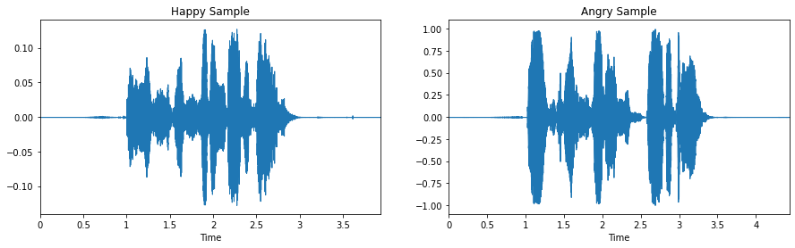</div></section><section class="cell" data-cell="14" id="celda-15"><h1 id="seccion-4"><strong>2.1.1 Transformada de Fourier Discreta (Discrete Fourier Transform - DFT)</strong></h1>
<p>La transformada de Fourier, es una medida de similitud entre la señal en función de <math aria-label="t" display="inline" xmlns="http://www.w3.org/1998/Math/MathML"><mrow><mi>t</mi></mrow></math> y una exponencial compleja (si representamos la señal con exponenciales complejas, podremos comparar la señal con las exponenciales de frencuencia variable de la transformada). Es decir, permite seprar una serie temportal (independimiente de su forma de ondulación) en una suma de ondas simples (de senos y cosenos), y además, permite dibujar las amplitudes de las ondas en función de la frecuencia (número de repeticiones por unidad de tiempo de cualquier evento periódico), donde la frecuencia se mide en hercios <math aria-label="Hz" display="inline" xmlns="http://www.w3.org/1998/Math/MathML"><mrow><mi>H</mi><mi>z</mi></mrow></math> (<strong>un hercio es la frecuencia de un suceso o fenómeno repetido por un segundo</strong>).</p>
<p>En términos generales, la <strong>Transformada de Fourier Discreta (Discrete Fourrier Transform - DFT)</strong> de una señal periódica (cualquiera) se define como:</p>
<p><math aria-label="\begin{align}
    X_N[k] &amp;= \sum_{n=0}^{N-1} x_N [n] e ^{-j2\pi n k / N} &amp;&amp; \mbox 0 \leq k &lt; N,\\  x_N[n] &amp;= \frac{1}{N} \sum_{k=0}^{N-1} X_N[k] e^{j2\pi n k / N} &amp;&amp; \mbox 0 \leq n &lt; N.
\end{align}" display="block" xmlns="http://www.w3.org/1998/Math/MathML"><mrow><mrow><msub><mi>X</mi><mi>N</mi></msub><mo stretchy="false">[</mo><mi>k</mi><mo stretchy="false">]</mo><mi>&amp;</mi><mo>=</mo><munderover><mo>∑</mo><mrow><mi>n</mi><mo>=</mo><mn>0</mn></mrow><mrow><mi>N</mi><mo>−</mo><mn>1</mn></mrow></munderover><msub><mi>x</mi><mi>N</mi></msub><mo stretchy="false">[</mo><mi>n</mi><mo stretchy="false">]</mo><msup><mi>e</mi><mrow><mo>−</mo><mi>j</mi><mn>2</mn><mi>π</mi><mi>n</mi><mi>k</mi><mo>/</mo><mi>N</mi></mrow></msup><mi>&amp;</mi><mi>&amp;</mi><mstyle displaystyle="false" scriptlevel="0"><mtext>0</mtext></mstyle><mo>≤</mo><mi>k</mi><mo>&lt;</mo><mi>N</mi><mo>,</mo><mspace linebreak="newline"></mspace><msub><mi>x</mi><mi>N</mi></msub><mo stretchy="false">[</mo><mi>n</mi><mo stretchy="false">]</mo><mi>&amp;</mi><mo>=</mo><mfrac><mrow><mn>1</mn></mrow><mrow><mi>N</mi></mrow></mfrac><munderover><mo>∑</mo><mrow><mi>k</mi><mo>=</mo><mn>0</mn></mrow><mrow><mi>N</mi><mo>−</mo><mn>1</mn></mrow></munderover><msub><mi>X</mi><mi>N</mi></msub><mo stretchy="false">[</mo><mi>k</mi><mo stretchy="false">]</mo><msup><mi>e</mi><mrow><mi>j</mi><mn>2</mn><mi>π</mi><mi>n</mi><mi>k</mi><mo>/</mo><mi>N</mi></mrow></msup><mi>&amp;</mi><mi>&amp;</mi><mstyle displaystyle="false" scriptlevel="0"><mtext>0</mtext></mstyle><mo>≤</mo><mi>n</mi><mo>&lt;</mo><mi>N</mi><mo>.</mo></mrow></mrow></math></p>
<hr/>
</section><section class="cell" data-cell="15" id="celda-16"><h1 id="seccion-5"><strong>2.1.2 Transformada Rápida de Fourier (Fast Fourier Transform - FFT)</strong></h1>
<p>Dado que el cálculo directo de la DFT requiere un orden de operaciones <math aria-label="N^2" display="inline" xmlns="http://www.w3.org/1998/Math/MathML"><mrow><msup><mi>N</mi><mn>2</mn></msup></mrow></math>, asumiendo que las funciones trigonométricas han sido precalculadas, la familia de algoritmos de FFT solo requiere un orden de operaciones de <math aria-label="Nlog_2N" display="inline" xmlns="http://www.w3.org/1998/Math/MathML"><mrow><mi>N</mi><mi>l</mi><mi>o</mi><msub><mi>g</mi><mn>2</mn></msub><mi>N</mi></mrow></math>.</p>
<h1 id="seccion-6"><strong>2.1.2.1 Familia de Algoritmos Radix FFT</strong></h1>
<p>Primeramente, expresaremos la transformada discreta de Fourier (DFT) de <math aria-label="x[n]" display="inline" xmlns="http://www.w3.org/1998/Math/MathML"><mrow><mi>x</mi><mo stretchy="false">[</mo><mi>n</mi><mo stretchy="false">]</mo></mrow></math> como:</p>
<p><math aria-label="\begin{align}
    X[k] &amp;= \sum_{n=0}^{N-1} x[n] e^{-j2\pi n k / N} = \sum_{n=0}^{N-1} x[n] \underbrace{W_N}^{nk}_{=e^{-j 2 \pi/N }} &amp;&amp; \mbox 0 \leq k &lt; N,
\end{align}" display="block" xmlns="http://www.w3.org/1998/Math/MathML"><mrow><mrow><mi>X</mi><mo stretchy="false">[</mo><mi>k</mi><mo stretchy="false">]</mo><mi>&amp;</mi><mo>=</mo><munderover><mo>∑</mo><mrow><mi>n</mi><mo>=</mo><mn>0</mn></mrow><mrow><mi>N</mi><mo>−</mo><mn>1</mn></mrow></munderover><mi>x</mi><mo stretchy="false">[</mo><mi>n</mi><mo stretchy="false">]</mo><msup><mi>e</mi><mrow><mo>−</mo><mi>j</mi><mn>2</mn><mi>π</mi><mi>n</mi><mi>k</mi><mo>/</mo><mi>N</mi></mrow></msup><mo>=</mo><munderover><mo>∑</mo><mrow><mi>n</mi><mo>=</mo><mn>0</mn></mrow><mrow><mi>N</mi><mo>−</mo><mn>1</mn></mrow></munderover><mi>x</mi><mo stretchy="false">[</mo><mi>n</mi><mo stretchy="false">]</mo><munderover><munder><mrow><msub><mi>W</mi><mi>N</mi></msub></mrow><mo>⏟</mo></munder><mrow><mo>=</mo><msup><mi>e</mi><mrow><mo>−</mo><mi>j</mi><mn>2</mn><mi>π</mi><mo>/</mo><mi>N</mi></mrow></msup></mrow><mrow><mi>n</mi><mi>k</mi></mrow></munderover><mi>&amp;</mi><mi>&amp;</mi><mstyle displaystyle="false" scriptlevel="0"><mtext>0</mtext></mstyle><mo>≤</mo><mi>k</mi><mo>&lt;</mo><mi>N</mi><mo>,</mo></mrow></mrow></math></p>
<p>la cual requiere operaciones de multiplicación y sumas complejas del orden <math aria-label="N^2" display="inline" xmlns="http://www.w3.org/1998/Math/MathML"><mrow><msup><mi>N</mi><mn>2</mn></msup></mrow></math>. Luego, supongamos que <math aria-label="N" display="inline" xmlns="http://www.w3.org/1998/Math/MathML"><mrow><mi>N</mi></mrow></math> es par, y <math aria-label="f[n] = x[2n]" display="inline" xmlns="http://www.w3.org/1998/Math/MathML"><mrow><mi>f</mi><mo stretchy="false">[</mo><mi>n</mi><mo stretchy="false">]</mo><mo>=</mo><mi>x</mi><mo stretchy="false">[</mo><mn>2</mn><mi>n</mi><mo stretchy="false">]</mo></mrow></math> representa las muestras con índice par de <math aria-label="x[n]" display="inline" xmlns="http://www.w3.org/1998/Math/MathML"><mrow><mi>x</mi><mo stretchy="false">[</mo><mi>n</mi><mo stretchy="false">]</mo></mrow></math>, y sea <math aria-label="g[n] = x[2n+1]" display="inline" xmlns="http://www.w3.org/1998/Math/MathML"><mrow><mi>g</mi><mo stretchy="false">[</mo><mi>n</mi><mo stretchy="false">]</mo><mo>=</mo><mi>x</mi><mo stretchy="false">[</mo><mn>2</mn><mi>n</mi><mo>+</mo><mn>1</mn><mo stretchy="false">]</mo></mrow></math> que representa las muestras con índice impar, es decir:</p>
<p><math aria-label="\begin{align}
    X[k] &amp;= \sum_{n=0}^{\frac{N}{2}-1} f[n]W_{N/2}^{nk} + W_{N}^{k} \sum_{n=0}^{\frac{N}{2}-1} g[n]W_{N/2}^{nk} = F[k] + W_{N}^{k}G[k],
\end{align}" display="block" xmlns="http://www.w3.org/1998/Math/MathML"><mrow><mrow><mi>X</mi><mo stretchy="false">[</mo><mi>k</mi><mo stretchy="false">]</mo><mi>&amp;</mi><mo>=</mo><munderover><mo>∑</mo><mrow><mi>n</mi><mo>=</mo><mn>0</mn></mrow><mrow><mfrac><mrow><mi>N</mi></mrow><mrow><mn>2</mn></mrow></mfrac><mo>−</mo><mn>1</mn></mrow></munderover><mi>f</mi><mo stretchy="false">[</mo><mi>n</mi><mo stretchy="false">]</mo><msubsup><mi>W</mi><mrow><mi>N</mi><mo>/</mo><mn>2</mn></mrow><mrow><mi>n</mi><mi>k</mi></mrow></msubsup><mo>+</mo><msubsup><mi>W</mi><mrow><mi>N</mi></mrow><mrow><mi>k</mi></mrow></msubsup><munderover><mo>∑</mo><mrow><mi>n</mi><mo>=</mo><mn>0</mn></mrow><mrow><mfrac><mrow><mi>N</mi></mrow><mrow><mn>2</mn></mrow></mfrac><mo>−</mo><mn>1</mn></mrow></munderover><mi>g</mi><mo stretchy="false">[</mo><mi>n</mi><mo stretchy="false">]</mo><msubsup><mi>W</mi><mrow><mi>N</mi><mo>/</mo><mn>2</mn></mrow><mrow><mi>n</mi><mi>k</mi></mrow></msubsup><mo>=</mo><mi>F</mi><mo stretchy="false">[</mo><mi>k</mi><mo stretchy="false">]</mo><mo>+</mo><msubsup><mi>W</mi><mrow><mi>N</mi></mrow><mrow><mi>k</mi></mrow></msubsup><mi>G</mi><mo stretchy="false">[</mo><mi>k</mi><mo stretchy="false">]</mo><mo>,</mo></mrow></mrow></math></p>
<p>donde <math aria-label="F[k]" display="inline" xmlns="http://www.w3.org/1998/Math/MathML"><mrow><mi>F</mi><mo stretchy="false">[</mo><mi>k</mi><mo stretchy="false">]</mo></mrow></math> y <math aria-label="G[k]" display="inline" xmlns="http://www.w3.org/1998/Math/MathML"><mrow><mi>G</mi><mo stretchy="false">[</mo><mi>k</mi><mo stretchy="false">]</mo></mrow></math> son los <math aria-label="N/2" display="inline" xmlns="http://www.w3.org/1998/Math/MathML"><mrow><mi>N</mi><mo>/</mo><mn>2</mn></mrow></math> puntos de las DFTs de <math aria-label="f[n]" display="inline" xmlns="http://www.w3.org/1998/Math/MathML"><mrow><mi>f</mi><mo stretchy="false">[</mo><mi>n</mi><mo stretchy="false">]</mo></mrow></math> y <math aria-label="g[n]" display="inline" xmlns="http://www.w3.org/1998/Math/MathML"><mrow><mi>g</mi><mo stretchy="false">[</mo><mi>n</mi><mo stretchy="false">]</mo></mrow></math> respectivamente. Ya que <math aria-label="F[k]" display="inline" xmlns="http://www.w3.org/1998/Math/MathML"><mrow><mi>F</mi><mo stretchy="false">[</mo><mi>k</mi><mo stretchy="false">]</mo></mrow></math> y <math aria-label="G[k]" display="inline" xmlns="http://www.w3.org/1998/Math/MathML"><mrow><mi>G</mi><mo stretchy="false">[</mo><mi>k</mi><mo stretchy="false">]</mo></mrow></math> están definidas para <math aria-label="0 \leq k &lt; N/2" display="inline" xmlns="http://www.w3.org/1998/Math/MathML"><mrow><mn>0</mn><mo>≤</mo><mi>k</mi><mo>&lt;</mo><mi>N</mi><mo>/</mo><mn>2</mn></mrow></math>, necesitamos también evaluarlas para <math aria-label="N/2 \leq k &lt; N" display="inline" xmlns="http://www.w3.org/1998/Math/MathML"><mrow><mi>N</mi><mo>/</mo><mn>2</mn><mo>≤</mo><mi>k</mi><mo>&lt;</mo><mi>N</mi></mrow></math>:</p>
<p><math aria-label="\begin{align}
    F[k + N/2] = F[k], \\
    G[k + N/2] = G[k].
\end{align}" display="block" xmlns="http://www.w3.org/1998/Math/MathML"><mrow><mrow><mi>F</mi><mo stretchy="false">[</mo><mi>k</mi><mo>+</mo><mi>N</mi><mo>/</mo><mn>2</mn><mo stretchy="false">]</mo><mo>=</mo><mi>F</mi><mo stretchy="false">[</mo><mi>k</mi><mo stretchy="false">]</mo><mo>,</mo><mspace linebreak="newline"></mspace><mi>G</mi><mo stretchy="false">[</mo><mi>k</mi><mo>+</mo><mi>N</mi><mo>/</mo><mn>2</mn><mo stretchy="false">]</mo><mo>=</mo><mi>G</mi><mo stretchy="false">[</mo><mi>k</mi><mo stretchy="false">]</mo><mo>.</mo></mrow></mrow></math></p>
<p>Si <math aria-label="N/2" display="inline" xmlns="http://www.w3.org/1998/Math/MathML"><mrow><mi>N</mi><mo>/</mo><mn>2</mn></mrow></math> es también par, entonces <math aria-label="f[n]" display="inline" xmlns="http://www.w3.org/1998/Math/MathML"><mrow><mi>f</mi><mo stretchy="false">[</mo><mi>n</mi><mo stretchy="false">]</mo></mrow></math> y <math aria-label="g[n]" display="inline" xmlns="http://www.w3.org/1998/Math/MathML"><mrow><mi>g</mi><mo stretchy="false">[</mo><mi>n</mi><mo stretchy="false">]</mo></mrow></math> pueden descomponerse en secuencias de muestras de índices pares e impares y por lo tanto su DFT puede ser calculada usando el mismo proceso. Además, si <math aria-label="N" display="inline" xmlns="http://www.w3.org/1998/Math/MathML"><mrow><mi>N</mi></mrow></math> es un potencia entera de <math aria-label="2" display="inline" xmlns="http://www.w3.org/1998/Math/MathML"><mrow><mn>2</mn></mrow></math>, este proceso se puede iterar y se puede demostrar que el número de multiplicaciones y sumas, es efectivamente <math aria-label="N log_2 N" display="inline" xmlns="http://www.w3.org/1998/Math/MathML"><mrow><mi>N</mi><mi>l</mi><mi>o</mi><msub><mi>g</mi><mn>2</mn></msub><mi>N</mi></mrow></math>.</p>
<p>El algoritmo presentado se denomina <strong>Radix-2</strong>. Siguiendo la idea de Radix-2, podemos descomponer una secuencia en cuatro secuencias (y luego aplicar el proceso de descripto anteriormente), y así, obtener <strong>Radix-4</strong> (que se puede aplicar cuando <math aria-label="N" display="inline" xmlns="http://www.w3.org/1998/Math/MathML"><mrow><mi>N</mi></mrow></math> es una potencia de <math aria-label="4" display="inline" xmlns="http://www.w3.org/1998/Math/MathML"><mrow><mn>4</mn></mrow></math>).</p>
<p>Además, <strong>Radix-8</strong> y <strong>Radix-16</strong> se aplican cuando <math aria-label="N" display="inline" xmlns="http://www.w3.org/1998/Math/MathML"><mrow><mi>N</mi></mrow></math> es potencia de <math aria-label="8" display="inline" xmlns="http://www.w3.org/1998/Math/MathML"><mrow><mn>8</mn></mrow></math> o <math aria-label="16" display="inline" xmlns="http://www.w3.org/1998/Math/MathML"><mrow><mn>16</mn></mrow></math> respectivamente. Por otra parte, la combinación entre Radix-2 y Radix-4, se conoce como <strong>Split-Radix</strong> y se puede aplicar a <math aria-label="N" display="inline" xmlns="http://www.w3.org/1998/Math/MathML"><mrow><mi>N</mi></mrow></math> siendo una potencia de <math aria-label="2" display="inline" xmlns="http://www.w3.org/1998/Math/MathML"><mrow><mn>2</mn></mrow></math>.</p>
<p>Finalmente, se puede descomponer <math aria-label="N" display="inline" xmlns="http://www.w3.org/1998/Math/MathML"><mrow><mi>N</mi></mrow></math> en factores primos: <math aria-label="N = p_1p_2 \dots p_L" display="inline" xmlns="http://www.w3.org/1998/Math/MathML"><mrow><mi>N</mi><mo>=</mo><msub><mi>p</mi><mn>1</mn></msub><msub><mi>p</mi><mn>2</mn></msub><mo>…</mo><msub><mi>p</mi><mi>L</mi></msub></mrow></math>, siendo <math aria-label="p_i" display="inline" xmlns="http://www.w3.org/1998/Math/MathML"><mrow><msub><mi>p</mi><mi>i</mi></msub></mrow></math> un número primo. Esto deriva en el algoritmo de <strong>Prime-Factor</strong> que ofrece una mayor flexibilidad a la hora de elegir el valor de <math aria-label="N" display="inline" xmlns="http://www.w3.org/1998/Math/MathML"><mrow><mi>N</mi></mrow></math>.</p>
<hr/>
</section><section class="cell" data-cell="16" id="celda-17"><h1 id="seccion-7"><strong>2.1.3 Análisis de Transformada de Fourier de Tiempo Reducido</strong></h1>
<p>Estas técnicas de análisis de tiempo reducido descomponen la señal de audio (en nuestro caso, señales de voz) en una serie de fragmentos cortos, denominados cuadros de análisis (<strong>analysis frames</strong>), y analizan cada uno de manera independiente. A lo largo del presente trabajo, utilizaremos el término <strong>frames</strong> para referirnos a <strong>cuadros</strong>.</p>
<p>El uso un frame de análisis implica que la región es lo suficientemente reducida (corta) para que el comportamiento (periodicidad o apariencia de ruido) de la señal sea aproximadamente constante. Si la región donde la señal de voz parece periódica es demasiado larga, el periodo del tono (<strong>pitch</strong>) no es constante y no todos los periodos de la región son similares. Dicha región tiene que ser lo suficientemente corta para que la señal sea estacionaria en esa región (las características de la señal sean uniformes).</p>
<p>Entonces, se define como señal de tiempo reducido <math aria-label="x_m[n]" display="inline" xmlns="http://www.w3.org/1998/Math/MathML"><mrow><msub><mi>x</mi><mi>m</mi></msub><mo stretchy="false">[</mo><mi>n</mi><mo stretchy="false">]</mo></mrow></math> de frame <math aria-label="m" display="inline" xmlns="http://www.w3.org/1998/Math/MathML"><mrow><mi>m</mi></mrow></math> como:</p>
<p><math aria-label="\begin{align}
    x_m[n] = x[n]w_m[n],
\end{align}" display="block" xmlns="http://www.w3.org/1998/Math/MathML"><mrow><mrow><msub><mi>x</mi><mi>m</mi></msub><mo stretchy="false">[</mo><mi>n</mi><mo stretchy="false">]</mo><mo>=</mo><mi>x</mi><mo stretchy="false">[</mo><mi>n</mi><mo stretchy="false">]</mo><msub><mi>w</mi><mi>m</mi></msub><mo stretchy="false">[</mo><mi>n</mi><mo stretchy="false">]</mo><mo>,</mo></mrow></mrow></math></p>
<p>donde el producto de <math aria-label="x[n]" display="inline" xmlns="http://www.w3.org/1998/Math/MathML"><mrow><mi>x</mi><mo stretchy="false">[</mo><mi>n</mi><mo stretchy="false">]</mo></mrow></math> por una función de ventana <math aria-label="w_m[n]" display="inline" xmlns="http://www.w3.org/1998/Math/MathML"><mrow><msub><mi>w</mi><mi>m</mi></msub><mo stretchy="false">[</mo><mi>n</mi><mo stretchy="false">]</mo></mrow></math> es cero en todas las regiones, exceptuando las regiones pequeñas.</p>
<p>Mientras que la función de ventana puede tener diferentes valores para diferentes frames <math aria-label="m" display="inline" xmlns="http://www.w3.org/1998/Math/MathML"><mrow><mi>m</mi></mrow></math>, una elección general es mantenerlo constante para todos los frames:</p>
<p><math aria-label="\begin{align}
    w_m[n] = w[m-n],
\end{align}" display="block" xmlns="http://www.w3.org/1998/Math/MathML"><mrow><mrow><msub><mi>w</mi><mi>m</mi></msub><mo stretchy="false">[</mo><mi>n</mi><mo stretchy="false">]</mo><mo>=</mo><mi>w</mi><mo stretchy="false">[</mo><mi>m</mi><mo>−</mo><mi>n</mi><mo stretchy="false">]</mo><mo>,</mo></mrow></mrow></math></p>
<p>donde <math aria-label="w[n] = 0" display="inline" xmlns="http://www.w3.org/1998/Math/MathML"><mrow><mi>w</mi><mo stretchy="false">[</mo><mi>n</mi><mo stretchy="false">]</mo><mo>=</mo><mn>0</mn></mrow></math> para <math aria-label="|n| &gt; N/2" display="inline" xmlns="http://www.w3.org/1998/Math/MathML"><mrow><mo stretchy="false">|</mo><mi>n</mi><mo stretchy="false">|</mo><mo>&gt;</mo><mi>N</mi><mo>/</mo><mn>2</mn></mrow></math>. En la práctica, la longitud de ventana es en el orden de <math aria-label="20" display="inline" xmlns="http://www.w3.org/1998/Math/MathML"><mrow><mn>20</mn></mrow></math> a <math aria-label="30" display="inline" xmlns="http://www.w3.org/1998/Math/MathML"><mrow><mn>30</mn></mrow></math> ms (milisegundos).</p>
<p>Finalmente, podemos definir la <strong>Transformada de Fourier de Tiempo Reducido (Short-Time Fourier Transform - STFT)</strong> como:</p>
<p><math aria-label="\begin{align}
    X_m(e^{j\omega}) &amp;= \sum_{n=-\infty}^{\infty} x_m[n] e^{-j \omega n} = \sum_{n=-\infty}^{\infty} w[m-n]x[n]e^{-j \omega n}.
\end{align}" display="block" xmlns="http://www.w3.org/1998/Math/MathML"><mrow><mrow><msub><mi>X</mi><mi>m</mi></msub><mo stretchy="false">(</mo><msup><mi>e</mi><mrow><mi>j</mi><mi>ω</mi></mrow></msup><mo stretchy="false">)</mo><mi>&amp;</mi><mo>=</mo><munderover><mo>∑</mo><mrow><mi>n</mi><mo>=</mo><mo>−</mo><mo>∞</mo></mrow><mrow><mo>∞</mo></mrow></munderover><msub><mi>x</mi><mi>m</mi></msub><mo stretchy="false">[</mo><mi>n</mi><mo stretchy="false">]</mo><msup><mi>e</mi><mrow><mo>−</mo><mi>j</mi><mi>ω</mi><mi>n</mi></mrow></msup><mo>=</mo><munderover><mo>∑</mo><mrow><mi>n</mi><mo>=</mo><mo>−</mo><mo>∞</mo></mrow><mrow><mo>∞</mo></mrow></munderover><mi>w</mi><mo stretchy="false">[</mo><mi>m</mi><mo>−</mo><mi>n</mi><mo stretchy="false">]</mo><mi>x</mi><mo stretchy="false">[</mo><mi>n</mi><mo stretchy="false">]</mo><msup><mi>e</mi><mrow><mo>−</mo><mi>j</mi><mi>ω</mi><mi>n</mi></mrow></msup><mo>.</mo></mrow></mrow></math></p>
<p>En la práctica, la transformada de Fourier de la ecuación anterior, se obtiene mediante una FFT. Si la ventana tiene una logitud <math aria-label="N" display="inline" xmlns="http://www.w3.org/1998/Math/MathML"><mrow><mi>N</mi></mrow></math>, la FFT debe tener una longitud mayor o igual a <math aria-label="N" display="inline" xmlns="http://www.w3.org/1998/Math/MathML"><mrow><mi>N</mi></mrow></math>. Dado que los algoritmos FFT tienen a menudo tienen longitudes que son potencias de <math aria-label="2" display="inline" xmlns="http://www.w3.org/1998/Math/MathML"><mrow><mn>2</mn></mrow></math> <math aria-label="(L=2^R)" display="inline" xmlns="http://www.w3.org/1998/Math/MathML"><mrow><mo stretchy="false">(</mo><mi>L</mi><mo>=</mo><msup><mn>2</mn><mi>R</mi></msup><mo stretchy="false">)</mo></mrow></math>, la señal en ventana con longitud <math aria-label="N" display="inline" xmlns="http://www.w3.org/1998/Math/MathML"><mrow><mi>N</mi></mrow></math> se aumenta con <math aria-label="(L-N)" display="inline" xmlns="http://www.w3.org/1998/Math/MathML"><mrow><mo stretchy="false">(</mo><mi>L</mi><mo>−</mo><mi>N</mi><mo stretchy="false">)</mo></mrow></math> ceros antes, después o ambos. Este proceso se llama <strong>relleno de ceros (padding-zeros)</strong>. Un valor mayor de <math aria-label="L" display="inline" xmlns="http://www.w3.org/1998/Math/MathML"><mrow><mi>L</mi></mrow></math> proporciona una descripción más fina de la transformada discreta de Fourier; pero no aumenta la resolución de la frecuencia de análisis.</p>
<hr/>
</section><section class="cell" data-cell="17" id="celda-18"><details class="source-code"><summary>Código Python · celda 18</summary><button class="copy-code" type="button">Copiar código</button><div class="highlight"><pre><span></span><span class="c1"># plot del espectrograma correspondiente a happy_waveform</span>
<span class="n">stft_spectrum_matrix</span> <span class="o">=</span> <span class="n">librosa</span><span class="o">.</span><span class="n">stft</span><span class="p">(</span><span class="n">happy_waveform</span><span class="p">)</span>
<span class="n">plt</span><span class="o">.</span><span class="n">figure</span><span class="p">(</span><span class="n">figsize</span><span class="o">=</span><span class="p">(</span><span class="mi">10</span><span class="p">,</span> <span class="mi">4</span><span class="p">))</span>
<span class="n">librosa</span><span class="o">.</span><span class="n">display</span><span class="o">.</span><span class="n">specshow</span><span class="p">(</span><span class="n">librosa</span><span class="o">.</span><span class="n">amplitude_to_db</span><span class="p">(</span><span class="n">np</span><span class="o">.</span><span class="n">abs</span><span class="p">(</span><span class="n">stft_spectrum_matrix</span><span class="p">),</span> <span class="n">ref</span><span class="o">=</span><span class="n">np</span><span class="o">.</span><span class="n">max</span><span class="p">),</span><span class="n">y_axis</span><span class="o">=</span><span class="s1">'log'</span><span class="p">,</span> <span class="n">x_axis</span><span class="o">=</span><span class="s1">'time'</span><span class="p">)</span>
<span class="n">plt</span><span class="o">.</span><span class="n">title</span><span class="p">(</span><span class="s1">'Happy STFT Power spectrogram'</span><span class="p">)</span>
<span class="n">plt</span><span class="o">.</span><span class="n">colorbar</span><span class="p">(</span><span class="nb">format</span><span class="o">=</span><span class="s1">'</span><span class="si">%+2.0f</span><span class="s1"> dB'</span><span class="p">)</span>
<span class="n">plt</span><span class="o">.</span><span class="n">tight_layout</span><span class="p">()</span>

<span class="c1"># plot del espectrograma correspondiente a angry_waveform</span>
<span class="n">stft_spectrum_matrix</span> <span class="o">=</span> <span class="n">librosa</span><span class="o">.</span><span class="n">stft</span><span class="p">(</span><span class="n">angry_waveform</span><span class="p">)</span>
<span class="n">plt</span><span class="o">.</span><span class="n">figure</span><span class="p">(</span><span class="n">figsize</span><span class="o">=</span><span class="p">(</span><span class="mi">10</span><span class="p">,</span> <span class="mi">4</span><span class="p">))</span>
<span class="n">librosa</span><span class="o">.</span><span class="n">display</span><span class="o">.</span><span class="n">specshow</span><span class="p">(</span><span class="n">librosa</span><span class="o">.</span><span class="n">amplitude_to_db</span><span class="p">(</span><span class="n">np</span><span class="o">.</span><span class="n">abs</span><span class="p">(</span><span class="n">stft_spectrum_matrix</span><span class="p">),</span> <span class="n">ref</span><span class="o">=</span><span class="n">np</span><span class="o">.</span><span class="n">max</span><span class="p">),</span><span class="n">y_axis</span><span class="o">=</span><span class="s1">'log'</span><span class="p">,</span> <span class="n">x_axis</span><span class="o">=</span><span class="s1">'time'</span><span class="p">)</span>
<span class="n">plt</span><span class="o">.</span><span class="n">title</span><span class="p">(</span><span class="s1">'Angry STFT Power spectrogram'</span><span class="p">)</span>
<span class="n">plt</span><span class="o">.</span><span class="n">colorbar</span><span class="p">(</span><span class="nb">format</span><span class="o">=</span><span class="s1">'</span><span class="si">%+2.0f</span><span class="s1"> dB'</span><span class="p">)</span>
<span class="n">plt</span><span class="o">.</span><span class="n">tight_layout</span><span class="p">()</span>
</pre></div>
</details><div class="output">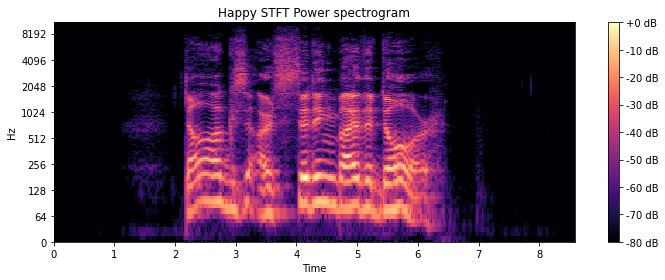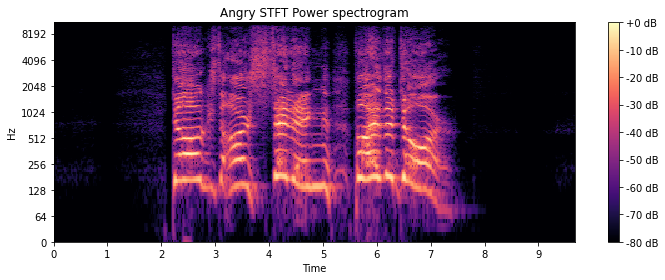</div></section><section class="cell" data-cell="18" id="celda-19"><h1 id="seccion-8"><strong>2.1.4 Coeficientes Cepstrales de las Frecuencias de Mel (Mel Frequency Cepstral Coefficients - MFCC)</strong></h1>
<p>Los coeficientes ceptrales de las frecuencias de meel (MFCC), se utilizan par analizar señales de audio estructuradas como el habla y la música, ya que, permiten extraer las características más importantes de dicha señal. Por otra parte, los coeficientes MFCC son sensibles al ruido, por lo que la precensia de éste, degrada su rendimiento.</p>
<p>Formalmente, se definen como una representación de la parte real de los coeficientes <strong>Cepstrales</strong> de una señal de audio de corta duración en ventana derivada de la FFT de esa señal.</p>
<h1 id="seccion-9"><strong>2.1.4.1 Cálculo de los Coeficientes MFCC</strong></h1>
<p>En las siguientes secciones, se describe el algoritmo para calcular los coeficientes MFCC de una señal de audio.</p>
<h1 id="seccion-10"><strong>2.1.4.1.1 Conversión A/D</strong></h1>
<p>Para realizar la  <strong>Conversión A/D</strong>, se toma la señal de audio analógica y se la aplica una transformación obteniendo así, una señal discreta en el tiempo.</p>
</section><section class="cell" data-cell="19" id="celda-20"><details class="source-code"><summary>Código Python · celda 20</summary><button class="copy-code" type="button">Copiar código</button><div class="highlight"><pre><span></span><span class="n">plt</span><span class="o">.</span><span class="n">figure</span><span class="p">(</span><span class="n">figsize</span><span class="o">=</span><span class="p">(</span><span class="mi">15</span><span class="p">,</span> <span class="mi">4</span><span class="p">))</span>
<span class="n">plt</span><span class="o">.</span><span class="n">subplot</span><span class="p">(</span><span class="mi">1</span><span class="p">,</span> <span class="mi">2</span><span class="p">,</span> <span class="mi">1</span><span class="p">)</span>
<span class="n">librosa</span><span class="o">.</span><span class="n">display</span><span class="o">.</span><span class="n">waveplot</span><span class="p">(</span><span class="n">happy_waveform</span><span class="p">,</span> <span class="n">sr</span><span class="o">=</span><span class="n">happy_sample_rate</span><span class="p">)</span>
<span class="n">plt</span><span class="o">.</span><span class="n">title</span><span class="p">(</span><span class="s1">'Happy Sample - Wave Form'</span><span class="p">)</span>
</pre></div>
</details><div class="output"><pre>Text(0.5, 1.0, 'Happy Sample - Wave Form')</pre>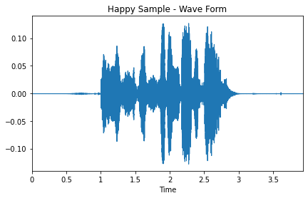</div></section><section class="cell" data-cell="20" id="celda-21"><h1 id="seccion-11"><strong>2.1.4.1.2 Pre-Énfasis</strong></h1>
<p>Con el <strong>Pre-Énfasis</strong> lo que busca es tratar de aumentar la cantidad de energía de las frecuencias más altas de la señal de audio (permite reducir efectos tales como la atenuación, distorsión o saturación). Además, el pre-énfasis es un filtro del tipo respuesta <strong>impulso-finito (Finite-Impulse Response - FIR)</strong>, siendo el caso particular, un filtro FIR de primer orden:</p>
<p><math aria-label="\begin{align}
    y[n] &amp;= x[n] + \alpha x[n-1],
\end{align}" display="block" xmlns="http://www.w3.org/1998/Math/MathML"><mrow><mrow><mi>y</mi><mo stretchy="false">[</mo><mi>n</mi><mo stretchy="false">]</mo><mi>&amp;</mi><mo>=</mo><mi>x</mi><mo stretchy="false">[</mo><mi>n</mi><mo stretchy="false">]</mo><mo>+</mo><mi>α</mi><mi>x</mi><mo stretchy="false">[</mo><mi>n</mi><mo>−</mo><mn>1</mn><mo stretchy="false">]</mo><mo>,</mo></mrow></mrow></math></p>
<p>para valores reales de <math aria-label="\alpha" display="inline" xmlns="http://www.w3.org/1998/Math/MathML"><mrow><mi>α</mi></mrow></math> (a menos que <math aria-label="\alpha =1" display="inline" xmlns="http://www.w3.org/1998/Math/MathML"><mrow><mi>α</mi><mo>=</mo><mn>1</mn></mrow></math>), no tiene una fase lineal. Y su transformada <math aria-label="Z" display="inline" xmlns="http://www.w3.org/1998/Math/MathML"><mrow><mi>Z</mi></mrow></math> está dada por:</p>
<p><math aria-label="\begin{align}
    H(Z) &amp;= 1+ \alpha z^{-1}.
\end{align}" display="block" xmlns="http://www.w3.org/1998/Math/MathML"><mrow><mrow><mi>H</mi><mo stretchy="false">(</mo><mi>Z</mi><mo stretchy="false">)</mo><mi>&amp;</mi><mo>=</mo><mn>1</mn><mo>+</mo><mi>α</mi><msup><mi>z</mi><mrow><mo>−</mo><mn>1</mn></mrow></msup><mo>.</mo></mrow></mrow></math></p>
<p>Cabe destacar que la transformada <math aria-label="Z" display="inline" xmlns="http://www.w3.org/1998/Math/MathML"><mrow><mi>Z</mi></mrow></math>, es la generalización de la transformada de Fourier para una señal digital <math aria-label="h[n]" display="inline" xmlns="http://www.w3.org/1998/Math/MathML"><mrow><mi>h</mi><mo stretchy="false">[</mo><mi>n</mi><mo stretchy="false">]</mo></mrow></math>. Matemáticamente, se define como:</p>
<p><math aria-label="\begin{align}
    H(z) &amp;= \sum_{n=-\infty}^{\infty} h[n]z^{-n},
\end{align}" display="block" xmlns="http://www.w3.org/1998/Math/MathML"><mrow><mrow><mi>H</mi><mo stretchy="false">(</mo><mi>z</mi><mo stretchy="false">)</mo><mi>&amp;</mi><mo>=</mo><munderover><mo>∑</mo><mrow><mi>n</mi><mo>=</mo><mo>−</mo><mo>∞</mo></mrow><mrow><mo>∞</mo></mrow></munderover><mi>h</mi><mo stretchy="false">[</mo><mi>n</mi><mo stretchy="false">]</mo><msup><mi>z</mi><mrow><mo>−</mo><mi>n</mi></mrow></msup><mo>,</mo></mrow></mrow></math></p>
<p>donde <math aria-label="z" display="inline" xmlns="http://www.w3.org/1998/Math/MathML"><mrow><mi>z</mi></mrow></math> es una variable compleja. Para el caso de la transformada de Fourier de <math aria-label="h[n]" display="inline" xmlns="http://www.w3.org/1998/Math/MathML"><mrow><mi>h</mi><mo stretchy="false">[</mo><mi>n</mi><mo stretchy="false">]</mo></mrow></math> es igual a su transformada <math aria-label="z" display="inline" xmlns="http://www.w3.org/1998/Math/MathML"><mrow><mi>z</mi></mrow></math> evaluada en <math aria-label="z=e^{j\omega}" display="inline" xmlns="http://www.w3.org/1998/Math/MathML"><mrow><mi>z</mi><mo>=</mo><msup><mi>e</mi><mrow><mi>j</mi><mi>ω</mi></mrow></msup></mrow></math>. Esta transformada, se suele usar para analizar características de filtros más generales, dada su forma funcional polinomial.</p>
<p>Entonces, interesa analizar la magnitud (un número real que se calcula como <math aria-label="|a+bi| = \sqrt{a^2 + b^2}" display="inline" xmlns="http://www.w3.org/1998/Math/MathML"><mrow><mo stretchy="false">|</mo><mi>a</mi><mo>+</mo><mi>b</mi><mi>i</mi><mo stretchy="false">|</mo><mo>=</mo><msqrt><mrow><msup><mi>a</mi><mn>2</mn></msup><mo>+</mo><msup><mi>b</mi><mn>2</mn></msup></mrow></msqrt></mrow></math>):</p>
<p>\begin{aligned}
|H (e^{j\omega})|^2 &amp;= | 1 + \alpha (cos \omega - j sin \omega) |^2 \
&amp;= (1 + \alpha cos \omega)^2 + ( \alpha sin \omega )^2 \
&amp;= 1 + 2\alpha cos \omega + \alpha^2 cos^2 \omega + \alpha^2 sin^2\omega \
&amp;= 1 + \alpha^2 (cos^2 \omega + sin^2 \omega) + 2 \alpha cos \omega\
&amp;= 1 + \alpha^2 + 2\alpha cos \omega,
\end{aligned}</p>
<p>y también, analizar la fase (<math aria-label="arctan(\frac{b}{a})" display="inline" xmlns="http://www.w3.org/1998/Math/MathML"><mrow><mi>a</mi><mi>r</mi><mi>c</mi><mi>t</mi><mi>a</mi><mi>n</mi><mo stretchy="false">(</mo><mfrac><mrow><mi>b</mi></mrow><mrow><mi>a</mi></mrow></mfrac><mo stretchy="false">)</mo></mrow></math>) de su frecuencia de respuesta:</p>
<p>\begin{aligned}
\theta(e^{j \omega}) &amp;= - arctan \left( \frac{\alpha sin \omega}{1 + \alpha cos \omega}\right).
\end{aligned}</p>
<p>Por último, los valores típicos para el filtro (valores para <math aria-label="\alpha" display="inline" xmlns="http://www.w3.org/1998/Math/MathML"><mrow><mi>α</mi></mrow></math>) suelene estar en el rango de <math aria-label="[0.95, 0.97]" display="inline" xmlns="http://www.w3.org/1998/Math/MathML"><mrow><mo stretchy="false">[</mo><mn>0.95</mn><mo>,</mo><mn>0.97</mn><mo stretchy="false">]</mo></mrow></math>.</p>
</section><section class="cell" data-cell="21" id="celda-22"><details class="source-code"><summary>Código Python · celda 22</summary><button class="copy-code" type="button">Copiar código</button><div class="highlight"><pre><span></span><span class="c1"># Señal sin aplicar pre-énfasis</span>
<span class="n">plt</span><span class="o">.</span><span class="n">figure</span><span class="p">(</span><span class="n">figsize</span><span class="o">=</span><span class="p">(</span><span class="mi">15</span><span class="p">,</span> <span class="mi">4</span><span class="p">))</span>
<span class="n">plt</span><span class="o">.</span><span class="n">subplot</span><span class="p">(</span><span class="mi">1</span><span class="p">,</span> <span class="mi">2</span><span class="p">,</span> <span class="mi">1</span><span class="p">)</span>
<span class="n">librosa</span><span class="o">.</span><span class="n">display</span><span class="o">.</span><span class="n">waveplot</span><span class="p">(</span><span class="n">happy_waveform</span><span class="p">,</span> <span class="n">sr</span><span class="o">=</span><span class="n">happy_sample_rate</span><span class="p">)</span>
<span class="n">plt</span><span class="o">.</span><span class="n">title</span><span class="p">(</span><span class="s1">'Happy Sample - Before Pre-Emphasis'</span><span class="p">)</span>


<span class="c1"># señal con pre-énfasis aplicado</span>
<span class="n">emphasized_signal</span>   <span class="o">=</span> <span class="kc">None</span>
<span class="n">pre_emphasis</span>        <span class="o">=</span> <span class="mf">0.97</span>
<span class="n">emphasized_signal</span>   <span class="o">=</span> <span class="n">np</span><span class="o">.</span><span class="n">append</span><span class="p">(</span><span class="n">happy_waveform</span><span class="p">[</span><span class="mi">0</span><span class="p">],</span> <span class="n">happy_waveform</span><span class="p">[</span><span class="mi">1</span><span class="p">:]</span> <span class="o">-</span> <span class="n">pre_emphasis</span> <span class="o">*</span> <span class="n">happy_waveform</span><span class="p">[:</span><span class="o">-</span><span class="mi">1</span><span class="p">])</span>

<span class="c1">#plt.figure(figsize=(15, 4))</span>
<span class="n">plt</span><span class="o">.</span><span class="n">subplot</span><span class="p">(</span><span class="mi">1</span><span class="p">,</span> <span class="mi">2</span><span class="p">,</span> <span class="mi">2</span><span class="p">)</span>
<span class="n">librosa</span><span class="o">.</span><span class="n">display</span><span class="o">.</span><span class="n">waveplot</span><span class="p">(</span><span class="n">emphasized_signal</span><span class="p">,</span> <span class="n">sr</span><span class="o">=</span><span class="n">happy_sample_rate</span><span class="p">)</span>
<span class="n">plt</span><span class="o">.</span><span class="n">title</span><span class="p">(</span><span class="s1">'Happy Sample - After Pre-Emphasis'</span><span class="p">)</span>
</pre></div>
</details><div class="output"><pre>Text(0.5, 1.0, 'Happy Sample - After Pre-Emphasis')</pre>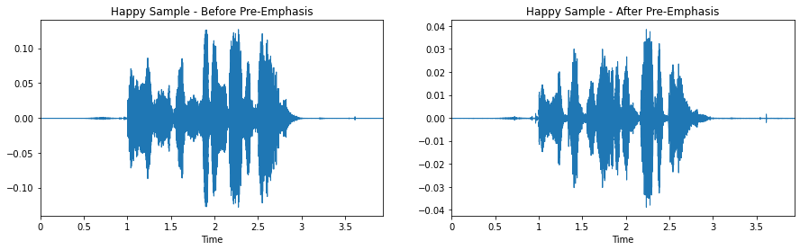</div></section><section class="cell" data-cell="22" id="celda-23"><h1 id="seccion-12"><strong>2.4.1.1.3.1 Enmarcado (Framming)</strong></h1>
<p>Luego de haber aplicado el pre-énfasis (aumentar la cantidad de energía de las frecuencias más altas de la señal de audio), necesitamos dividir la señal en frames de corta duración de tiempo (<strong>short-time frames</strong>). Dado que las frecuencias cambian a lo largo del tiempo, en la mayoría de los casos no tiene sentido aplicar la transformada de Fourier a toda la señal de audio, ya que se perdería los contornos de frecuencia de la señal a través del tiempo.</p>
<p>Como se dijo en un principio, podemos asegurar que las frecuencias en una señal están estacionarias a través de un período de tiempo muy corto. Por lo tanto, aplicando la transformada de Fourier sobre este frame de tiempo reducido, podemos obtener una buena aproximación de los contornos de frecuencia de la señal concatenando los marcos adyacentes.</p>
<p>El tamaño típico de los frames en el procesamiento del habla, están en el rango de <math aria-label="20ms" display="inline" xmlns="http://www.w3.org/1998/Math/MathML"><mrow><mn>20</mn><mi>m</mi><mi>s</mi></mrow></math> a <math aria-label="40ms" display="inline" xmlns="http://www.w3.org/1998/Math/MathML"><mrow><mn>40</mn><mi>m</mi><mi>s</mi></mrow></math>, con una superposición (<strong>overlap</strong>) consecutiva entre frames del <math aria-label="50\%" display="inline" xmlns="http://www.w3.org/1998/Math/MathML"><mrow><mn>50</mn><mi>%</mi></mrow></math> (<math aria-label="+/-10\%" display="inline" xmlns="http://www.w3.org/1998/Math/MathML"><mrow><mo>+</mo><mo>/</mo><mo>−</mo><mn>10</mn><mi>%</mi></mrow></math>).</p>
<p>Las configuraciones sugeridas por la bibliografía sulen ser de <math aria-label="25ms" display="inline" xmlns="http://www.w3.org/1998/Math/MathML"><mrow><mn>25</mn><mi>m</mi><mi>s</mi></mrow></math> para el tamaño del frame, con un paso (<strong>stride</strong>) de <math aria-label="10ms" display="inline" xmlns="http://www.w3.org/1998/Math/MathML"><mrow><mn>10</mn><mi>m</mi><mi>s</mi></mrow></math>, es decir, <math aria-label="15ms" display="inline" xmlns="http://www.w3.org/1998/Math/MathML"><mrow><mn>15</mn><mi>m</mi><mi>s</mi></mrow></math> de overlap (<strong>de ahora en más, se utilizará el término stride que hace referencia a "pasos"</strong>).</p>
</section><section class="cell" data-cell="23" id="celda-24"><details class="source-code"><summary>Código Python · celda 24</summary><button class="copy-code" type="button">Copiar código</button><div class="highlight"><pre><span></span><span class="c1"># parámetros recomendados por la bibliografía</span>
<span class="n">frame_size</span>                  <span class="o">=</span> <span class="mf">0.025</span>
<span class="n">frame_stride</span>                <span class="o">=</span> <span class="mf">0.01</span>

<span class="n">frame_length</span><span class="p">,</span> <span class="n">frame_step</span>    <span class="o">=</span> <span class="n">frame_size</span> <span class="o">*</span> <span class="n">happy_sample_rate</span><span class="p">,</span> <span class="n">frame_stride</span> <span class="o">*</span> <span class="n">happy_sample_rate</span>  <span class="c1"># Convert from seconds to samples</span>
<span class="n">signal_length</span>               <span class="o">=</span> <span class="nb">len</span><span class="p">(</span><span class="n">emphasized_signal</span><span class="p">)</span>
<span class="n">frame_length</span>                <span class="o">=</span> <span class="nb">int</span><span class="p">(</span><span class="nb">round</span><span class="p">(</span><span class="n">frame_length</span><span class="p">))</span>
<span class="n">frame_step</span>                  <span class="o">=</span> <span class="nb">int</span><span class="p">(</span><span class="nb">round</span><span class="p">(</span><span class="n">frame_step</span><span class="p">))</span>
<span class="n">num_frames</span>                  <span class="o">=</span> <span class="nb">int</span><span class="p">(</span><span class="n">np</span><span class="o">.</span><span class="n">ceil</span><span class="p">(</span><span class="nb">float</span><span class="p">(</span><span class="n">np</span><span class="o">.</span><span class="n">abs</span><span class="p">(</span><span class="n">signal_length</span> <span class="o">-</span> <span class="n">frame_length</span><span class="p">))</span> <span class="o">/</span> <span class="n">frame_step</span><span class="p">))</span>  <span class="c1"># Make sure that we have at least 1 frame</span>

<span class="n">pad_signal_length</span>           <span class="o">=</span> <span class="n">num_frames</span> <span class="o">*</span> <span class="n">frame_step</span> <span class="o">+</span> <span class="n">frame_length</span>
<span class="n">z</span>                           <span class="o">=</span> <span class="n">np</span><span class="o">.</span><span class="n">zeros</span><span class="p">((</span><span class="n">pad_signal_length</span> <span class="o">-</span> <span class="n">signal_length</span><span class="p">))</span>
<span class="n">pad_signal</span>                  <span class="o">=</span> <span class="n">np</span><span class="o">.</span><span class="n">append</span><span class="p">(</span><span class="n">emphasized_signal</span><span class="p">,</span> <span class="n">z</span><span class="p">)</span> <span class="c1"># Pad Signal to make sure that all frames have equal number of samples without truncating any samples from the original signal</span>

<span class="n">indices</span>                     <span class="o">=</span> <span class="n">np</span><span class="o">.</span><span class="n">tile</span><span class="p">(</span><span class="n">np</span><span class="o">.</span><span class="n">arange</span><span class="p">(</span><span class="mi">0</span><span class="p">,</span> <span class="n">frame_length</span><span class="p">),</span> <span class="p">(</span><span class="n">num_frames</span><span class="p">,</span> <span class="mi">1</span><span class="p">))</span> <span class="o">+</span> <span class="n">np</span><span class="o">.</span><span class="n">tile</span><span class="p">(</span><span class="n">np</span><span class="o">.</span><span class="n">arange</span><span class="p">(</span><span class="mi">0</span><span class="p">,</span> <span class="n">num_frames</span> <span class="o">*</span> <span class="n">frame_step</span><span class="p">,</span> <span class="n">frame_step</span><span class="p">),</span> <span class="p">(</span><span class="n">frame_length</span><span class="p">,</span> <span class="mi">1</span><span class="p">))</span><span class="o">.</span><span class="n">T</span>
<span class="n">frames</span>                      <span class="o">=</span> <span class="n">pad_signal</span><span class="p">[</span><span class="n">indices</span><span class="o">.</span><span class="n">astype</span><span class="p">(</span><span class="n">np</span><span class="o">.</span><span class="n">int32</span><span class="p">,</span> <span class="n">copy</span><span class="o">=</span><span class="kc">False</span><span class="p">)]</span>


<span class="n">plt</span><span class="o">.</span><span class="n">figure</span><span class="p">(</span><span class="n">figsize</span><span class="o">=</span><span class="p">(</span><span class="mi">15</span><span class="p">,</span> <span class="mi">4</span><span class="p">))</span>
<span class="n">plt</span><span class="o">.</span><span class="n">subplot</span><span class="p">(</span><span class="mi">1</span><span class="p">,</span> <span class="mi">2</span><span class="p">,</span> <span class="mi">1</span><span class="p">)</span>
<span class="n">librosa</span><span class="o">.</span><span class="n">display</span><span class="o">.</span><span class="n">waveplot</span><span class="p">(</span><span class="n">frames</span><span class="p">,</span> <span class="n">sr</span><span class="o">=</span><span class="n">happy_sample_rate</span><span class="p">)</span>
<span class="n">plt</span><span class="o">.</span><span class="n">title</span><span class="p">(</span><span class="s1">'Happy Sample - Pre-Emphasis - Framming'</span><span class="p">)</span>
</pre></div>
</details><div class="output"><pre>Text(0.5, 1.0, 'Happy Sample - Pre-Emphasis - Framming')</pre>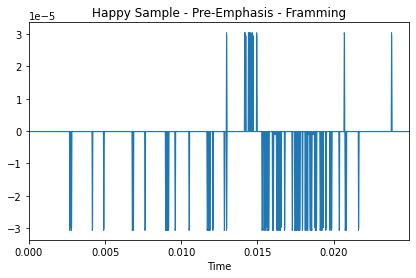</div></section><section class="cell" data-cell="24" id="celda-25"><h1 id="seccion-13"><strong>2.4.1.1.3.2 Ventanas</strong></h1>
<p>Las funciones de ventana están distribuídas en el tiempo y tienen una duración limitada. Por lo tanto, para la extracción de los coeficientes MFCC, se suelen utilizar las siguientes funciones de ventana: (1) <strong>Hanning Window</strong> y (2) <strong>Hamming Window</strong>.</p>
<p>Dichas funciones son utilizadas, ya que se quiere "segmentar" la señal de audio, pero no basta con segmentar en el borde del marco de la ventana, ya que provocaría una repentina caída de la amplitud y derivaría en mucho ruído que se vería reflejado en las altas frecuencias. Por el contrario, lo que se buscar es disminuir gradualmente la amplitud cerca del borde de un marco de ventana de tiempo.</p>
<p>Luego, antes de definir la función de <strong>Ventana de Hamming Generalizada</strong>, procedemos a definir la función de <strong>Ventana Rectangular</strong>.</p>
<ul>
<li>
<p><strong>Ventana Rectangular:</strong> se define como</p>
<p><math aria-label="\begin{align}
    h_{\pi}[n] &amp;= u[n] - u[n-N],
    \end{align}" display="block" xmlns="http://www.w3.org/1998/Math/MathML"><mrow><mrow><msub><mi>h</mi><mrow><mi>π</mi></mrow></msub><mo stretchy="false">[</mo><mi>n</mi><mo stretchy="false">]</mo><mi>&amp;</mi><mo>=</mo><mi>u</mi><mo stretchy="false">[</mo><mi>n</mi><mo stretchy="false">]</mo><mo>−</mo><mi>u</mi><mo stretchy="false">[</mo><mi>n</mi><mo>−</mo><mi>N</mi><mo stretchy="false">]</mo><mo>,</mo></mrow></mrow></math></p>
<p>donde su correspondiente transformación <math aria-label="Z" display="inline" xmlns="http://www.w3.org/1998/Math/MathML"><mrow><mi>Z</mi></mrow></math> está dada por:</p>
<p><math aria-label="\begin{align}
    H_{\pi} &amp;= \sum_{n=0}^{N-1} z^{-n},
    \end{align}" display="block" xmlns="http://www.w3.org/1998/Math/MathML"><mrow><mrow><msub><mi>H</mi><mrow><mi>π</mi></mrow></msub><mi>&amp;</mi><mo>=</mo><munderover><mo>∑</mo><mrow><mi>n</mi><mo>=</mo><mn>0</mn></mrow><mrow><mi>N</mi><mo>−</mo><mn>1</mn></mrow></munderover><msup><mi>z</mi><mrow><mo>−</mo><mi>n</mi></mrow></msup><mo>,</mo></mrow></mrow></math></p>
<p>que resulta en un polinomio de orden <math aria-label="(N-1)" display="inline" xmlns="http://www.w3.org/1998/Math/MathML"><mrow><mo stretchy="false">(</mo><mi>N</mi><mo>−</mo><mn>1</mn><mo stretchy="false">)</mo></mrow></math>.</p>
</li>
<li>
<p><strong>Ventana de Hamming Generalizada:</strong> se define como</p>
<p><math aria-label="\begin{align}
        h_{\pi}[n] &amp;=
        \left\{
        	\begin{array}{ll}
        	   (1-\alpha) - \alpha cos(2\pi n/N) &amp; 0 \leq n &lt; N\\
        	    0 &amp; \mbox{en c.o.c }
        	\end{array}
        \right.
    \end{align}" display="block" xmlns="http://www.w3.org/1998/Math/MathML"><mrow><mrow><msub><mi>h</mi><mrow><mi>π</mi></mrow></msub><mo stretchy="false">[</mo><mi>n</mi><mo stretchy="false">]</mo><mi>&amp;</mi><mo>=</mo><mrow><mo fence="true" form="prefix" stretchy="true">{</mo><mtable><mtr><mtd columnalign="left"><mo stretchy="false">(</mo><mn>1</mn><mo>−</mo><mi>α</mi><mo stretchy="false">)</mo><mo>−</mo><mi>α</mi><mi>c</mi><mi>o</mi><mi>s</mi><mo stretchy="false">(</mo><mn>2</mn><mi>π</mi><mi>n</mi><mo>/</mo><mi>N</mi><mo stretchy="false">)</mo></mtd><mtd columnalign="left"><mn>0</mn><mo>≤</mo><mi>n</mi><mo>&lt;</mo><mi>N</mi></mtd></mtr><mtr><mtd columnalign="left"><mn>0</mn></mtd><mtd columnalign="left"><mstyle displaystyle="false" scriptlevel="0"><mtext>en c.o.c </mtext></mstyle></mtd></mtr></mtable><mo fence="true" form="postfix" stretchy="true"></mo></mrow></mrow></mrow></math></p>
<p>que puede ser expresada en términos de una ventana rectangular según la ecuación anterior:</p>
<p><math aria-label="\begin{align}
    h_{\pi} &amp;= (1 - \alpha) h_{\pi}[n] - \alpha h_{\pi}[n] cos (2 \pi n / N).
    \end{align}" display="block" xmlns="http://www.w3.org/1998/Math/MathML"><mrow><mrow><msub><mi>h</mi><mrow><mi>π</mi></mrow></msub><mi>&amp;</mi><mo>=</mo><mo stretchy="false">(</mo><mn>1</mn><mo>−</mo><mi>α</mi><mo stretchy="false">)</mo><msub><mi>h</mi><mrow><mi>π</mi></mrow></msub><mo stretchy="false">[</mo><mi>n</mi><mo stretchy="false">]</mo><mo>−</mo><mi>α</mi><msub><mi>h</mi><mrow><mi>π</mi></mrow></msub><mo stretchy="false">[</mo><mi>n</mi><mo stretchy="false">]</mo><mi>c</mi><mi>o</mi><mi>s</mi><mo stretchy="false">(</mo><mn>2</mn><mi>π</mi><mi>n</mi><mo>/</mo><mi>N</mi><mo stretchy="false">)</mo><mo>.</mo></mrow></mrow></math></p>
<p>Por lo tanto, si <math aria-label="\alpha=0.5" display="inline" xmlns="http://www.w3.org/1998/Math/MathML"><mrow><mi>α</mi><mo>=</mo><mn>0.5</mn></mrow></math>, se tiene la función de ventana <strong>Hanning</strong>, y si <math aria-label="\alpha=0.46" display="inline" xmlns="http://www.w3.org/1998/Math/MathML"><mrow><mi>α</mi><mo>=</mo><mn>0.46</mn></mrow></math>, se tendrá la función de ventana <strong>Hamming</strong>.</p>
</li>
</ul>
</section><section class="cell" data-cell="25" id="celda-26"><details class="source-code"><summary>Código Python · celda 26</summary><button class="copy-code" type="button">Copiar código</button><div class="highlight"><pre><span></span><span class="c1"># Cálculo de la función de ventana Hamming.</span>
<span class="c1"># frames *= 0.54 - 0.46 * numpy.cos((2 * numpy.pi * n) / (frame_length - 1))  # Explicit Implementation **</span>

<span class="n">frames</span> <span class="o">*=</span> <span class="n">np</span><span class="o">.</span><span class="n">hamming</span><span class="p">(</span><span class="n">frame_length</span><span class="p">)</span>

<span class="n">plt</span><span class="o">.</span><span class="n">figure</span><span class="p">(</span><span class="n">figsize</span><span class="o">=</span><span class="p">(</span><span class="mi">15</span><span class="p">,</span> <span class="mi">4</span><span class="p">))</span>
<span class="n">plt</span><span class="o">.</span><span class="n">subplot</span><span class="p">(</span><span class="mi">1</span><span class="p">,</span> <span class="mi">2</span><span class="p">,</span> <span class="mi">1</span><span class="p">)</span>
<span class="n">librosa</span><span class="o">.</span><span class="n">display</span><span class="o">.</span><span class="n">waveplot</span><span class="p">(</span><span class="n">frames</span><span class="p">,</span> <span class="n">sr</span><span class="o">=</span><span class="n">happy_sample_rate</span><span class="p">)</span>
<span class="n">plt</span><span class="o">.</span><span class="n">title</span><span class="p">(</span><span class="s1">'Happy Sample - Pre-Emphasis - Framming - Hamming Window'</span><span class="p">)</span>
</pre></div>
</details><div class="output"><pre>Text(0.5, 1.0, 'Happy Sample - Pre-Emphasis - Framming - Hamming Window')</pre>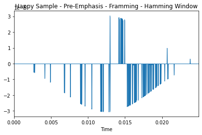</div></section><section class="cell" data-cell="26" id="celda-27"><h1 id="seccion-14"><strong>2.4.1.1.4 Transformada de Fourier Discreta y Espectro de Potencia (Power Spectrum)</strong></h1>
<p>Luego de aplicar la función de ventana hamming, podemos calcular una FFT de <math aria-label="N-" display="inline" xmlns="http://www.w3.org/1998/Math/MathML"><mrow><mi>N</mi><mo>−</mo></mrow></math>puntos en cada frame para calcular la frecuencia del espectro, es decir, calcular la STFT, donde la bibliografía sugiere una valor de <math aria-label="256" display="inline" xmlns="http://www.w3.org/1998/Math/MathML"><mrow><mn>256</mn></mrow></math> o <math aria-label="512" display="inline" xmlns="http://www.w3.org/1998/Math/MathML"><mrow><mn>512</mn></mrow></math> para <math aria-label="N" display="inline" xmlns="http://www.w3.org/1998/Math/MathML"><mrow><mi>N</mi></mrow></math>, y un número de <math aria-label="NFFT" display="inline" xmlns="http://www.w3.org/1998/Math/MathML"><mrow><mi>N</mi><mi>F</mi><mi>F</mi><mi>T</mi></mrow></math> de: <math aria-label="512" display="inline" xmlns="http://www.w3.org/1998/Math/MathML"><mrow><mn>512</mn></mrow></math>, <math aria-label="1024" display="inline" xmlns="http://www.w3.org/1998/Math/MathML"><mrow><mn>1024</mn></mrow></math>, <math aria-label="2048" display="inline" xmlns="http://www.w3.org/1998/Math/MathML"><mrow><mn>2048</mn></mrow></math>, <math aria-label="4096" display="inline" xmlns="http://www.w3.org/1998/Math/MathML"><mrow><mn>4096</mn></mrow></math>; esto es así, ya que, la resolución de <strong>tiempo-frecuencia del espectrograma</strong> depende del <strong>tamaño de ventana elegido</strong>. Un <strong>tamaño</strong> más <strong>grande</strong> dará como resultado una <strong>resolución espectral más alta</strong>, pero una <strong>resolución temporal más baja</strong>, por el contrario, se tendrá como resultado una <strong>resolución espectral más baja</strong>, pero una <strong>resolución temporal más alta</strong>.</p>
<p>Entonces, se puede calcular el espectro de potencia como:</p>
<p><math aria-label="\begin{align}
    P = \frac{|FFT(x_i)|^2}{N},
\end{align}" display="block" xmlns="http://www.w3.org/1998/Math/MathML"><mrow><mrow><mi>P</mi><mo>=</mo><mfrac><mrow><mo stretchy="false">|</mo><mi>F</mi><mi>F</mi><mi>T</mi><mo stretchy="false">(</mo><msub><mi>x</mi><mi>i</mi></msub><mo stretchy="false">)</mo><msup><mo stretchy="false">|</mo><mn>2</mn></msup></mrow><mrow><mi>N</mi></mrow></mfrac><mo>,</mo></mrow></mrow></math></p>
<p>donde <math aria-label="x_i" display="inline" xmlns="http://www.w3.org/1998/Math/MathML"><mrow><msub><mi>x</mi><mi>i</mi></msub></mrow></math> es el <math aria-label="i-" display="inline" xmlns="http://www.w3.org/1998/Math/MathML"><mrow><mi>i</mi><mo>−</mo></mrow></math>ésimo frame de la señal de audio <math aria-label="x" display="inline" xmlns="http://www.w3.org/1998/Math/MathML"><mrow><mi>x</mi></mrow></math>.</p>
</section><section class="cell" data-cell="27" id="celda-28"><details class="source-code"><summary>Código Python · celda 28</summary><button class="copy-code" type="button">Copiar código</button><div class="highlight"><pre><span></span><span class="c1"># Cálculo manual</span>
<span class="n">NFFT</span>        <span class="o">=</span> <span class="mi">512</span>
<span class="c1"># Magnitude of the FFT</span>
<span class="n">mag_frames</span>              <span class="o">=</span> <span class="n">np</span><span class="o">.</span><span class="n">absolute</span><span class="p">(</span><span class="n">np</span><span class="o">.</span><span class="n">fft</span><span class="o">.</span><span class="n">rfft</span><span class="p">(</span><span class="n">frames</span><span class="p">,</span> <span class="n">NFFT</span><span class="p">))</span>
<span class="c1"># Power Spectrum</span>
<span class="n">pow_frames</span>              <span class="o">=</span> <span class="p">((</span><span class="mf">1.0</span> <span class="o">/</span> <span class="n">NFFT</span><span class="p">)</span> <span class="o">*</span> <span class="p">((</span><span class="n">mag_frames</span><span class="p">)</span> <span class="o">**</span> <span class="mi">2</span><span class="p">))</span>

<span class="c1"># Cálculo con librosa</span>
<span class="n">stft_spectrum_matrix</span>    <span class="o">=</span> <span class="n">librosa</span><span class="o">.</span><span class="n">stft</span><span class="p">(</span><span class="n">happy_waveform</span><span class="p">,</span> <span class="n">n_fft</span><span class="o">=</span><span class="mi">512</span><span class="p">,</span> <span class="n">window</span><span class="o">=</span><span class="s2">"hamm"</span><span class="p">)</span>
<span class="n">plt</span><span class="o">.</span><span class="n">figure</span><span class="p">(</span><span class="n">figsize</span><span class="o">=</span><span class="p">(</span><span class="mi">15</span><span class="p">,</span> <span class="mi">4</span><span class="p">))</span>
<span class="n">plt</span><span class="o">.</span><span class="n">subplot</span><span class="p">(</span><span class="mi">1</span><span class="p">,</span> <span class="mi">2</span><span class="p">,</span> <span class="mi">1</span><span class="p">)</span>
<span class="n">librosa</span><span class="o">.</span><span class="n">display</span><span class="o">.</span><span class="n">waveplot</span><span class="p">(</span><span class="n">np</span><span class="o">.</span><span class="n">abs</span><span class="p">(</span><span class="n">stft_spectrum_matrix</span><span class="p">),</span> <span class="n">sr</span><span class="o">=</span><span class="n">happy_sample_rate</span><span class="p">)</span>
<span class="n">plt</span><span class="o">.</span><span class="n">title</span><span class="p">(</span><span class="s1">'Happy Sample - Pre-Emphasis - Framming - Hamming Window - STFT'</span><span class="p">)</span>
</pre></div>
</details><div class="output"><pre>Text(0.5, 1.0, 'Happy Sample - Pre-Emphasis - Framming - Hamming Window - STFT')</pre>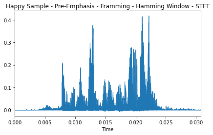</div></section><section class="cell" data-cell="28" id="celda-29"><h1 id="seccion-15"><strong>2.4.1.1.5 Bancos de Filtros (Filter Banks)</strong></h1>
<p>Dada la DFT de una señal audio,</p>
<p><math aria-label="\begin{align}
    X_a[k] &amp;= \sum_{n=0}^{N-1} x[n] e^{-j2\pi nk / N} \mbox &amp;&amp; 0 \leq k &lt; N,
\end{align}" display="block" xmlns="http://www.w3.org/1998/Math/MathML"><mrow><mrow><msub><mi>X</mi><mi>a</mi></msub><mo stretchy="false">[</mo><mi>k</mi><mo stretchy="false">]</mo><mi>&amp;</mi><mo>=</mo><munderover><mo>∑</mo><mrow><mi>n</mi><mo>=</mo><mn>0</mn></mrow><mrow><mi>N</mi><mo>−</mo><mn>1</mn></mrow></munderover><mi>x</mi><mo stretchy="false">[</mo><mi>n</mi><mo stretchy="false">]</mo><msup><mi>e</mi><mrow><mo>−</mo><mi>j</mi><mn>2</mn><mi>π</mi><mi>n</mi><mi>k</mi><mo>/</mo><mi>N</mi></mrow></msup><mstyle displaystyle="false" scriptlevel="0"><mtext>&amp;</mtext></mstyle><mi>&amp;</mi><mn>0</mn><mo>≤</mo><mi>k</mi><mo>&lt;</mo><mi>N</mi><mo>,</mo></mrow></mrow></math></p>
<p>definimos los bancos de filtros (<strong>filter banks</strong>) con <math aria-label="M-" display="inline" xmlns="http://www.w3.org/1998/Math/MathML"><mrow><mi>M</mi><mo>−</mo></mrow></math>filtros (<math aria-label="m=1,2, \dots, M" display="inline" xmlns="http://www.w3.org/1998/Math/MathML"><mrow><mi>m</mi><mo>=</mo><mn>1</mn><mo>,</mo><mn>2</mn><mo>,</mo><mo>…</mo><mo>,</mo><mi>M</mi></mrow></math>), donde <math aria-label="m" display="inline" xmlns="http://www.w3.org/1998/Math/MathML"><mrow><mi>m</mi></mrow></math> es un filtro triangular dado por:</p>
<p><math aria-label="\begin{align}
    h_{m}[n] &amp;=
    \left\{
        \begin{array}{llll}
        	0 &amp; k &lt; f[m-1]\\
        	\frac{2(k-f [m-1])}{(f[m+1] - f[m-1]) (f[m] - f[m-1])} &amp; f[m-1] \leq k \leq f[m]\\
        	\frac{2(f[m+1] - k)}{(f[m+1]-f[m-1])(f[m+1]-f[m])} &amp; f[m] \leq k \leq f[m+1]\\
        	0 &amp; k &gt; f[m+1]
        \end{array}
    \right.
\end{align}" display="block" xmlns="http://www.w3.org/1998/Math/MathML"><mrow><mrow><msub><mi>h</mi><mrow><mi>m</mi></mrow></msub><mo stretchy="false">[</mo><mi>n</mi><mo stretchy="false">]</mo><mi>&amp;</mi><mo>=</mo><mrow><mo fence="true" form="prefix" stretchy="true">{</mo><mtable><mtr><mtd columnalign="left"><mn>0</mn></mtd><mtd columnalign="left"><mi>k</mi><mo>&lt;</mo><mi>f</mi><mo stretchy="false">[</mo><mi>m</mi><mo>−</mo><mn>1</mn><mo stretchy="false">]</mo></mtd></mtr><mtr><mtd columnalign="left"><mfrac><mrow><mn>2</mn><mo stretchy="false">(</mo><mi>k</mi><mo>−</mo><mi>f</mi><mo stretchy="false">[</mo><mi>m</mi><mo>−</mo><mn>1</mn><mo stretchy="false">]</mo><mo stretchy="false">)</mo></mrow><mrow><mo stretchy="false">(</mo><mi>f</mi><mo stretchy="false">[</mo><mi>m</mi><mo>+</mo><mn>1</mn><mo stretchy="false">]</mo><mo>−</mo><mi>f</mi><mo stretchy="false">[</mo><mi>m</mi><mo>−</mo><mn>1</mn><mo stretchy="false">]</mo><mo stretchy="false">)</mo><mo stretchy="false">(</mo><mi>f</mi><mo stretchy="false">[</mo><mi>m</mi><mo stretchy="false">]</mo><mo>−</mo><mi>f</mi><mo stretchy="false">[</mo><mi>m</mi><mo>−</mo><mn>1</mn><mo stretchy="false">]</mo><mo stretchy="false">)</mo></mrow></mfrac></mtd><mtd columnalign="left"><mi>f</mi><mo stretchy="false">[</mo><mi>m</mi><mo>−</mo><mn>1</mn><mo stretchy="false">]</mo><mo>≤</mo><mi>k</mi><mo>≤</mo><mi>f</mi><mo stretchy="false">[</mo><mi>m</mi><mo stretchy="false">]</mo></mtd></mtr><mtr><mtd columnalign="left"><mfrac><mrow><mn>2</mn><mo stretchy="false">(</mo><mi>f</mi><mo stretchy="false">[</mo><mi>m</mi><mo>+</mo><mn>1</mn><mo stretchy="false">]</mo><mo>−</mo><mi>k</mi><mo stretchy="false">)</mo></mrow><mrow><mo stretchy="false">(</mo><mi>f</mi><mo stretchy="false">[</mo><mi>m</mi><mo>+</mo><mn>1</mn><mo stretchy="false">]</mo><mo>−</mo><mi>f</mi><mo stretchy="false">[</mo><mi>m</mi><mo>−</mo><mn>1</mn><mo stretchy="false">]</mo><mo stretchy="false">)</mo><mo stretchy="false">(</mo><mi>f</mi><mo stretchy="false">[</mo><mi>m</mi><mo>+</mo><mn>1</mn><mo stretchy="false">]</mo><mo>−</mo><mi>f</mi><mo stretchy="false">[</mo><mi>m</mi><mo stretchy="false">]</mo><mo stretchy="false">)</mo></mrow></mfrac></mtd><mtd columnalign="left"><mi>f</mi><mo stretchy="false">[</mo><mi>m</mi><mo stretchy="false">]</mo><mo>≤</mo><mi>k</mi><mo>≤</mo><mi>f</mi><mo stretchy="false">[</mo><mi>m</mi><mo>+</mo><mn>1</mn><mo stretchy="false">]</mo></mtd></mtr><mtr><mtd columnalign="left"><mn>0</mn></mtd><mtd columnalign="left"><mi>k</mi><mo>&gt;</mo><mi>f</mi><mo stretchy="false">[</mo><mi>m</mi><mo>+</mo><mn>1</mn><mo stretchy="false">]</mo></mtd></mtr></mtable><mo fence="true" form="postfix" stretchy="true"></mo></mrow></mrow></mrow></math></p>
<p>donde el filtro tringular tiene un valor de respuesta <math aria-label="1" display="inline" xmlns="http://www.w3.org/1998/Math/MathML"><mrow><mn>1</mn></mrow></math> en la frecuencia central, y disminuye linealmente hacia <math aria-label="0" display="inline" xmlns="http://www.w3.org/1998/Math/MathML"><mrow><mn>0</mn></mrow></math> hasta que alcanza las frecuencias centrales de los dos filtros adyacentes donde el valor de respuesta es <math aria-label="0" display="inline" xmlns="http://www.w3.org/1998/Math/MathML"><mrow><mn>0</mn></mrow></math>.</p>
<p>Luego, podemos definir la frecuencia del filtro de manera que estén uniformemente espaciados en la <strong>escala de mel (mel scale -modela una aproximación de la sensibilidad del oído humano que por lo general es no lineal, siendo más discrimitavia en las frecuencias altas y menos discriminativa en las frecuencias bajas-)</strong>:</p>
<p><math aria-label="\begin{align}
    f[m] &amp;= \left( \frac{N}{F_s}\right) B^{-1} \left( B(f_l) + m \frac{B(f_h) - B(f_l)}{M+1}\right),
\end{align}" display="block" xmlns="http://www.w3.org/1998/Math/MathML"><mrow><mrow><mi>f</mi><mo stretchy="false">[</mo><mi>m</mi><mo stretchy="false">]</mo><mi>&amp;</mi><mo>=</mo><mrow><mo fence="true" form="prefix" stretchy="true">(</mo><mfrac><mrow><mi>N</mi></mrow><mrow><msub><mi>F</mi><mi>s</mi></msub></mrow></mfrac><mo fence="true" form="postfix" stretchy="true">)</mo></mrow><msup><mi>B</mi><mrow><mo>−</mo><mn>1</mn></mrow></msup><mrow><mo fence="true" form="prefix" stretchy="true">(</mo><mi>B</mi><mo stretchy="false">(</mo><msub><mi>f</mi><mi>l</mi></msub><mo stretchy="false">)</mo><mo>+</mo><mi>m</mi><mfrac><mrow><mi>B</mi><mo stretchy="false">(</mo><msub><mi>f</mi><mi>h</mi></msub><mo stretchy="false">)</mo><mo>−</mo><mi>B</mi><mo stretchy="false">(</mo><msub><mi>f</mi><mi>l</mi></msub><mo stretchy="false">)</mo></mrow><mrow><mi>M</mi><mo>+</mo><mn>1</mn></mrow></mfrac><mo fence="true" form="postfix" stretchy="true">)</mo></mrow><mo>,</mo></mrow></mrow></math></p>
<p>donde <math aria-label="f_l" display="inline" xmlns="http://www.w3.org/1998/Math/MathML"><mrow><msub><mi>f</mi><mi>l</mi></msub></mrow></math> y <math aria-label="f_h" display="inline" xmlns="http://www.w3.org/1998/Math/MathML"><mrow><msub><mi>f</mi><mi>h</mi></msub></mrow></math> son las frecuencias más bajas y altas de los filter banks (<math aria-label="Hz" display="inline" xmlns="http://www.w3.org/1998/Math/MathML"><mrow><mi>H</mi><mi>z</mi></mrow></math>), <math aria-label="F_s" display="inline" xmlns="http://www.w3.org/1998/Math/MathML"><mrow><msub><mi>F</mi><mi>s</mi></msub></mrow></math> es la frecuencia de muestreo en <math aria-label="Hz" display="inline" xmlns="http://www.w3.org/1998/Math/MathML"><mrow><mi>H</mi><mi>z</mi></mrow></math>, <math aria-label="M" display="inline" xmlns="http://www.w3.org/1998/Math/MathML"><mrow><mi>M</mi></mrow></math> es el número de filtros, <math aria-label="N" display="inline" xmlns="http://www.w3.org/1998/Math/MathML"><mrow><mi>N</mi></mrow></math> el número de FFT y <math aria-label="B" display="inline" xmlns="http://www.w3.org/1998/Math/MathML"><mrow><mi>B</mi></mrow></math> es la escala de mel y su inversa <math aria-label="B^{-1}" display="inline" xmlns="http://www.w3.org/1998/Math/MathML"><mrow><msup><mi>B</mi><mrow><mo>−</mo><mn>1</mn></mrow></msup></mrow></math>,</p>
<p><math aria-label="\begin{align}
    B^{-1}(b) &amp;= 700 ( exp(\frac{b}{1125}) -1 ).
\end{align}" display="block" xmlns="http://www.w3.org/1998/Math/MathML"><mrow><mrow><msup><mi>B</mi><mrow><mo>−</mo><mn>1</mn></mrow></msup><mo stretchy="false">(</mo><mi>b</mi><mo stretchy="false">)</mo><mi>&amp;</mi><mo>=</mo><mn>700</mn><mo stretchy="false">(</mo><mi>e</mi><mi>x</mi><mi>p</mi><mo stretchy="false">(</mo><mfrac><mrow><mi>b</mi></mrow><mrow><mn>1125</mn></mrow></mfrac><mo stretchy="false">)</mo><mo>−</mo><mn>1</mn><mo stretchy="false">)</mo><mo>.</mo></mrow></mrow></math></p>
<p>Por lo general, la bibliografía sugiere aplicar <math aria-label="40" display="inline" xmlns="http://www.w3.org/1998/Math/MathML"><mrow><mn>40</mn></mrow></math> o <math aria-label="128" display="inline" xmlns="http://www.w3.org/1998/Math/MathML"><mrow><mn>128</mn></mrow></math> filtros triangulares sobre la escala de mel (aplicada al espectro de potencia para extraer las bandas de frecuencias).</p>
</section><section class="cell" data-cell="29" id="celda-30"><details class="source-code"><summary>Código Python · celda 30</summary><button class="copy-code" type="button">Copiar código</button><div class="highlight"><pre><span></span><span class="c1"># cálculo manual de filtros</span>
<span class="n">nfilt</span>           <span class="o">=</span> <span class="mi">40</span>
<span class="n">low_freq_mel</span>    <span class="o">=</span> <span class="mi">0</span>
<span class="n">high_freq_mel</span>   <span class="o">=</span> <span class="p">(</span><span class="mi">1125</span> <span class="o">*</span> <span class="n">np</span><span class="o">.</span><span class="n">log10</span><span class="p">(</span><span class="mi">1</span> <span class="o">+</span> <span class="p">(</span><span class="n">happy_sample_rate</span> <span class="o">/</span> <span class="mi">2</span><span class="p">)</span> <span class="o">/</span> <span class="mi">700</span><span class="p">))</span>  <span class="c1"># Convert Hz to Mel</span>
<span class="n">mel_points</span>      <span class="o">=</span> <span class="n">np</span><span class="o">.</span><span class="n">linspace</span><span class="p">(</span><span class="n">low_freq_mel</span><span class="p">,</span> <span class="n">high_freq_mel</span><span class="p">,</span> <span class="n">nfilt</span> <span class="o">+</span> <span class="mi">2</span><span class="p">)</span>  <span class="c1"># Equally spaced in Mel scale</span>
<span class="n">hz_points</span>       <span class="o">=</span> <span class="p">(</span><span class="mi">700</span> <span class="o">*</span> <span class="p">(</span><span class="mi">10</span><span class="o">**</span><span class="p">(</span><span class="n">mel_points</span> <span class="o">/</span> <span class="mi">1125</span><span class="p">)</span> <span class="o">-</span> <span class="mi">1</span><span class="p">))</span>  <span class="c1"># Convert Mel to Hz</span>
<span class="nb">bin</span>             <span class="o">=</span> <span class="n">np</span><span class="o">.</span><span class="n">floor</span><span class="p">((</span><span class="n">NFFT</span> <span class="o">+</span> <span class="mi">1</span><span class="p">)</span> <span class="o">*</span> <span class="n">hz_points</span> <span class="o">/</span> <span class="n">happy_sample_rate</span><span class="p">)</span>

<span class="n">fbank</span>           <span class="o">=</span> <span class="n">np</span><span class="o">.</span><span class="n">zeros</span><span class="p">((</span><span class="n">nfilt</span><span class="p">,</span> <span class="nb">int</span><span class="p">(</span><span class="n">np</span><span class="o">.</span><span class="n">floor</span><span class="p">(</span><span class="n">NFFT</span> <span class="o">/</span> <span class="mi">2</span> <span class="o">+</span> <span class="mi">1</span><span class="p">))))</span>
<span class="k">for</span> <span class="n">m</span> <span class="ow">in</span> <span class="nb">range</span><span class="p">(</span><span class="mi">1</span><span class="p">,</span> <span class="n">nfilt</span> <span class="o">+</span> <span class="mi">1</span><span class="p">):</span>
    <span class="n">f_m_minus</span>   <span class="o">=</span> <span class="nb">int</span><span class="p">(</span><span class="nb">bin</span><span class="p">[</span><span class="n">m</span> <span class="o">-</span> <span class="mi">1</span><span class="p">])</span>       <span class="c1"># left</span>
    <span class="n">f_m</span>         <span class="o">=</span> <span class="nb">int</span><span class="p">(</span><span class="nb">bin</span><span class="p">[</span><span class="n">m</span><span class="p">])</span>           <span class="c1"># center</span>
    <span class="n">f_m_plus</span>    <span class="o">=</span> <span class="nb">int</span><span class="p">(</span><span class="nb">bin</span><span class="p">[</span><span class="n">m</span> <span class="o">+</span> <span class="mi">1</span><span class="p">])</span>       <span class="c1"># right</span>

    <span class="k">for</span> <span class="n">k</span> <span class="ow">in</span> <span class="nb">range</span><span class="p">(</span><span class="n">f_m_minus</span><span class="p">,</span> <span class="n">f_m</span><span class="p">):</span>
        <span class="n">fbank</span><span class="p">[</span><span class="n">m</span> <span class="o">-</span> <span class="mi">1</span><span class="p">,</span> <span class="n">k</span><span class="p">]</span> <span class="o">=</span> <span class="p">(</span><span class="n">k</span> <span class="o">-</span> <span class="nb">bin</span><span class="p">[</span><span class="n">m</span> <span class="o">-</span> <span class="mi">1</span><span class="p">])</span> <span class="o">/</span> <span class="p">(</span><span class="nb">bin</span><span class="p">[</span><span class="n">m</span><span class="p">]</span> <span class="o">-</span> <span class="nb">bin</span><span class="p">[</span><span class="n">m</span> <span class="o">-</span> <span class="mi">1</span><span class="p">])</span>
    <span class="k">for</span> <span class="n">k</span> <span class="ow">in</span> <span class="nb">range</span><span class="p">(</span><span class="n">f_m</span><span class="p">,</span> <span class="n">f_m_plus</span><span class="p">):</span>
        <span class="n">fbank</span><span class="p">[</span><span class="n">m</span> <span class="o">-</span> <span class="mi">1</span><span class="p">,</span> <span class="n">k</span><span class="p">]</span> <span class="o">=</span> <span class="p">(</span><span class="nb">bin</span><span class="p">[</span><span class="n">m</span> <span class="o">+</span> <span class="mi">1</span><span class="p">]</span> <span class="o">-</span> <span class="n">k</span><span class="p">)</span> <span class="o">/</span> <span class="p">(</span><span class="nb">bin</span><span class="p">[</span><span class="n">m</span> <span class="o">+</span> <span class="mi">1</span><span class="p">]</span> <span class="o">-</span> <span class="nb">bin</span><span class="p">[</span><span class="n">m</span><span class="p">])</span>

<span class="n">filter_banks</span>    <span class="o">=</span> <span class="n">np</span><span class="o">.</span><span class="n">dot</span><span class="p">(</span><span class="n">pow_frames</span><span class="p">,</span> <span class="n">fbank</span><span class="o">.</span><span class="n">T</span><span class="p">)</span>
<span class="n">filter_banks</span>    <span class="o">=</span> <span class="n">np</span><span class="o">.</span><span class="n">where</span><span class="p">(</span><span class="n">filter_banks</span> <span class="o">==</span> <span class="mi">0</span><span class="p">,</span> <span class="n">np</span><span class="o">.</span><span class="n">finfo</span><span class="p">(</span><span class="nb">float</span><span class="p">)</span><span class="o">.</span><span class="n">eps</span><span class="p">,</span> <span class="n">filter_banks</span><span class="p">)</span>  <span class="c1"># Numerical Stability</span>
<span class="n">filter_banks</span>    <span class="o">=</span> <span class="mi">20</span> <span class="o">*</span> <span class="n">np</span><span class="o">.</span><span class="n">log10</span><span class="p">(</span><span class="n">filter_banks</span><span class="p">)</span>  <span class="c1"># dB</span>

<span class="c1"># Banco de Filtros (librosa)</span>
<span class="n">mel_basis</span> <span class="o">=</span> <span class="n">librosa</span><span class="o">.</span><span class="n">filters</span><span class="o">.</span><span class="n">mel</span><span class="p">(</span><span class="n">sr</span><span class="o">=</span><span class="n">happy_sample_rate</span><span class="p">,</span> <span class="n">n_fft</span><span class="o">=</span><span class="mi">2048</span><span class="p">,</span> <span class="n">n_mels</span><span class="o">=</span><span class="mi">128</span><span class="p">,</span><span class="n">fmin</span><span class="o">=</span><span class="mi">0</span><span class="p">,</span> <span class="n">fmax</span><span class="o">=</span><span class="n">happy_sample_rate</span><span class="o">/</span> <span class="mi">2</span><span class="p">)</span>
<span class="n">plt</span><span class="o">.</span><span class="n">figure</span><span class="p">(</span><span class="n">figsize</span><span class="o">=</span><span class="p">(</span><span class="mi">15</span><span class="p">,</span> <span class="mi">4</span><span class="p">))</span>
<span class="n">plt</span><span class="o">.</span><span class="n">subplot</span><span class="p">(</span><span class="mi">1</span><span class="p">,</span> <span class="mi">2</span><span class="p">,</span> <span class="mi">1</span><span class="p">)</span>
<span class="n">plt</span><span class="o">.</span><span class="n">plot</span><span class="p">(</span><span class="n">mel_basis</span><span class="o">.</span><span class="n">T</span><span class="p">)</span>
<span class="n">plt</span><span class="o">.</span><span class="n">show</span><span class="p">()</span>
</pre></div>
</details><div class="output">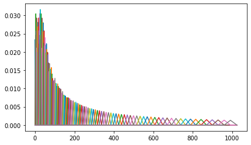</div></section><section class="cell" data-cell="30" id="celda-31"><p>Luego de aplicar los bancos de filtros al espectro de potencia de la señal de audio, el espectrograma que se obtiene es el siguiente (se muestra el espectrograma sin normalizar y normalizado):</p>
</section><section class="cell" data-cell="31" id="celda-32"><details class="source-code"><summary>Código Python · celda 32</summary><button class="copy-code" type="button">Copiar código</button><div class="highlight"><pre><span></span><span class="kn">from</span><span class="w"> </span><span class="nn">matplotlib.colors</span><span class="w"> </span><span class="kn">import</span> <span class="n">Normalize</span>

<span class="c1"># Parámetros recomendados por la bibliografía</span>
<span class="c1"># Plot 1</span>
<span class="n">n_fft</span>               <span class="o">=</span> <span class="mi">1024</span>  <span class="c1"># 4096 - 2048 - 1024 - 512</span>
<span class="n">winlen</span>              <span class="o">=</span> <span class="mi">512</span>
<span class="n">window</span>              <span class="o">=</span> <span class="s1">'hamming'</span>
<span class="n">hop_length</span>          <span class="o">=</span> <span class="mi">256</span>   <span class="c1"># 512 - 256</span>
<span class="n">n_mels</span>              <span class="o">=</span> <span class="mi">128</span>   <span class="c1"># 40 - 128</span>
<span class="n">fmax</span>                <span class="o">=</span> <span class="n">happy_sample_rate</span> <span class="o">/</span> <span class="mi">2</span>

<span class="nb">print</span><span class="p">(</span><span class="sa">f</span><span class="s2">"happy_sample_rate: </span><span class="si">{</span><span class="n">happy_sample_rate</span><span class="si">}</span><span class="s2">"</span><span class="p">)</span>

<span class="c1"># Espectrograma sin normalizar</span>
<span class="n">mel_spectrogram</span>     <span class="o">=</span> <span class="n">librosa</span><span class="o">.</span><span class="n">feature</span><span class="o">.</span><span class="n">melspectrogram</span><span class="p">(</span><span class="n">happy_waveform</span><span class="p">,</span> <span class="n">sr</span><span class="o">=</span><span class="n">happy_sample_rate</span><span class="p">,</span> <span class="n">n_fft</span><span class="o">=</span><span class="n">n_fft</span><span class="p">,</span> <span class="n">win_length</span><span class="o">=</span><span class="n">winlen</span><span class="p">,</span> <span class="n">window</span><span class="o">=</span><span class="n">window</span><span class="p">,</span> <span class="n">hop_length</span><span class="o">=</span><span class="n">hop_length</span><span class="p">,</span> <span class="n">n_mels</span><span class="o">=</span><span class="n">n_mels</span><span class="p">,</span> <span class="n">fmax</span><span class="o">=</span><span class="n">fmax</span><span class="p">)</span>
<span class="n">mel_spectrogram_db</span>  <span class="o">=</span> <span class="n">librosa</span><span class="o">.</span><span class="n">power_to_db</span><span class="p">(</span><span class="n">mel_spectrogram</span><span class="p">,</span> <span class="n">ref</span><span class="o">=</span><span class="n">np</span><span class="o">.</span><span class="n">max</span><span class="p">)</span>

<span class="n">plt</span><span class="o">.</span><span class="n">figure</span><span class="p">(</span><span class="n">figsize</span><span class="o">=</span><span class="p">(</span><span class="mi">15</span><span class="p">,</span> <span class="mi">4</span><span class="p">))</span>
<span class="n">plt</span><span class="o">.</span><span class="n">subplot</span><span class="p">(</span><span class="mi">1</span><span class="p">,</span> <span class="mi">2</span><span class="p">,</span> <span class="mi">1</span><span class="p">)</span>
<span class="n">librosa</span><span class="o">.</span><span class="n">display</span><span class="o">.</span><span class="n">specshow</span><span class="p">(</span><span class="n">mel_spectrogram_db</span><span class="p">,</span> <span class="n">sr</span><span class="o">=</span><span class="n">happy_sample_rate</span><span class="p">,</span> <span class="n">hop_length</span><span class="o">=</span><span class="n">hop_length</span><span class="p">,</span> <span class="n">x_axis</span><span class="o">=</span><span class="s1">'time'</span><span class="p">,</span> <span class="n">y_axis</span><span class="o">=</span><span class="s1">'mel'</span><span class="p">)</span>
<span class="n">plt</span><span class="o">.</span><span class="n">title</span><span class="p">(</span><span class="s2">"Happy Sample - Mel Spectrogram"</span><span class="p">)</span>
<span class="n">plt</span><span class="o">.</span><span class="n">ylabel</span><span class="p">(</span><span class="s1">'Mels'</span><span class="p">)</span>
<span class="n">plt</span><span class="o">.</span><span class="n">colorbar</span><span class="p">(</span><span class="nb">format</span><span class="o">=</span><span class="s1">'</span><span class="si">%+2.0f</span><span class="s1"> dB'</span><span class="p">)</span>
<span class="n">plt</span><span class="o">.</span><span class="n">show</span><span class="p">()</span>


<span class="c1"># Espectrograma de Mel normalizado</span>
<span class="n">mel_spectrogram_db_norm</span> <span class="o">=</span> <span class="n">librosa</span><span class="o">.</span><span class="n">power_to_db</span><span class="p">(</span><span class="n">mel_spectrogram</span><span class="p">,</span> <span class="n">ref</span><span class="o">=</span><span class="n">np</span><span class="o">.</span><span class="n">mean</span><span class="p">)</span>

<span class="n">plt</span><span class="o">.</span><span class="n">figure</span><span class="p">(</span><span class="n">figsize</span><span class="o">=</span><span class="p">(</span><span class="mi">15</span><span class="p">,</span> <span class="mi">4</span><span class="p">))</span>
<span class="n">plt</span><span class="o">.</span><span class="n">subplot</span><span class="p">(</span><span class="mi">1</span><span class="p">,</span> <span class="mi">2</span><span class="p">,</span> <span class="mi">2</span><span class="p">)</span>
<span class="n">librosa</span><span class="o">.</span><span class="n">display</span><span class="o">.</span><span class="n">specshow</span><span class="p">(</span><span class="n">mel_spectrogram_db_norm</span><span class="p">,</span> <span class="n">y_axis</span><span class="o">=</span><span class="s1">'mel'</span><span class="p">,</span><span class="n">fmax</span><span class="o">=</span><span class="n">fmax</span><span class="p">,</span> <span class="n">x_axis</span><span class="o">=</span><span class="s1">'time'</span><span class="p">,</span> <span class="n">norm</span><span class="o">=</span><span class="n">Normalize</span><span class="p">(</span><span class="n">vmin</span><span class="o">=-</span><span class="mi">20</span><span class="p">,</span><span class="n">vmax</span><span class="o">=</span><span class="mi">20</span><span class="p">))</span>
<span class="n">plt</span><span class="o">.</span><span class="n">ylabel</span><span class="p">(</span><span class="s1">'Mels'</span><span class="p">)</span>
<span class="n">plt</span><span class="o">.</span><span class="n">title</span><span class="p">(</span><span class="s1">'Happy Sample - Normalize Mel Spectrogram'</span><span class="p">)</span>
<span class="c1">#plt.tight_layout()</span>
<span class="n">plt</span><span class="o">.</span><span class="n">colorbar</span><span class="p">(</span><span class="nb">format</span><span class="o">=</span><span class="s1">'</span><span class="si">%+2.0f</span><span class="s1"> dB'</span><span class="p">)</span>
<span class="n">plt</span><span class="o">.</span><span class="n">show</span><span class="p">()</span>
</pre></div>
</details><div class="output"><pre>happy_sample_rate: 48000
</pre>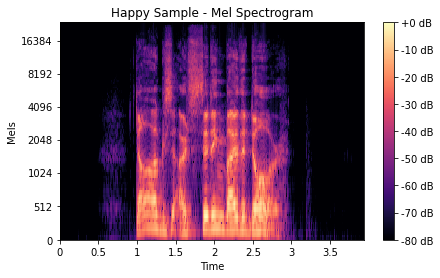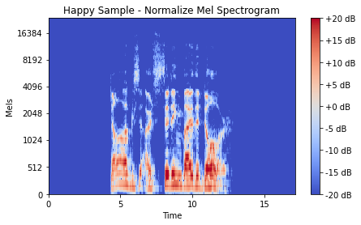</div></section><section class="cell" data-cell="32" id="celda-33"><h1 id="seccion-16"><strong>2.4.1.1.6 DTF Inversa</strong></h1>
<p>Luego de aplicar los filtros triangulares al espectro de potencia y de obtener el espectrograma (utilizando la escala de mel normalizada en escala logarítmica), procedemos a calcular los <strong>Coeficientes Cepstrales</strong> para lograr que las características extraídas de la señal de audio sean independientes una de otras.</p>
<h1 id="seccion-17"><strong>A - Coeficientes Cepstrales</strong></h1>
<p>Los coeficientes cepstrales son una <strong>transformación homomórfica</strong> que nos permite <strong>separar la señal del filtro</strong> y se obtiene mediante la <strong>Transformada de Fourier Discreta Inversa (Inverse Discrete Fourier Transform - IDFT)</strong> aplicada al espectrograma obtenido del paso anterior (<strong>filtros triangulares aplicados al espectro de potencia, y espectrograma obtenido de aplicar la escala de mel normalizada en escala logarítmica</strong>).</p>
<p>Matemáticamente, una transformación homomórfica <math aria-label="\hat{x}[n]=D(x[n])" display="inline" xmlns="http://www.w3.org/1998/Math/MathML"><mrow><mover accent="true"><mrow><mi>x</mi></mrow><mo>^</mo></mover><mo stretchy="false">[</mo><mi>n</mi><mo stretchy="false">]</mo><mo>=</mo><mi>D</mi><mo stretchy="false">(</mo><mi>x</mi><mo stretchy="false">[</mo><mi>n</mi><mo stretchy="false">]</mo><mo stretchy="false">)</mo></mrow></math> es un transformación que convierte una convolución en una suma:</p>
<p><math aria-label="\begin{align}
    x[n] &amp;= e[n]*h[n] \\
    \hat{x}[n] &amp;= \hat{e}[n] + \hat{h}[n].
\end{align}" display="block" xmlns="http://www.w3.org/1998/Math/MathML"><mrow><mrow><mi>x</mi><mo stretchy="false">[</mo><mi>n</mi><mo stretchy="false">]</mo><mi>&amp;</mi><mo>=</mo><mi>e</mi><mo stretchy="false">[</mo><mi>n</mi><mo stretchy="false">]</mo><mo>*</mo><mi>h</mi><mo stretchy="false">[</mo><mi>n</mi><mo stretchy="false">]</mo><mspace linebreak="newline"></mspace><mover accent="true"><mrow><mi>x</mi></mrow><mo>^</mo></mover><mo stretchy="false">[</mo><mi>n</mi><mo stretchy="false">]</mo><mi>&amp;</mi><mo>=</mo><mover accent="true"><mrow><mi>e</mi></mrow><mo>^</mo></mover><mo stretchy="false">[</mo><mi>n</mi><mo stretchy="false">]</mo><mo>+</mo><mover accent="true"><mrow><mi>h</mi></mrow><mo>^</mo></mover><mo stretchy="false">[</mo><mi>n</mi><mo stretchy="false">]</mo><mo>.</mo></mrow></mrow></math></p>
<p>Entonces, se puede encontrar un valor <math aria-label="N" display="inline" xmlns="http://www.w3.org/1998/Math/MathML"><mrow><mi>N</mi></mrow></math>, tal que, el cepstral del filtro sea <math aria-label="\hat{h}[n] \approx 0" display="inline" xmlns="http://www.w3.org/1998/Math/MathML"><mrow><mover accent="true"><mrow><mi>h</mi></mrow><mo>^</mo></mover><mo stretchy="false">[</mo><mi>n</mi><mo stretchy="false">]</mo><mo>≈</mo><mn>0</mn></mrow></math> para <math aria-label="n \geq N" display="inline" xmlns="http://www.w3.org/1998/Math/MathML"><mrow><mi>n</mi><mo>≥</mo><mi>N</mi></mrow></math>, y la excitación del cesptral sea <math aria-label="\hat{e}[n] \approx 0" display="inline" xmlns="http://www.w3.org/1998/Math/MathML"><mrow><mover accent="true"><mrow><mi>e</mi></mrow><mo>^</mo></mover><mo stretchy="false">[</mo><mi>n</mi><mo stretchy="false">]</mo><mo>≈</mo><mn>0</mn></mrow></math> para <math aria-label="n &lt; N" display="inline" xmlns="http://www.w3.org/1998/Math/MathML"><mrow><mi>n</mi><mo>&lt;</mo><mi>N</mi></mrow></math>, es decir, podremos <strong>recuperar de manera aproximada tanto <math aria-label="e[n]" display="inline" xmlns="http://www.w3.org/1998/Math/MathML"><mrow><mi>e</mi><mo stretchy="false">[</mo><mi>n</mi><mo stretchy="false">]</mo></mrow></math> como <math aria-label="h[n]" display="inline" xmlns="http://www.w3.org/1998/Math/MathML"><mrow><mi>h</mi><mo stretchy="false">[</mo><mi>n</mi><mo stretchy="false">]</mo></mrow></math> de <math aria-label="\hat{x}[n]" display="inline" xmlns="http://www.w3.org/1998/Math/MathML"><mrow><mover accent="true"><mrow><mi>x</mi></mrow><mo>^</mo></mover><mo stretchy="false">[</mo><mi>n</mi><mo stretchy="false">]</mo></mrow></math></strong> mediante el filtro homomórfico.</p>
<h1 id="seccion-18"><strong>B - Cepstral real y complejo</strong></h1>
<p>El cepstral real y complejo de una señal digital <math aria-label="x[n]" display="inline" xmlns="http://www.w3.org/1998/Math/MathML"><mrow><mi>x</mi><mo stretchy="false">[</mo><mi>n</mi><mo stretchy="false">]</mo></mrow></math> se definen respectivamente a continuación:</p>
<p><math aria-label="\begin{align}
    c[n] &amp;= \frac{1}{2 \pi} \int_{- \pi}^{\pi} ln | X (e ^{j \omega})| e ^{j \omega n} d \omega, \\
    \hat{x}[n] &amp;= \frac{1}{2 \pi} \int_{-\pi}^{\pi} ln X (e ^{j\omega}) e^{j\omega n} d \omega,
\end{align}" display="block" xmlns="http://www.w3.org/1998/Math/MathML"><mrow><mrow><mi>c</mi><mo stretchy="false">[</mo><mi>n</mi><mo stretchy="false">]</mo><mi>&amp;</mi><mo>=</mo><mfrac><mrow><mn>1</mn></mrow><mrow><mn>2</mn><mi>π</mi></mrow></mfrac><msubsup><mo>∫</mo><mrow><mo>−</mo><mi>π</mi></mrow><mrow><mi>π</mi></mrow></msubsup><mi>l</mi><mi>n</mi><mo stretchy="false">|</mo><mi>X</mi><mo stretchy="false">(</mo><msup><mi>e</mi><mrow><mi>j</mi><mi>ω</mi></mrow></msup><mo stretchy="false">)</mo><mo stretchy="false">|</mo><msup><mi>e</mi><mrow><mi>j</mi><mi>ω</mi><mi>n</mi></mrow></msup><mi>d</mi><mi>ω</mi><mo>,</mo><mspace linebreak="newline"></mspace><mover accent="true"><mrow><mi>x</mi></mrow><mo>^</mo></mover><mo stretchy="false">[</mo><mi>n</mi><mo stretchy="false">]</mo><mi>&amp;</mi><mo>=</mo><mfrac><mrow><mn>1</mn></mrow><mrow><mn>2</mn><mi>π</mi></mrow></mfrac><msubsup><mo>∫</mo><mrow><mo>−</mo><mi>π</mi></mrow><mrow><mi>π</mi></mrow></msubsup><mi>l</mi><mi>n</mi><mi>X</mi><mo stretchy="false">(</mo><msup><mi>e</mi><mrow><mi>j</mi><mi>ω</mi></mrow></msup><mo stretchy="false">)</mo><msup><mi>e</mi><mrow><mi>j</mi><mi>ω</mi><mi>n</mi></mrow></msup><mi>d</mi><mi>ω</mi><mo>,</mo></mrow></mrow></math></p>
<p>donde en la segunda ecuación se utiliza el logaritmo complejo</p>
<p><math aria-label="\begin{align}
    \hat{X} (e^{j \omega}) &amp;= ln X (e ^{j\omega}) = ln | X (e ^{j\omega}) | + j \theta (\omega),
\end{align}" display="block" xmlns="http://www.w3.org/1998/Math/MathML"><mrow><mrow><mover accent="true"><mrow><mi>X</mi></mrow><mo>^</mo></mover><mo stretchy="false">(</mo><msup><mi>e</mi><mrow><mi>j</mi><mi>ω</mi></mrow></msup><mo stretchy="false">)</mo><mi>&amp;</mi><mo>=</mo><mi>l</mi><mi>n</mi><mi>X</mi><mo stretchy="false">(</mo><msup><mi>e</mi><mrow><mi>j</mi><mi>ω</mi></mrow></msup><mo stretchy="false">)</mo><mo>=</mo><mi>l</mi><mi>n</mi><mo stretchy="false">|</mo><mi>X</mi><mo stretchy="false">(</mo><msup><mi>e</mi><mrow><mi>j</mi><mi>ω</mi></mrow></msup><mo stretchy="false">)</mo><mo stretchy="false">|</mo><mo>+</mo><mi>j</mi><mi>θ</mi><mo stretchy="false">(</mo><mi>ω</mi><mo stretchy="false">)</mo><mo>,</mo></mrow></mrow></math></p>
<p>siendo la fase de <math aria-label="\theta(\omega)" display="inline" xmlns="http://www.w3.org/1998/Math/MathML"><mrow><mi>θ</mi><mo stretchy="false">(</mo><mi>ω</mi><mo stretchy="false">)</mo></mrow></math></p>
<p><math aria-label="\begin{align}
    \theta (\omega) &amp;= arg \left[ X (e^{j \omega}) \right].
\end{align}" display="block" xmlns="http://www.w3.org/1998/Math/MathML"><mrow><mrow><mi>θ</mi><mo stretchy="false">(</mo><mi>ω</mi><mo stretchy="false">)</mo><mi>&amp;</mi><mo>=</mo><mi>a</mi><mi>r</mi><mi>g</mi><mrow><mo fence="true" form="prefix" stretchy="true">[</mo><mi>X</mi><mo stretchy="false">(</mo><msup><mi>e</mi><mrow><mi>j</mi><mi>ω</mi></mrow></msup><mo stretchy="false">)</mo><mo fence="true" form="postfix" stretchy="true">]</mo></mrow><mo>.</mo></mrow></mrow></math></p>
<p>Si la señal <math aria-label="x[n]" display="inline" xmlns="http://www.w3.org/1998/Math/MathML"><mrow><mi>x</mi><mo stretchy="false">[</mo><mi>n</mi><mo stretchy="false">]</mo></mrow></math> es real, tanto el cepstral real y complejo: <math aria-label="c[n]" display="inline" xmlns="http://www.w3.org/1998/Math/MathML"><mrow><mi>c</mi><mo stretchy="false">[</mo><mi>n</mi><mo stretchy="false">]</mo></mrow></math> y <math aria-label="\hat{x}[n]" display="inline" xmlns="http://www.w3.org/1998/Math/MathML"><mrow><mover accent="true"><mrow><mi>x</mi></mrow><mo>^</mo></mover><mo stretchy="false">[</mo><mi>n</mi><mo stretchy="false">]</mo></mrow></math>, son sañales reales. Por lo tanto, <strong>el término cepstral complejo no significa que sea una señal compleja, sino que se toma el logaritmo complejo de la misma</strong>.</p>
<h1 id="seccion-19"><strong>C - Cálculo de Coeficientes Cepstrales para Señales de Voz</strong></h1>
<p>Para realizar el cálculo de coeficientes cepstrales para una señal de voz, primeramente se crea una ventana sobre la señal (con longitud <math aria-label="N" display="inline" xmlns="http://www.w3.org/1998/Math/MathML"><mrow><mi>N</mi></mrow></math>). Teniendo en cuenta el cesptral complejo y usando la DFT, se tiene que:</p>
<p><math aria-label="\begin{align}
    X_a[k] &amp;= \sum_{n=0}^{N-1} x[n] e^{-j2\pi n k /N} \mbox &amp;&amp; 0 \leq k &lt; N,
\end{align}" display="block" xmlns="http://www.w3.org/1998/Math/MathML"><mrow><mrow><msub><mi>X</mi><mi>a</mi></msub><mo stretchy="false">[</mo><mi>k</mi><mo stretchy="false">]</mo><mi>&amp;</mi><mo>=</mo><munderover><mo>∑</mo><mrow><mi>n</mi><mo>=</mo><mn>0</mn></mrow><mrow><mi>N</mi><mo>−</mo><mn>1</mn></mrow></munderover><mi>x</mi><mo stretchy="false">[</mo><mi>n</mi><mo stretchy="false">]</mo><msup><mi>e</mi><mrow><mo>−</mo><mi>j</mi><mn>2</mn><mi>π</mi><mi>n</mi><mi>k</mi><mo>/</mo><mi>N</mi></mrow></msup><mstyle displaystyle="false" scriptlevel="0"><mtext>&amp;</mtext></mstyle><mi>&amp;</mi><mn>0</mn><mo>≤</mo><mi>k</mi><mo>&lt;</mo><mi>N</mi><mo>,</mo></mrow></mrow></math></p>
<p>donde</p>
<p><math aria-label="\begin{align}
    \hat{X}_a[k] &amp;= ln X_a [k] \mbox &amp;&amp; 0 \leq k &lt; N, \\
    \hat{x}_a[n] &amp;= \frac{1}{N} \sum_{n=0}^{N-1} \hat{X}_a [k] e^{-j 2 \pi n k / N} &amp; \mbox  0 \leq n &lt; N,
\end{align}" display="block" xmlns="http://www.w3.org/1998/Math/MathML"><mrow><mrow><msub><mover accent="true"><mrow><mi>X</mi></mrow><mo>^</mo></mover><mi>a</mi></msub><mo stretchy="false">[</mo><mi>k</mi><mo stretchy="false">]</mo><mi>&amp;</mi><mo>=</mo><mi>l</mi><mi>n</mi><msub><mi>X</mi><mi>a</mi></msub><mo stretchy="false">[</mo><mi>k</mi><mo stretchy="false">]</mo><mstyle displaystyle="false" scriptlevel="0"><mtext>&amp;</mtext></mstyle><mi>&amp;</mi><mn>0</mn><mo>≤</mo><mi>k</mi><mo>&lt;</mo><mi>N</mi><mo>,</mo><mspace linebreak="newline"></mspace><msub><mover accent="true"><mrow><mi>x</mi></mrow><mo>^</mo></mover><mi>a</mi></msub><mo stretchy="false">[</mo><mi>n</mi><mo stretchy="false">]</mo><mi>&amp;</mi><mo>=</mo><mfrac><mrow><mn>1</mn></mrow><mrow><mi>N</mi></mrow></mfrac><munderover><mo>∑</mo><mrow><mi>n</mi><mo>=</mo><mn>0</mn></mrow><mrow><mi>N</mi><mo>−</mo><mn>1</mn></mrow></munderover><msub><mover accent="true"><mrow><mi>X</mi></mrow><mo>^</mo></mover><mi>a</mi></msub><mo stretchy="false">[</mo><mi>k</mi><mo stretchy="false">]</mo><msup><mi>e</mi><mrow><mo>−</mo><mi>j</mi><mn>2</mn><mi>π</mi><mi>n</mi><mi>k</mi><mo>/</mo><mi>N</mi></mrow></msup><mi>&amp;</mi><mstyle displaystyle="false" scriptlevel="0"><mtext>0</mtext></mstyle><mo>≤</mo><mi>n</mi><mo>&lt;</mo><mi>N</mi><mo>,</mo></mrow></mrow></math></p>
<p>indicando el subíndice <math aria-label="a" display="inline" xmlns="http://www.w3.org/1998/Math/MathML"><mrow><mi>a</mi></mrow></math> el nuevo cepstral complejo (<math aria-label="\hat{x}_a[n]" display="inline" xmlns="http://www.w3.org/1998/Math/MathML"><mrow><msub><mover accent="true"><mrow><mi>x</mi></mrow><mo>^</mo></mover><mi>a</mi></msub><mo stretchy="false">[</mo><mi>n</mi><mo stretchy="false">]</mo></mrow></math> alues de <math aria-label="\hat{x}[n]" display="inline" xmlns="http://www.w3.org/1998/Math/MathML"><mrow><mover accent="true"><mrow><mi>x</mi></mrow><mo>^</mo></mover><mo stretchy="false">[</mo><mi>n</mi><mo stretchy="false">]</mo></mrow></math>):</p>
<p><math aria-label="\begin{align}
    \hat{x}_a[n] &amp;= \sum_{r=-\infty}^{\infty} \hat{x}[n+rN].
\end{align}" display="block" xmlns="http://www.w3.org/1998/Math/MathML"><mrow><mrow><msub><mover accent="true"><mrow><mi>x</mi></mrow><mo>^</mo></mover><mi>a</mi></msub><mo stretchy="false">[</mo><mi>n</mi><mo stretchy="false">]</mo><mi>&amp;</mi><mo>=</mo><munderover><mo>∑</mo><mrow><mi>r</mi><mo>=</mo><mo>−</mo><mo>∞</mo></mrow><mrow><mo>∞</mo></mrow></munderover><mover accent="true"><mrow><mi>x</mi></mrow><mo>^</mo></mover><mo stretchy="false">[</mo><mi>n</mi><mo>+</mo><mi>r</mi><mi>N</mi><mo stretchy="false">]</mo><mo>.</mo></mrow></mrow></math></p>
<p>Este alias, introduce un error en la estimación que puede ser reducido en cierta forma eligiendo un valor grande para <math aria-label="N" display="inline" xmlns="http://www.w3.org/1998/Math/MathML"><mrow><mi>N</mi></mrow></math>. Además, dado que la señal de voz por lo general tiene frecuencias en las que domina el ruido (<strong>frecuencias muy bajas o muy altas</strong>), da como resultado una fase <math aria-label="\theta[k]" display="inline" xmlns="http://www.w3.org/1998/Math/MathML"><mrow><mi>θ</mi><mo stretchy="false">[</mo><mi>k</mi><mo stretchy="false">]</mo></mrow></math> que cambia drásticamente. Por esta razón, el <strong>cepstral complejo rara vez se utiliza para el análisis de las señales de voz</strong>.</p>
<p>En la práctica, <strong>se utilizan los coeficientes cepstrales reales</strong>, es decir:</p>
<p><math aria-label="\begin{align}
    C_a[k] &amp;= ln |X_a[k]| \mbox &amp;&amp; 0 \leq k &lt; N,\\
    c_a[n] &amp;= \frac{1}{N} \sum_{n=0}^{N-1} C_a[k]e^{-j2 \pi nk /N} \mbox &amp;&amp; 0 \leq n &lt; N,\\
    c_a[n] &amp;= \sum_{r=-\infty}^{\infty}c[n+rN],
\end{align}" display="block" xmlns="http://www.w3.org/1998/Math/MathML"><mrow><mrow><msub><mi>C</mi><mi>a</mi></msub><mo stretchy="false">[</mo><mi>k</mi><mo stretchy="false">]</mo><mi>&amp;</mi><mo>=</mo><mi>l</mi><mi>n</mi><mo stretchy="false">|</mo><msub><mi>X</mi><mi>a</mi></msub><mo stretchy="false">[</mo><mi>k</mi><mo stretchy="false">]</mo><mo stretchy="false">|</mo><mstyle displaystyle="false" scriptlevel="0"><mtext>&amp;</mtext></mstyle><mi>&amp;</mi><mn>0</mn><mo>≤</mo><mi>k</mi><mo>&lt;</mo><mi>N</mi><mo>,</mo><mspace linebreak="newline"></mspace><msub><mi>c</mi><mi>a</mi></msub><mo stretchy="false">[</mo><mi>n</mi><mo stretchy="false">]</mo><mi>&amp;</mi><mo>=</mo><mfrac><mrow><mn>1</mn></mrow><mrow><mi>N</mi></mrow></mfrac><munderover><mo>∑</mo><mrow><mi>n</mi><mo>=</mo><mn>0</mn></mrow><mrow><mi>N</mi><mo>−</mo><mn>1</mn></mrow></munderover><msub><mi>C</mi><mi>a</mi></msub><mo stretchy="false">[</mo><mi>k</mi><mo stretchy="false">]</mo><msup><mi>e</mi><mrow><mo>−</mo><mi>j</mi><mn>2</mn><mi>π</mi><mi>n</mi><mi>k</mi><mo>/</mo><mi>N</mi></mrow></msup><mstyle displaystyle="false" scriptlevel="0"><mtext>&amp;</mtext></mstyle><mi>&amp;</mi><mn>0</mn><mo>≤</mo><mi>n</mi><mo>&lt;</mo><mi>N</mi><mo>,</mo><mspace linebreak="newline"></mspace><msub><mi>c</mi><mi>a</mi></msub><mo stretchy="false">[</mo><mi>n</mi><mo stretchy="false">]</mo><mi>&amp;</mi><mo>=</mo><munderover><mo>∑</mo><mrow><mi>r</mi><mo>=</mo><mo>−</mo><mo>∞</mo></mrow><mrow><mo>∞</mo></mrow></munderover><mi>c</mi><mo stretchy="false">[</mo><mi>n</mi><mo>+</mo><mi>r</mi><mi>N</mi><mo stretchy="false">]</mo><mo>,</mo></mrow></mrow></math></p>
<p>donde nuevamente, el error puede ser reducido eligiendo un valor grande para <math aria-label="N" display="inline" xmlns="http://www.w3.org/1998/Math/MathML"><mrow><mi>N</mi></mrow></math>.</p>
<p>Volviendo al cálculo de los coeficientes MFFC, hacemos uso de los coeficientes cepstrales reales, y en este caso, aplicamos la <strong>Transformada de Cosenos Discreta (Discrete Cosine Transform - DCT), que es muy utilizada en los estándares de compresión de imágenes, donde la imagen se descompone en suma de cosenos (y no en una suma de senos y cosenos como la DFT)</strong>.</p>
<p>En nuestro caso, mediante la <strong>DCT</strong>, queremos aplicarla a la señal para <strong>descorrelacionar los coeficientes del banco de filtros y producir una representación comprimida de éstos</strong>:</p>
<p><math aria-label="\begin{align}
    c[n] &amp;= \sum_{m=0}^{M-1} S[m] cos ( \pi n (m+1/2)/M) \mbox &amp;&amp; 0 \leq n &lt; M,
\end{align}" display="block" xmlns="http://www.w3.org/1998/Math/MathML"><mrow><mrow><mi>c</mi><mo stretchy="false">[</mo><mi>n</mi><mo stretchy="false">]</mo><mi>&amp;</mi><mo>=</mo><munderover><mo>∑</mo><mrow><mi>m</mi><mo>=</mo><mn>0</mn></mrow><mrow><mi>M</mi><mo>−</mo><mn>1</mn></mrow></munderover><mi>S</mi><mo stretchy="false">[</mo><mi>m</mi><mo stretchy="false">]</mo><mi>c</mi><mi>o</mi><mi>s</mi><mo stretchy="false">(</mo><mi>π</mi><mi>n</mi><mo stretchy="false">(</mo><mi>m</mi><mo>+</mo><mn>1</mn><mo>/</mo><mn>2</mn><mo stretchy="false">)</mo><mo>/</mo><mi>M</mi><mo stretchy="false">)</mo><mstyle displaystyle="false" scriptlevel="0"><mtext>&amp;</mtext></mstyle><mi>&amp;</mi><mn>0</mn><mo>≤</mo><mi>n</mi><mo>&lt;</mo><mi>M</mi><mo>,</mo></mrow></mrow></math></p>
<p>donde <math aria-label="M" display="inline" xmlns="http://www.w3.org/1998/Math/MathML"><mrow><mi>M</mi></mrow></math> varía según las diferentes implementaciones, desde <math aria-label="24" display="inline" xmlns="http://www.w3.org/1998/Math/MathML"><mrow><mn>24</mn></mrow></math> a <math aria-label="40" display="inline" xmlns="http://www.w3.org/1998/Math/MathML"><mrow><mn>40</mn></mrow></math>. Generalmente, para el reconocimiento automático de voz (<strong>Automatic Speech Recognition - ASR</strong>), se suelen utilizar de <math aria-label="2" display="inline" xmlns="http://www.w3.org/1998/Math/MathML"><mrow><mn>2</mn></mrow></math> a <math aria-label="13" display="inline" xmlns="http://www.w3.org/1998/Math/MathML"><mrow><mn>13</mn></mrow></math> coeficientes MFFC (recordar que ya no son una transformación homomórfica); el resto se decarta ya que representan cambios rápidos en los coeficientes de los bancos de filtros y son detalles que no contribuyen a la tarea de ASR.</p>
</section><section class="cell" data-cell="33" id="celda-34"><details class="source-code"><summary>Código Python · celda 34</summary><button class="copy-code" type="button">Copiar código</button><div class="highlight"><pre><span></span><span class="c1"># Cálculo de Coeficientes MFCC</span>

<span class="n">n_mfcc</span>          <span class="o">=</span> <span class="mi">40</span>
<span class="n">n_fft</span>           <span class="o">=</span> <span class="mi">1024</span>  <span class="c1"># 4096 - 2048 - 1024 - 512</span>
<span class="n">winlen</span>          <span class="o">=</span> <span class="mi">512</span>
<span class="n">window</span>          <span class="o">=</span> <span class="s1">'hamming'</span>
<span class="n">hop_length</span>      <span class="o">=</span> <span class="mi">256</span>   <span class="c1"># 512 - 256</span>
<span class="n">n_mels</span>          <span class="o">=</span> <span class="mi">128</span>   <span class="c1"># 40 - 128</span>
<span class="n">fmax</span>            <span class="o">=</span> <span class="n">happy_sample_rate</span> <span class="o">/</span> <span class="mi">2</span>


<span class="n">mfc_coefficients</span><span class="o">=</span> <span class="n">librosa</span><span class="o">.</span><span class="n">feature</span><span class="o">.</span><span class="n">mfcc</span><span class="p">(</span>
    <span class="n">y</span>           <span class="o">=</span> <span class="n">happy_waveform</span><span class="p">,</span>
    <span class="n">sr</span>          <span class="o">=</span> <span class="n">happy_sample_rate</span><span class="p">,</span>
    <span class="n">n_mfcc</span>      <span class="o">=</span> <span class="n">n_mfcc</span><span class="p">,</span>
    <span class="n">n_fft</span>       <span class="o">=</span> <span class="n">n_fft</span><span class="p">,</span>
    <span class="n">win_length</span>  <span class="o">=</span> <span class="n">winlen</span><span class="p">,</span>
    <span class="n">window</span>      <span class="o">=</span> <span class="n">window</span><span class="p">,</span>
    <span class="n">n_mels</span>      <span class="o">=</span> <span class="n">n_mels</span><span class="p">,</span>
    <span class="n">fmax</span>        <span class="o">=</span> <span class="n">fmax</span>
    <span class="p">)</span>

<span class="n">librosa</span><span class="o">.</span><span class="n">display</span><span class="o">.</span><span class="n">specshow</span><span class="p">(</span><span class="n">mfc_coefficients</span><span class="p">,</span> <span class="n">x_axis</span><span class="o">=</span><span class="s1">'time'</span><span class="p">)</span>
<span class="n">plt</span><span class="o">.</span><span class="n">colorbar</span><span class="p">()</span>
<span class="n">plt</span><span class="o">.</span><span class="n">tight_layout</span><span class="p">()</span>
<span class="n">plt</span><span class="o">.</span><span class="n">title</span><span class="p">(</span><span class="s1">'Happy Sample - MFCC'</span><span class="p">)</span>
<span class="n">plt</span><span class="o">.</span><span class="n">show</span><span class="p">()</span>
</pre></div>
</details><div class="output">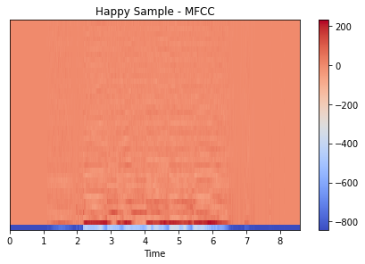</div></section><section class="cell" data-cell="34" id="celda-35"><h1 id="seccion-20"><strong>2.1.5 Característica Cromática o Cromagrama</strong></h1>
<p>Las <strong>características cromáticas o cromagramas</strong>, sirven para estimar los componentes de la clase de tono occidental (relacionado con el concepto de teoría musical de la clase de tono -<strong>pitch class</strong>-) en un intervalo de tiempo breve.</p>
</section><section class="cell" data-cell="35" id="celda-36"><h1 id="seccion-21"><strong>2.1.5.1 Funciones Características</strong></h1>
<p>Las funciones características <strong>[Petrov et. al]</strong> son funciones que toman valores complejos y tienen argumento real. Se define a partir de una variable aleatoria <math aria-label="X" display="inline" xmlns="http://www.w3.org/1998/Math/MathML"><mrow><mi>X</mi></mrow></math> que caracteriza la distribución <math aria-label="F(x)" display="inline" xmlns="http://www.w3.org/1998/Math/MathML"><mrow><mi>F</mi><mo stretchy="false">(</mo><mi>x</mi><mo stretchy="false">)</mo></mrow></math> de la variable aleatoria <math aria-label="X" display="inline" xmlns="http://www.w3.org/1998/Math/MathML"><mrow><mi>X</mi></mrow></math>. Además, este tipo de funiones son adecuadas para el estudio de la convergencia débil de variables aleatorias independientes.</p>
<h1 id="seccion-22"><strong>2.1.5.1.1 Definiciones</strong></h1>
<p><strong>Variable Aleatoria Compleja.</strong> Dadas dos variables aleatorias <math aria-label="X" display="inline" xmlns="http://www.w3.org/1998/Math/MathML"><mrow><mi>X</mi></mrow></math> e <math aria-label="Y" display="inline" xmlns="http://www.w3.org/1998/Math/MathML"><mrow><mi>Y</mi></mrow></math>, definimos la variable aleatoria compleja <math aria-label="Z = X + iY" display="inline" xmlns="http://www.w3.org/1998/Math/MathML"><mrow><mi>Z</mi><mo>=</mo><mi>X</mi><mo>+</mo><mi>i</mi><mi>Y</mi></mrow></math>, donde <math aria-label="i = \sqrt{-1}" display="inline" xmlns="http://www.w3.org/1998/Math/MathML"><mrow><mi>i</mi><mo>=</mo><msqrt><mrow><mo>−</mo><mn>1</mn></mrow></msqrt></mrow></math> es la unidad imaginaria. Si las variables aleatorias <math aria-label="X,Y" display="inline" xmlns="http://www.w3.org/1998/Math/MathML"><mrow><mi>X</mi><mo>,</mo><mi>Y</mi></mrow></math> tienen esperanza matemática <math aria-label="\mathbf{E}X" display="inline" xmlns="http://www.w3.org/1998/Math/MathML"><mrow><mi>𝐄</mi><mi>X</mi></mrow></math>, <math aria-label="\mathbf{E} Y" display="inline" xmlns="http://www.w3.org/1998/Math/MathML"><mrow><mi>𝐄</mi><mi>Y</mi></mrow></math>, definimos la esperanza matemática de la variable aleatoria compleja <math aria-label="Z" display="inline" xmlns="http://www.w3.org/1998/Math/MathML"><mrow><mi>Z</mi></mrow></math> mediante <math aria-label="\mathbf{E} Z = \mathbf{E} X + i\mathbf{E}Y" display="inline" xmlns="http://www.w3.org/1998/Math/MathML"><mrow><mi>𝐄</mi><mi>Z</mi><mo>=</mo><mi>𝐄</mi><mi>X</mi><mo>+</mo><mi>i</mi><mi>𝐄</mi><mi>Y</mi></mrow></math>.</p>
<p><strong>Función característica.</strong> Sea una variable aleatoria <math aria-label="X" display="inline" xmlns="http://www.w3.org/1998/Math/MathML"><mrow><mi>X</mi></mrow></math> definida en un espacio de probabilidad <math aria-label="(\Omega, \mathcal{A}, P)" display="inline" xmlns="http://www.w3.org/1998/Math/MathML"><mrow><mo stretchy="false">(</mo><mi>Ω</mi><mo>,</mo><mi>𝒜</mi><mo>,</mo><mi>P</mi><mo stretchy="false">)</mo></mrow></math>. Llamamos <strong>función característica</strong> de la variable aleatoria <math aria-label="X" display="inline" xmlns="http://www.w3.org/1998/Math/MathML"><mrow><mi>X</mi></mrow></math> a la función <math aria-label="f(t)" display="inline" xmlns="http://www.w3.org/1998/Math/MathML"><mrow><mi>f</mi><mo stretchy="false">(</mo><mi>t</mi><mo stretchy="false">)</mo></mrow></math>, definida para todo <math aria-label="t" display="inline" xmlns="http://www.w3.org/1998/Math/MathML"><mrow><mi>t</mi></mrow></math> real, mediante la igualdad</p>
<p><math aria-label="\begin{align}
    f(t) &amp;= \mathbf{E} e^{itX}, \\
         &amp;= \mathbf{E}cos t X + i \mathbf{E} sen t X.
\end{align}" display="block" xmlns="http://www.w3.org/1998/Math/MathML"><mrow><mrow><mi>f</mi><mo stretchy="false">(</mo><mi>t</mi><mo stretchy="false">)</mo><mi>&amp;</mi><mo>=</mo><mi>𝐄</mi><msup><mi>e</mi><mrow><mi>i</mi><mi>t</mi><mi>X</mi></mrow></msup><mo>,</mo><mspace linebreak="newline"></mspace><mi>&amp;</mi><mo>=</mo><mi>𝐄</mi><mi>c</mi><mi>o</mi><mi>s</mi><mi>t</mi><mi>X</mi><mo>+</mo><mi>i</mi><mi>𝐄</mi><mi>s</mi><mi>e</mi><mi>n</mi><mi>t</mi><mi>X</mi><mo>.</mo></mrow></mrow></math></p>
<p>Ya que las variables aleatorias <math aria-label="costX" display="inline" xmlns="http://www.w3.org/1998/Math/MathML"><mrow><mi>c</mi><mi>o</mi><mi>s</mi><mi>t</mi><mi>X</mi></mrow></math> y <math aria-label="sentX" display="inline" xmlns="http://www.w3.org/1998/Math/MathML"><mrow><mi>s</mi><mi>e</mi><mi>n</mi><mi>t</mi><mi>X</mi></mrow></math> están acotadas para todo <math aria-label="t" display="inline" xmlns="http://www.w3.org/1998/Math/MathML"><mrow><mi>t</mi></mrow></math> real, sus esperanzas matemáticas existen. Luego, la función característica de una variable aleatoria arbitraria <math aria-label="X" display="inline" xmlns="http://www.w3.org/1998/Math/MathML"><mrow><mi>X</mi></mrow></math> está correctamente definida para todo <math aria-label="t" display="inline" xmlns="http://www.w3.org/1998/Math/MathML"><mrow><mi>t</mi></mrow></math> real.</p>
<p>Si la variable aleatoria <math aria-label="X" display="inline" xmlns="http://www.w3.org/1998/Math/MathML"><mrow><mi>X</mi></mrow></math> tiene distribución discreta, y toma los valores <math aria-label="x_1, x_2, \dots" display="inline" xmlns="http://www.w3.org/1998/Math/MathML"><mrow><msub><mi>x</mi><mn>1</mn></msub><mo>,</mo><msub><mi>x</mi><mn>2</mn></msub><mo>,</mo><mo>…</mo></mrow></math> con probabilidad <math aria-label="p1, p2, \dots" display="inline" xmlns="http://www.w3.org/1998/Math/MathML"><mrow><mi>p</mi><mn>1</mn><mo>,</mo><mi>p</mi><mn>2</mn><mo>,</mo><mo>…</mo></mrow></math> respectivamente, entonces</p>
<p><math aria-label="\begin{align}
    f(t) &amp;= \sum_{k} e^{itx_k}p_k.
\end{align}" display="block" xmlns="http://www.w3.org/1998/Math/MathML"><mrow><mrow><mi>f</mi><mo stretchy="false">(</mo><mi>t</mi><mo stretchy="false">)</mo><mi>&amp;</mi><mo>=</mo><munder><mo>∑</mo><mrow><mi>k</mi></mrow></munder><msup><mi>e</mi><mrow><mi>i</mi><mi>t</mi><msub><mi>x</mi><mi>k</mi></msub></mrow></msup><msub><mi>p</mi><mi>k</mi></msub><mo>.</mo></mrow></mrow></math></p>
<p>Si <math aria-label="X" display="inline" xmlns="http://www.w3.org/1998/Math/MathML"><mrow><mi>X</mi></mrow></math> tiene distribución continua, con densidad dada por <math aria-label="p(x)" display="inline" xmlns="http://www.w3.org/1998/Math/MathML"><mrow><mi>p</mi><mo stretchy="false">(</mo><mi>x</mi><mo stretchy="false">)</mo></mrow></math>, entonces</p>
<p><math aria-label="\begin{align}
    f(t) &amp;= \int_{-\infty}^{\infty} e^{itx}p(x)dx.
\end{align}" display="block" xmlns="http://www.w3.org/1998/Math/MathML"><mrow><mrow><mi>f</mi><mo stretchy="false">(</mo><mi>t</mi><mo stretchy="false">)</mo><mi>&amp;</mi><mo>=</mo><msubsup><mo>∫</mo><mrow><mo>−</mo><mo>∞</mo></mrow><mrow><mo>∞</mo></mrow></msubsup><msup><mi>e</mi><mrow><mi>i</mi><mi>t</mi><mi>x</mi></mrow></msup><mi>p</mi><mo stretchy="false">(</mo><mi>x</mi><mo stretchy="false">)</mo><mi>d</mi><mi>x</mi><mo>.</mo></mrow></mrow></math></p>
<p><strong>Función Característica en Análisis Funcional.</strong> Si podemos indetificar la distribución de la variable aleatoria considerada como una medida positiva, la función característica se denomina <strong>transformada de Fourier</strong> de la medida correspondiente</p>
<p><math aria-label="\begin{align}
    M(\theta) &amp;= \int e^{j \theta x} P(x) dx = \langle e^{j\theta x} \rangle.
\end{align}" display="block" xmlns="http://www.w3.org/1998/Math/MathML"><mrow><mrow><mi>M</mi><mo stretchy="false">(</mo><mi>θ</mi><mo stretchy="false">)</mo><mi>&amp;</mi><mo>=</mo><mo>∫</mo><msup><mi>e</mi><mrow><mi>j</mi><mi>θ</mi><mi>x</mi></mrow></msup><mi>P</mi><mo stretchy="false">(</mo><mi>x</mi><mo stretchy="false">)</mo><mi>d</mi><mi>x</mi><mo>=</mo><mi>⟨</mi><msup><mi>e</mi><mrow><mi>j</mi><mi>θ</mi><mi>x</mi></mrow></msup><mi>⟩</mi><mo>.</mo></mrow></mrow></math></p>
<p>La función característica es el promedio de <math aria-label="e^{j\theta x}" display="inline" xmlns="http://www.w3.org/1998/Math/MathML"><mrow><msup><mi>e</mi><mrow><mi>j</mi><mi>θ</mi><mi>x</mi></mrow></msup></mrow></math>, donde <math aria-label="\theta" display="inline" xmlns="http://www.w3.org/1998/Math/MathML"><mrow><mi>θ</mi></mrow></math> es un parámetro. Por expanción de la exponecial se tiene que</p>
<p><math aria-label="\begin{align}
    M(\theta) &amp;= \int e^{j \theta x} P(x) dx,\\
                &amp;= \int \sum_{i=1}^{\infty} \frac{(j \theta x)^n}{n !}P(x)dx,\\
                &amp;= \sum_{i=1}^{\infty} \frac{j^n \theta^n}{n !} \langle x^{n} \rangle,
\end{align}" display="block" xmlns="http://www.w3.org/1998/Math/MathML"><mrow><mrow><mi>M</mi><mo stretchy="false">(</mo><mi>θ</mi><mo stretchy="false">)</mo><mi>&amp;</mi><mo>=</mo><mo>∫</mo><msup><mi>e</mi><mrow><mi>j</mi><mi>θ</mi><mi>x</mi></mrow></msup><mi>P</mi><mo stretchy="false">(</mo><mi>x</mi><mo stretchy="false">)</mo><mi>d</mi><mi>x</mi><mo>,</mo><mspace linebreak="newline"></mspace><mi>&amp;</mi><mo>=</mo><mo>∫</mo><munderover><mo>∑</mo><mrow><mi>i</mi><mo>=</mo><mn>1</mn></mrow><mrow><mo>∞</mo></mrow></munderover><mfrac><mrow><mo stretchy="false">(</mo><mi>j</mi><mi>θ</mi><mi>x</mi><msup><mo stretchy="false">)</mo><mi>n</mi></msup></mrow><mrow><mi>n</mi><mo>!</mo></mrow></mfrac><mi>P</mi><mo stretchy="false">(</mo><mi>x</mi><mo stretchy="false">)</mo><mi>d</mi><mi>x</mi><mo>,</mo><mspace linebreak="newline"></mspace><mi>&amp;</mi><mo>=</mo><munderover><mo>∑</mo><mrow><mi>i</mi><mo>=</mo><mn>1</mn></mrow><mrow><mo>∞</mo></mrow></munderover><mfrac><mrow><msup><mi>j</mi><mi>n</mi></msup><msup><mi>θ</mi><mi>n</mi></msup></mrow><mrow><mi>n</mi><mo>!</mo></mrow></mfrac><mi>⟨</mi><msup><mi>x</mi><mrow><mi>n</mi></mrow></msup><mi>⟩</mi><mo>,</mo></mrow></mrow></math></p>
<p>la cual es la expansión por series de Taylor en <math aria-label="\theta" display="inline" xmlns="http://www.w3.org/1998/Math/MathML"><mrow><mi>θ</mi></mrow></math> con coeficientes <math aria-label="j^n \langle x^n \rangle" display="inline" xmlns="http://www.w3.org/1998/Math/MathML"><mrow><msup><mi>j</mi><mi>n</mi></msup><mi>⟨</mi><msup><mi>x</mi><mi>n</mi></msup><mi>⟩</mi></mrow></math>. Dado que los coeficientes de la serie de Taylor están dados por la <math aria-label="n" display="inline" xmlns="http://www.w3.org/1998/Math/MathML"><mrow><mi>n</mi></mrow></math>-ésima derivada de la función evaluada en cero, entonces</p>
<p><math aria-label="\begin{align}
    \langle x^{n} \rangle &amp;= \frac{1}{j^n} \frac{\partial^n M(\theta)}{\partial \theta^n} \biggr\rvert_{\theta = 0}.
\end{align}" display="block" xmlns="http://www.w3.org/1998/Math/MathML"><mrow><mrow><mi>⟨</mi><msup><mi>x</mi><mrow><mi>n</mi></mrow></msup><mi>⟩</mi><mi>&amp;</mi><mo>=</mo><mfrac><mrow><mn>1</mn></mrow><mrow><msup><mi>j</mi><mi>n</mi></msup></mrow></mfrac><mfrac><mrow><msup><mo>∂</mo><mi>n</mi></msup><mi>M</mi><mo stretchy="false">(</mo><mi>θ</mi><mo stretchy="false">)</mo></mrow><mrow><mo>∂</mo><msup><mi>θ</mi><mi>n</mi></msup></mrow></mfrac><msub><mo fence="true" maxsize="2.047em" minsize="2.047em" stretchy="true">\rvert</mo><mrow><mi>θ</mi><mo>=</mo><mn>0</mn></mrow></msub><mo>.</mo></mrow></mrow></math></p>
<p>Además, los pares de transformadas de Fourier están relacionados de manera única y, por lo tanto, la función característica determina la distribución,</p>
<p><math aria-label="\begin{align}
    P(x) &amp;= \frac{1}{2 \pi} \int M(\theta) e^{-j \theta x} d\theta.
\end{align}" display="block" xmlns="http://www.w3.org/1998/Math/MathML"><mrow><mrow><mi>P</mi><mo stretchy="false">(</mo><mi>x</mi><mo stretchy="false">)</mo><mi>&amp;</mi><mo>=</mo><mfrac><mrow><mn>1</mn></mrow><mrow><mn>2</mn><mi>π</mi></mrow></mfrac><mo>∫</mo><mi>M</mi><mo stretchy="false">(</mo><mi>θ</mi><mo stretchy="false">)</mo><msup><mi>e</mi><mrow><mo>−</mo><mi>j</mi><mi>θ</mi><mi>x</mi></mrow></msup><mi>d</mi><mi>θ</mi><mo>.</mo></mrow></mrow></math></p>
</section><section class="cell" data-cell="36" id="celda-37"><h1 id="seccion-23"><strong>2.1.5.2 Distribuciones de Tiempo-Frecuencia</strong></h1>
<p>El objetivo del análisis de tiempo-frecuencia (time-frequency) <strong>[Wakefield, G. H., pg. 82-92]</strong>, es encontrar una función que describa la densidad de energía de una señal, simultáneamente en el tiempo y frecuencia, y además, que pueda ser usada y manipulada desde la misma manera que cualquier función de densidad de probabilidad.</p>
<p>Al encontrar dicha distribución, se puede calcular la fracción de la energía en una determinada frecuencia y rango de tiempo, además de calcular sus momentos (globales y locales, tales como la media, frecuencia condicional, propagación local, etc), y calcular la densidad de frecuencia en un momento particular.</p>
<p>A continuación, definimos algunos conceptos importantes a la hora de tratar con este tipo de distribuciones. Sea una señal de audio <math aria-label="s(t)" display="inline" xmlns="http://www.w3.org/1998/Math/MathML"><mrow><mi>s</mi><mo stretchy="false">(</mo><mi>t</mi><mo stretchy="false">)</mo></mrow></math>, entonces definimos.</p>
</section><section class="cell" data-cell="37" id="celda-38"><h1 id="seccion-24"><strong>2.1.5.2.1 Descripción Temporal de Señales</strong></h1>
<ul>
<li>
<p><strong>Densidad de Energía o Potencia Instantánea:</strong> la energía o la intensidad de la señal generalmente es <math aria-label="|s(t)|^2" display="inline" xmlns="http://www.w3.org/1998/Math/MathML"><mrow><mo stretchy="false">|</mo><mi>s</mi><mo stretchy="false">(</mo><mi>t</mi><mo stretchy="false">)</mo><msup><mo stretchy="false">|</mo><mn>2</mn></msup></mrow></math>. Es decir, en un pequeño intervalo de tiempo, <math aria-label="\delta t" display="inline" xmlns="http://www.w3.org/1998/Math/MathML"><mrow><mi>δ</mi><mi>t</mi></mrow></math>, se necesita una cantidad <math aria-label="|s(t)|^2 \Delta t" display="inline" xmlns="http://www.w3.org/1998/Math/MathML"><mrow><mo stretchy="false">|</mo><mi>s</mi><mo stretchy="false">(</mo><mi>t</mi><mo stretchy="false">)</mo><msup><mo stretchy="false">|</mo><mn>2</mn></msup><mi>Δ</mi><mi>t</mi></mrow></math> de energía para producir la señal en ese momento. Luego, se define <strong>densidad de energía o potencia instantánea</strong> como <math aria-label="|s(t)|^2" display="inline" xmlns="http://www.w3.org/1998/Math/MathML"><mrow><mo stretchy="false">|</mo><mi>s</mi><mo stretchy="false">(</mo><mi>t</mi><mo stretchy="false">)</mo><msup><mo stretchy="false">|</mo><mn>2</mn></msup></mrow></math> (energía por unidad de tiempo).</p>
</li>
<li>
<p><strong>Energía Fraccionaria:</strong> se define como <math aria-label="|s(t)|^2 \Delta t" display="inline" xmlns="http://www.w3.org/1998/Math/MathML"><mrow><mo stretchy="false">|</mo><mi>s</mi><mo stretchy="false">(</mo><mi>t</mi><mo stretchy="false">)</mo><msup><mo stretchy="false">|</mo><mn>2</mn></msup><mi>Δ</mi><mi>t</mi></mrow></math>, donde <math aria-label="\Delta t" display="inline" xmlns="http://www.w3.org/1998/Math/MathML"><mrow><mi>Δ</mi><mi>t</mi></mrow></math> es el intervalo de tiempo en el instante <math aria-label="t" display="inline" xmlns="http://www.w3.org/1998/Math/MathML"><mrow><mi>t</mi></mrow></math>.</p>
</li>
<li>
<p><strong>Energía total:</strong> si <math aria-label="|s(t)|^2" display="inline" xmlns="http://www.w3.org/1998/Math/MathML"><mrow><mo stretchy="false">|</mo><mi>s</mi><mo stretchy="false">(</mo><mi>t</mi><mo stretchy="false">)</mo><msup><mo stretchy="false">|</mo><mn>2</mn></msup></mrow></math> es la energía por unidad de tiempo, entonces la energía total se obtiene sumando o integrando en todo el intervalo de tiempo,</p>
<p><math aria-label="\begin{align}
        E &amp;= \int |s(t)|^2 dt,
    \end{align}" display="block" xmlns="http://www.w3.org/1998/Math/MathML"><mrow><mrow><mi>E</mi><mi>&amp;</mi><mo>=</mo><mo>∫</mo><mo stretchy="false">|</mo><mi>s</mi><mo stretchy="false">(</mo><mi>t</mi><mo stretchy="false">)</mo><msup><mo stretchy="false">|</mo><mn>2</mn></msup><mi>d</mi><mi>t</mi><mo>,</mo></mrow></mrow></math></p>
<p>admeás, para señales con con energía finita, sin pérdida de generalidad, podems considerar que la energía total sea igual a <math aria-label="1" display="inline" xmlns="http://www.w3.org/1998/Math/MathML"><mrow><mn>1</mn></mrow></math>.</p>
</li>
<li>
<p><strong>Caracterización de formas de onda de tiempo: promedios, tiempo medio y duración.</strong> Considerando <math aria-label="|s(t)|^2" display="inline" xmlns="http://www.w3.org/1998/Math/MathML"><mrow><mo stretchy="false">|</mo><mi>s</mi><mo stretchy="false">(</mo><mi>t</mi><mo stretchy="false">)</mo><msup><mo stretchy="false">|</mo><mn>2</mn></msup></mrow></math> como una densidad en el tiempo, el tiempo medio puede ser definido de la forma habitual en la que se define un promedio:</p>
<p><math aria-label="\begin{align}
        \langle t \rangle &amp;= \int t |s(t)|^2 dt.
    \end{align}" display="block" xmlns="http://www.w3.org/1998/Math/MathML"><mrow><mrow><mi>⟨</mi><mi>t</mi><mi>⟩</mi><mi>&amp;</mi><mo>=</mo><mo>∫</mo><mi>t</mi><mo stretchy="false">|</mo><mi>s</mi><mo stretchy="false">(</mo><mi>t</mi><mo stretchy="false">)</mo><msup><mo stretchy="false">|</mo><mn>2</mn></msup><mi>d</mi><mi>t</mi><mo>.</mo></mrow></mrow></math></p>
<p>Al definir un promedio, podemos obtener información sobre dónde se concentra la densidad. Para mayor exactitud, podemos utilizar medidas de tendencia central que nos indiquen como se concentra la densidad alrededor del promedio o media. Una de estas medidas es la desviación estándar, <math aria-label="\sigma_t" display="inline" xmlns="http://www.w3.org/1998/Math/MathML"><mrow><msub><mi>σ</mi><mi>t</mi></msub></mrow></math>, dada por:</p>
<p><math aria-label="\begin{align}
        T^2 &amp;= \sigma_t^2 &amp;= \int (t - \langle t \rangle)^2 |s(t)|^2 dt
        &amp;= \langle t^2 \rangle - \langle t \rangle^2,
    \end{align}" display="block" xmlns="http://www.w3.org/1998/Math/MathML"><mrow><mrow><msup><mi>T</mi><mn>2</mn></msup><mi>&amp;</mi><mo>=</mo><msubsup><mi>σ</mi><mi>t</mi><mn>2</mn></msubsup><mi>&amp;</mi><mo>=</mo><mo>∫</mo><mo stretchy="false">(</mo><mi>t</mi><mo>−</mo><mi>⟨</mi><mi>t</mi><mi>⟩</mi><msup><mo stretchy="false">)</mo><mn>2</mn></msup><mo stretchy="false">|</mo><mi>s</mi><mo stretchy="false">(</mo><mi>t</mi><mo stretchy="false">)</mo><msup><mo stretchy="false">|</mo><mn>2</mn></msup><mi>d</mi><mi>t</mi><mi>&amp;</mi><mo>=</mo><mi>⟨</mi><msup><mi>t</mi><mn>2</mn></msup><mi>⟩</mi><mo>−</mo><mi>⟨</mi><mi>t</mi><msup><mi>⟩</mi><mn>2</mn></msup><mo>,</mo></mrow></mrow></math></p>
<p>donde <math aria-label="\langle t^2 \rangle" display="inline" xmlns="http://www.w3.org/1998/Math/MathML"><mrow><mi>⟨</mi><msup><mi>t</mi><mn>2</mn></msup><mi>⟩</mi></mrow></math> se define de manera similar a <math aria-label="\langle t \rangle" display="inline" xmlns="http://www.w3.org/1998/Math/MathML"><mrow><mi>⟨</mi><mi>t</mi><mi>⟩</mi></mrow></math>. Entonces, <math aria-label="\sigma_t^2" display="inline" xmlns="http://www.w3.org/1998/Math/MathML"><mrow><msubsup><mi>σ</mi><mi>t</mi><mn>2</mn></msubsup></mrow></math> es una indicación de la duración de la señal: en un tiempo <math aria-label="2\sigma_t" display="inline" xmlns="http://www.w3.org/1998/Math/MathML"><mrow><mn>2</mn><msub><mi>σ</mi><mi>t</mi></msub></mrow></math> la mayor parte de la señal habrá pasado. Si <math aria-label="\sigma" display="inline" xmlns="http://www.w3.org/1998/Math/MathML"><mrow><mi>σ</mi></mrow></math> es pequeño, entonces, la mayor parte de la señal está concentrada alrededor del tiempo medio y pasará rápidamente (indicación de que la señal es de corta duración, además, un comportamiento similar sucede para las señales de larga duración).</p>
<p>Cabe destacar, que existen señales que tienen una desviación estándar infinita, aunque pueden ser señales de energía finita. Esto indica que la señal es muy prolongada.</p>
</li>
</ul>
</section><section class="cell" data-cell="38" data-editorial-edits="d37066dcc048|1352d26cab79" id="celda-39"><h1 id="seccion-25"><strong>2.1.5.2.2 Descripción Frecuencial de Señales</strong></h1>
<p>Las principales razones para realizar un análisis frecuencial o espectral son:</p>
<ol>
<li>Analizar las características más importantes de una forma de onda.</li>
<li>Analizar la propagación de las ondas a través de los medios que generalmente depende de la frecuencia (las ondas se propagan a velocidades distintas según su frecuencia), es decir, análisis de dispersión.</li>
</ol>
<pre><code>Además, interesa analizar la atenuación (efecto de la propagación), que depende del medio y la frecuencia. Incluso en condiciones ideales de campo libre, la amplitud de una fuente puntual disminuye con la distancia por expansión geométrica; la absorción y el entorno añaden otros efectos. Para estudiar la propagación a través de los medios dependientes de la frecuencia, es necesario descomponer la señal (componentes de frecuencia), hacemos el análisis por cada descomposición y luego reconstruímos la señal para obtener la forma de onda resultante. De ahí la necesidad de descomponer una señal en frecuencias individuales, que es lo que hace el análisis de Fourier.
</code></pre>
<p><strong>Expansión de Fourier.</strong> La señal es expandida en termino de frecuencias sinusoidales</p>
<p><math aria-label="\begin{align}
    s(t) &amp;= \frac{1}{\sqrt{2 \pi}} \int S(\omega) e^{j\omega t} d\omega,
\end{align}" display="block" xmlns="http://www.w3.org/1998/Math/MathML"><mrow><mrow><mi>s</mi><mo stretchy="false">(</mo><mi>t</mi><mo stretchy="false">)</mo><mi>&amp;</mi><mo>=</mo><mfrac><mrow><mn>1</mn></mrow><mrow><msqrt><mrow><mn>2</mn><mi>π</mi></mrow></msqrt></mrow></mfrac><mo>∫</mo><mi>S</mi><mo stretchy="false">(</mo><mi>ω</mi><mo stretchy="false">)</mo><msup><mi>e</mi><mrow><mi>j</mi><mi>ω</mi><mi>t</mi></mrow></msup><mi>d</mi><mi>ω</mi><mo>,</mo></mrow></mrow></math></p>
<p>donde <math aria-label="S(\omega)" display="inline" xmlns="http://www.w3.org/1998/Math/MathML"><mrow><mi>S</mi><mo stretchy="false">(</mo><mi>ω</mi><mo stretchy="false">)</mo></mrow></math> representa la transformada de Fourier global (no un espectrograma) (normalizada simétricamente)</p>
<p><math aria-label="\begin{align}
    S(\omega) &amp;= \frac{1}{\sqrt{2 \pi}} \int s(t) e^{-j \omega t} dt.
\end{align}" display="block" xmlns="http://www.w3.org/1998/Math/MathML"><mrow><mrow><mi>S</mi><mo stretchy="false">(</mo><mi>ω</mi><mo stretchy="false">)</mo><mi>&amp;</mi><mo>=</mo><mfrac><mrow><mn>1</mn></mrow><mrow><msqrt><mrow><mn>2</mn><mi>π</mi></mrow></msqrt></mrow></mfrac><mo>∫</mo><mi>s</mi><mo stretchy="false">(</mo><mi>t</mi><mo stretchy="false">)</mo><msup><mi>e</mi><mrow><mo>−</mo><mi>j</mi><mi>ω</mi><mi>t</mi></mrow></msup><mi>d</mi><mi>t</mi><mo>.</mo></mrow></mrow></math></p>
<p><strong>Amplitud Espectral y Fase.</strong> Al igual que con la señal, es conveninente escribir el espectro en términos de su amplitud y fase,</p>
<p><math aria-label="\begin{align}
    S(\omega) &amp;= B(\omega)e^{j \psi(\omega)},
\end{align}" display="block" xmlns="http://www.w3.org/1998/Math/MathML"><mrow><mrow><mi>S</mi><mo stretchy="false">(</mo><mi>ω</mi><mo stretchy="false">)</mo><mi>&amp;</mi><mo>=</mo><mi>B</mi><mo stretchy="false">(</mo><mi>ω</mi><mo stretchy="false">)</mo><msup><mi>e</mi><mrow><mi>j</mi><mi>ψ</mi><mo stretchy="false">(</mo><mi>ω</mi><mo stretchy="false">)</mo></mrow></msup><mo>,</mo></mrow></mrow></math></p>
<p>donde <math aria-label="B(\omega)" display="inline" xmlns="http://www.w3.org/1998/Math/MathML"><mrow><mi>B</mi><mo stretchy="false">(</mo><mi>ω</mi><mo stretchy="false">)</mo></mrow></math> es la amplitud espectral y <math aria-label="\psi(\omega)" display="inline" xmlns="http://www.w3.org/1998/Math/MathML"><mrow><mi>ψ</mi><mo stretchy="false">(</mo><mi>ω</mi><mo stretchy="false">)</mo></mrow></math> la fase espectral para diferenciarlos de la fase y de la amplitud de la señal.</p>
<p><strong>Espectro de densidad de energía.</strong> Análogamente a la forma de onda de tiemp (<strong>time waveform</strong>) podemos tomar <math aria-label="|S(\omega)|^2" display="inline" xmlns="http://www.w3.org/1998/Math/MathML"><mrow><mo stretchy="false">|</mo><mi>S</mi><mo stretchy="false">(</mo><mi>ω</mi><mo stretchy="false">)</mo><msup><mo stretchy="false">|</mo><mn>2</mn></msup></mrow></math> como la densidad de enenergía por unidad de frecuencia:</p>
<ul>
<li><math aria-label="|S(\omega)|^2" display="inline" xmlns="http://www.w3.org/1998/Math/MathML"><mrow><mo stretchy="false">|</mo><mi>S</mi><mo stretchy="false">(</mo><mi>ω</mi><mo stretchy="false">)</mo><msup><mo stretchy="false">|</mo><mn>2</mn></msup></mrow></math>. Energía o intensidad por unidad de frecuencia en la frecuencia <math aria-label="\omega" display="inline" xmlns="http://www.w3.org/1998/Math/MathML"><mrow><mi>ω</mi></mrow></math>.</li>
<li><math aria-label="|S(\omega)|^2 \Delta \omega" display="inline" xmlns="http://www.w3.org/1998/Math/MathML"><mrow><mo stretchy="false">|</mo><mi>S</mi><mo stretchy="false">(</mo><mi>ω</mi><mo stretchy="false">)</mo><msup><mo stretchy="false">|</mo><mn>2</mn></msup><mi>Δ</mi><mi>ω</mi></mrow></math>. Energía fraccional en el intervalo de frecuencia <math aria-label="\Delta \omega" display="inline" xmlns="http://www.w3.org/1998/Math/MathML"><mrow><mi>Δ</mi><mi>ω</mi></mrow></math>.</li>
</ul>
<p><strong>Densidades conjuntas.</strong> Lo que buscamos es una densidad conjunta tal que</p>
<ul>
<li><math aria-label="P(t, \omega)" display="inline" xmlns="http://www.w3.org/1998/Math/MathML"><mrow><mi>P</mi><mo stretchy="false">(</mo><mi>t</mi><mo>,</mo><mi>ω</mi><mo stretchy="false">)</mo></mrow></math>. Intensidad en el tiempo <math aria-label="t" display="inline" xmlns="http://www.w3.org/1998/Math/MathML"><mrow><mi>t</mi></mrow></math> y frecuencia <math aria-label="w" display="inline" xmlns="http://www.w3.org/1998/Math/MathML"><mrow><mi>w</mi></mrow></math>.</li>
<li><math aria-label="P(t, w) \Delta t \Delta \omega" display="inline" xmlns="http://www.w3.org/1998/Math/MathML"><mrow><mi>P</mi><mo stretchy="false">(</mo><mi>t</mi><mo>,</mo><mi>w</mi><mo stretchy="false">)</mo><mi>Δ</mi><mi>t</mi><mi>Δ</mi><mi>ω</mi></mrow></math>. Energía fraccional en la celda de frecuencia-tiempo (<strong>time-frequency cell</strong>) <math aria-label="\Delta t" display="inline" xmlns="http://www.w3.org/1998/Math/MathML"><mrow><mi>Δ</mi><mi>t</mi></mrow></math> <math aria-label="\Delta \omega" display="inline" xmlns="http://www.w3.org/1998/Math/MathML"><mrow><mi>Δ</mi><mi>ω</mi></mrow></math> en <math aria-label="t" display="inline" xmlns="http://www.w3.org/1998/Math/MathML"><mrow><mi>t</mi></mrow></math>, <math aria-label="\omega" display="inline" xmlns="http://www.w3.org/1998/Math/MathML"><mrow><mi>ω</mi></mrow></math>.</li>
</ul>
<p class="note editorial-source">Fuente de la revisión: <a href="https://docs.scipy.org/doc/scipy/tutorial/fft.html">SciPy: transformadas discretas de Fourier</a></p></section><section class="cell" data-cell="39" id="celda-40"><h1 id="seccion-26"><strong>2.1.5.2.3 Marginales</strong></h1>
<p>La suma de la distribución de energía para todas las frecuencias en un instante de tiempo <math aria-label="t" display="inline" xmlns="http://www.w3.org/1998/Math/MathML"><mrow><mi>t</mi></mrow></math>, debería dara la energía instantánea, y la suma de todos los instantes de tiempo en una frecuencia particular, debería dar el espectro de densidad de energía (<strong>energy densitty spectrum</strong>). Por lo tanto, una densidad conjunta en el tiempo y frecuencia debería satisfacer lo siguiente:</p>
<p><math aria-label="\begin{align}
    \int P(t, \omega) d\omega &amp;= |s(t)|^2,\\
    \int P(t, \omega) dt &amp;= |S(\omega)|^2
\end{align}" display="block" xmlns="http://www.w3.org/1998/Math/MathML"><mrow><mrow><mo>∫</mo><mi>P</mi><mo stretchy="false">(</mo><mi>t</mi><mo>,</mo><mi>ω</mi><mo stretchy="false">)</mo><mi>d</mi><mi>ω</mi><mi>&amp;</mi><mo>=</mo><mo stretchy="false">|</mo><mi>s</mi><mo stretchy="false">(</mo><mi>t</mi><mo stretchy="false">)</mo><msup><mo stretchy="false">|</mo><mn>2</mn></msup><mo>,</mo><mspace linebreak="newline"></mspace><mo>∫</mo><mi>P</mi><mo stretchy="false">(</mo><mi>t</mi><mo>,</mo><mi>ω</mi><mo stretchy="false">)</mo><mi>d</mi><mi>t</mi><mi>&amp;</mi><mo>=</mo><mo stretchy="false">|</mo><mi>S</mi><mo stretchy="false">(</mo><mi>ω</mi><mo stretchy="false">)</mo><msup><mo stretchy="false">|</mo><mn>2</mn></msup></mrow></mrow></math></p>
<h1 id="seccion-27"><strong>2.1.5.2.4 Energía total</strong></h1>
<p>La energía total de la distribución debe ser la energía total de la señal</p>
<p><math aria-label="\begin{align}
    E &amp;= \int\int P(t, \omega) d\omega dt = \int |s(t)|^2 = \int |S(\omega)|^2 d\omega.
\end{align}" display="block" xmlns="http://www.w3.org/1998/Math/MathML"><mrow><mrow><mi>E</mi><mi>&amp;</mi><mo>=</mo><mo>∫</mo><mo>∫</mo><mi>P</mi><mo stretchy="false">(</mo><mi>t</mi><mo>,</mo><mi>ω</mi><mo stretchy="false">)</mo><mi>d</mi><mi>ω</mi><mi>d</mi><mi>t</mi><mo>=</mo><mo>∫</mo><mo stretchy="false">|</mo><mi>s</mi><mo stretchy="false">(</mo><mi>t</mi><mo stretchy="false">)</mo><msup><mo stretchy="false">|</mo><mn>2</mn></msup><mo>=</mo><mo>∫</mo><mo stretchy="false">|</mo><mi>S</mi><mo stretchy="false">(</mo><mi>ω</mi><mo stretchy="false">)</mo><msup><mo stretchy="false">|</mo><mn>2</mn></msup><mi>d</mi><mi>ω</mi><mo>.</mo></mrow></mrow></math></p>
<p>Si la densidad conjunta satiface los marginales, entonces, también se cumplirán los requerimiento para la energía total, pero lo contrario no es cierto (ya que una densidad conjunta puede satisfacer los requerimientos de la energía total pero sin satisfacer los marginales).</p>
<h1 id="seccion-28"><strong>2.1.5.2.5 Función Característica</strong></h1>
<p>La función característica conjunta de una densidad de tiempo-frecuencia está dada por</p>
<p><math aria-label="\begin{align}
    M(\theta, \tau) &amp;= \langle e^{j\theta t + j \tau \omega}\rangle = \int\int P(t, \omega) e^{j\theta t + j \tau \omega} dt d\omega.
\end{align}" display="block" xmlns="http://www.w3.org/1998/Math/MathML"><mrow><mrow><mi>M</mi><mo stretchy="false">(</mo><mi>θ</mi><mo>,</mo><mi>τ</mi><mo stretchy="false">)</mo><mi>&amp;</mi><mo>=</mo><mi>⟨</mi><msup><mi>e</mi><mrow><mi>j</mi><mi>θ</mi><mi>t</mi><mo>+</mo><mi>j</mi><mi>τ</mi><mi>ω</mi></mrow></msup><mi>⟩</mi><mo>=</mo><mo>∫</mo><mo>∫</mo><mi>P</mi><mo stretchy="false">(</mo><mi>t</mi><mo>,</mo><mi>ω</mi><mo stretchy="false">)</mo><msup><mi>e</mi><mrow><mi>j</mi><mi>θ</mi><mi>t</mi><mo>+</mo><mi>j</mi><mi>τ</mi><mi>ω</mi></mrow></msup><mi>d</mi><mi>t</mi><mi>d</mi><mi>ω</mi><mo>.</mo></mrow></mrow></math></p>
<h1 id="seccion-29"><strong>2.1.5.2.6 Promedios globales</strong></h1>
<p>El valor promedio de cualquier función de tiempo y frecuencia será calculado de la forma estándar, es decir,</p>
<p><math aria-label="\begin{align}
    \langle g(t, \omega)\rangle &amp;= \int\int g(t,\omega) P(t, \omega) d\omega dt.
\end{align}" display="block" xmlns="http://www.w3.org/1998/Math/MathML"><mrow><mrow><mi>⟨</mi><mi>g</mi><mo stretchy="false">(</mo><mi>t</mi><mo>,</mo><mi>ω</mi><mo stretchy="false">)</mo><mi>⟩</mi><mi>&amp;</mi><mo>=</mo><mo>∫</mo><mo>∫</mo><mi>g</mi><mo stretchy="false">(</mo><mi>t</mi><mo>,</mo><mi>ω</mi><mo stretchy="false">)</mo><mi>P</mi><mo stretchy="false">(</mo><mi>t</mi><mo>,</mo><mi>ω</mi><mo stretchy="false">)</mo><mi>d</mi><mi>ω</mi><mi>d</mi><mi>t</mi><mo>.</mo></mrow></mrow></math></p>
<p>Sí se satisfacen los marginales, podemos garantizar que los promedios de la forma</p>
<p><math aria-label="\begin{align}
    \langle g_1(t) + g_2(\omega)\rangle &amp;= \int\int \{g_1(t) + g_2(\omega)\} P(t, \omega) d\omega dt, \\
    &amp;= \int g_1(t) |s(t)|^{2} dt + \int g_2(\omega) |S(\omega)|^2 d\omega
\end{align}" display="block" xmlns="http://www.w3.org/1998/Math/MathML"><mrow><mrow><mi>⟨</mi><msub><mi>g</mi><mn>1</mn></msub><mo stretchy="false">(</mo><mi>t</mi><mo stretchy="false">)</mo><mo>+</mo><msub><mi>g</mi><mn>2</mn></msub><mo stretchy="false">(</mo><mi>ω</mi><mo stretchy="false">)</mo><mi>⟩</mi><mi>&amp;</mi><mo>=</mo><mo>∫</mo><mo>∫</mo><mo stretchy="false">{</mo><msub><mi>g</mi><mn>1</mn></msub><mo stretchy="false">(</mo><mi>t</mi><mo stretchy="false">)</mo><mo>+</mo><msub><mi>g</mi><mn>2</mn></msub><mo stretchy="false">(</mo><mi>ω</mi><mo stretchy="false">)</mo><mo stretchy="false">}</mo><mi>P</mi><mo stretchy="false">(</mo><mi>t</mi><mo>,</mo><mi>ω</mi><mo stretchy="false">)</mo><mi>d</mi><mi>ω</mi><mi>d</mi><mi>t</mi><mo>,</mo><mspace linebreak="newline"></mspace><mi>&amp;</mi><mo>=</mo><mo>∫</mo><msub><mi>g</mi><mn>1</mn></msub><mo stretchy="false">(</mo><mi>t</mi><mo stretchy="false">)</mo><mo stretchy="false">|</mo><mi>s</mi><mo stretchy="false">(</mo><mi>t</mi><mo stretchy="false">)</mo><msup><mo stretchy="false">|</mo><mrow><mn>2</mn></mrow></msup><mi>d</mi><mi>t</mi><mo>+</mo><mo>∫</mo><msub><mi>g</mi><mn>2</mn></msub><mo stretchy="false">(</mo><mi>ω</mi><mo stretchy="false">)</mo><mo stretchy="false">|</mo><mi>S</mi><mo stretchy="false">(</mo><mi>ω</mi><mo stretchy="false">)</mo><msup><mo stretchy="false">|</mo><mn>2</mn></msup><mi>d</mi><mi>ω</mi></mrow></mrow></math></p>
<p>podrán calcularse correctamente, ya que, sólo se necesita que los marginales se cumplan.</p>
<h1 id="seccion-30"><strong>2.1.5.2.7 Promedios locales</strong></h1>
<p>Teniendo en cuenta la densidad de tiempo-frecuencia, podemos decir que la densidad de frecuencia para un tiempo dado y la densidad de tiempo para una frecuencia dada están dadas por</p>
<p><math aria-label="\begin{align}
    P(\omega | t) &amp;= \frac{P(t,\omega)}{P(t)}; &amp; P(t|\omega) &amp;= \frac{P(t, \omega)}{P(\omega)},
\end{align}" display="block" xmlns="http://www.w3.org/1998/Math/MathML"><mrow><mrow><mi>P</mi><mo stretchy="false">(</mo><mi>ω</mi><mo stretchy="false">|</mo><mi>t</mi><mo stretchy="false">)</mo><mi>&amp;</mi><mo>=</mo><mfrac><mrow><mi>P</mi><mo stretchy="false">(</mo><mi>t</mi><mo>,</mo><mi>ω</mi><mo stretchy="false">)</mo></mrow><mrow><mi>P</mi><mo stretchy="false">(</mo><mi>t</mi><mo stretchy="false">)</mo></mrow></mfrac><mi>;</mi><mi>&amp;</mi><mi>P</mi><mo stretchy="false">(</mo><mi>t</mi><mo stretchy="false">|</mo><mi>ω</mi><mo stretchy="false">)</mo><mi>&amp;</mi><mo>=</mo><mfrac><mrow><mi>P</mi><mo stretchy="false">(</mo><mi>t</mi><mo>,</mo><mi>ω</mi><mo stretchy="false">)</mo></mrow><mrow><mi>P</mi><mo stretchy="false">(</mo><mi>ω</mi><mo stretchy="false">)</mo></mrow></mfrac><mo>,</mo></mrow></mrow></math></p>
<p>donde <math aria-label="P(t)" display="inline" xmlns="http://www.w3.org/1998/Math/MathML"><mrow><mi>P</mi><mo stretchy="false">(</mo><mi>t</mi><mo stretchy="false">)</mo></mrow></math> y <math aria-label="P(\omega)" display="inline" xmlns="http://www.w3.org/1998/Math/MathML"><mrow><mi>P</mi><mo stretchy="false">(</mo><mi>ω</mi><mo stretchy="false">)</mo></mrow></math> son las distribuciones marginales</p>
<p><math aria-label="\begin{align}
    P(t) &amp;= \int P(t, \omega) d\omega; &amp; P(\omega) &amp;= \int P(t, \omega) dt.
\end{align}" display="block" xmlns="http://www.w3.org/1998/Math/MathML"><mrow><mrow><mi>P</mi><mo stretchy="false">(</mo><mi>t</mi><mo stretchy="false">)</mo><mi>&amp;</mi><mo>=</mo><mo>∫</mo><mi>P</mi><mo stretchy="false">(</mo><mi>t</mi><mo>,</mo><mi>ω</mi><mo stretchy="false">)</mo><mi>d</mi><mi>ω</mi><mi>;</mi><mi>&amp;</mi><mi>P</mi><mo stretchy="false">(</mo><mi>ω</mi><mo stretchy="false">)</mo><mi>&amp;</mi><mo>=</mo><mo>∫</mo><mi>P</mi><mo stretchy="false">(</mo><mi>t</mi><mo>,</mo><mi>ω</mi><mo stretchy="false">)</mo><mi>d</mi><mi>t</mi><mo>.</mo></mrow></mrow></math></p>
<p>Cabe destacar, que utilizamos <math aria-label="P(t)" display="inline" xmlns="http://www.w3.org/1998/Math/MathML"><mrow><mi>P</mi><mo stretchy="false">(</mo><mi>t</mi><mo stretchy="false">)</mo></mrow></math> y <math aria-label="P(\omega)" display="inline" xmlns="http://www.w3.org/1998/Math/MathML"><mrow><mi>P</mi><mo stretchy="false">(</mo><mi>ω</mi><mo stretchy="false">)</mo></mrow></math> en lugar de <math aria-label="|s(t)|^2" display="inline" xmlns="http://www.w3.org/1998/Math/MathML"><mrow><mo stretchy="false">|</mo><mi>s</mi><mo stretchy="false">(</mo><mi>t</mi><mo stretchy="false">)</mo><msup><mo stretchy="false">|</mo><mn>2</mn></msup></mrow></math> y <math aria-label="|S(\omega)|^2" display="inline" xmlns="http://www.w3.org/1998/Math/MathML"><mrow><mo stretchy="false">|</mo><mi>S</mi><mo stretchy="false">(</mo><mi>ω</mi><mo stretchy="false">)</mo><msup><mo stretchy="false">|</mo><mn>2</mn></msup></mrow></math> para permitir la posibilidad de que los marginales no se satisfagan, tal como lo es en el caso del espectrograma.</p>
</section><section class="cell" data-cell="40" id="celda-41"><h1 id="seccion-31"><strong>2.1.5.3 Principio de Incertidumbre</strong></h1>
<p>En en análisis de señales, dado que la densidad en el tiempo es <math aria-label="|s(t)|^2" display="inline" xmlns="http://www.w3.org/1998/Math/MathML"><mrow><mo stretchy="false">|</mo><mi>s</mi><mo stretchy="false">(</mo><mi>t</mi><mo stretchy="false">)</mo><msup><mo stretchy="false">|</mo><mn>2</mn></msup></mrow></math> y la densidad en frecuencia es <math aria-label="|S(\omega)|^2" display="inline" xmlns="http://www.w3.org/1998/Math/MathML"><mrow><mo stretchy="false">|</mo><mi>S</mi><mo stretchy="false">(</mo><mi>ω</mi><mo stretchy="false">)</mo><msup><mo stretchy="false">|</mo><mn>2</mn></msup></mrow></math> y que <math aria-label="s(t)" display="inline" xmlns="http://www.w3.org/1998/Math/MathML"><mrow><mi>s</mi><mo stretchy="false">(</mo><mi>t</mi><mo stretchy="false">)</mo></mrow></math> y <math aria-label="S(\omega)" display="inline" xmlns="http://www.w3.org/1998/Math/MathML"><mrow><mi>S</mi><mo stretchy="false">(</mo><mi>ω</mi><mo stretchy="false">)</mo></mrow></math> están relacionadas, también existe una relación entre las densidades. La relación es tal que si una es estrecha, la otra será amplia. Es decir, las densidades de tiempo y frecuencia no pueden estrecharse a la vez.</p>
<p>Sea la duración, <math aria-label="\sigma_t" display="inline" xmlns="http://www.w3.org/1998/Math/MathML"><mrow><msub><mi>σ</mi><mi>t</mi></msub></mrow></math>, y el ancho de banda (bandwidth), <math aria-label="\sigma_{\omega}" display="inline" xmlns="http://www.w3.org/1998/Math/MathML"><mrow><msub><mi>σ</mi><mrow><mi>ω</mi></mrow></msub></mrow></math>, entonces,</p>
<p><math aria-label="\begin{align}
    \mathbf{T^2} &amp;= \mathbf{\sigma_t^2} = \int (t - \langle t\rangle)^2 |s(t)|^2 dt,\\
    \mathbf{B^2} &amp;= \mathbf{\sigma_{\omega}^2} = \int (\omega - \langle \omega \rangle)^2 |S(\omega)|^2 d\omega,
\end{align}" display="block" xmlns="http://www.w3.org/1998/Math/MathML"><mrow><mrow><mrow><msup><mi mathvariant="bold">T</mi><mn mathvariant="bold">2</mn></msup></mrow><mi>&amp;</mi><mo>=</mo><mrow><msubsup><mi mathvariant="bold">σ</mi><mi mathvariant="bold">t</mi><mn mathvariant="bold">2</mn></msubsup></mrow><mo>=</mo><mo>∫</mo><mo stretchy="false">(</mo><mi>t</mi><mo>−</mo><mi>⟨</mi><mi>t</mi><mi>⟩</mi><msup><mo stretchy="false">)</mo><mn>2</mn></msup><mo stretchy="false">|</mo><mi>s</mi><mo stretchy="false">(</mo><mi>t</mi><mo stretchy="false">)</mo><msup><mo stretchy="false">|</mo><mn>2</mn></msup><mi>d</mi><mi>t</mi><mo>,</mo><mspace linebreak="newline"></mspace><mrow><msup><mi mathvariant="bold">B</mi><mn mathvariant="bold">2</mn></msup></mrow><mi>&amp;</mi><mo>=</mo><mrow><msubsup><mi mathvariant="bold">σ</mi><mrow><mi mathvariant="bold">ω</mi></mrow><mn mathvariant="bold">2</mn></msubsup></mrow><mo>=</mo><mo>∫</mo><mo stretchy="false">(</mo><mi>ω</mi><mo>−</mo><mi>⟨</mi><mi>ω</mi><mi>⟩</mi><msup><mo stretchy="false">)</mo><mn>2</mn></msup><mo stretchy="false">|</mo><mi>S</mi><mo stretchy="false">(</mo><mi>ω</mi><mo stretchy="false">)</mo><msup><mo stretchy="false">|</mo><mn>2</mn></msup><mi>d</mi><mi>ω</mi><mo>,</mo></mrow></mrow></math></p>
<p>donde <math aria-label="\mathbf{T}" display="inline" xmlns="http://www.w3.org/1998/Math/MathML"><mrow><mi>𝐓</mi></mrow></math> y <math aria-label="\mathbf{B}" display="inline" xmlns="http://www.w3.org/1998/Math/MathML"><mrow><mi>𝐁</mi></mrow></math> son las desviaciones estándar. Luego, definimos el <strong>principio de incertidumbre</strong> como</p>
<p><math aria-label="\begin{align}
    TB &amp;\geq \frac{1}{2}.
\end{align}" display="block" xmlns="http://www.w3.org/1998/Math/MathML"><mrow><mrow><mi>T</mi><mi>B</mi><mi>&amp;</mi><mo>≥</mo><mfrac><mrow><mn>1</mn></mrow><mrow><mn>2</mn></mrow></mfrac><mo>.</mo></mrow></mrow></math></p>
<p>Por lo tanto, no es posible construir una señal de manera que <math aria-label="\mathbf{T}" display="inline" xmlns="http://www.w3.org/1998/Math/MathML"><mrow><mi>𝐓</mi></mrow></math> y <math aria-label="\mathbf{B}" display="inline" xmlns="http://www.w3.org/1998/Math/MathML"><mrow><mi>𝐁</mi></mrow></math> sean arbitrariamente pequeños.</p>
<p><strong>Covarianza de una señal.</strong> Antes de introducir la generalización del principio de incertidumbre, es necesario analizar la covarianza en el contexto del análisis de señales. Como bien sabemos, si queremos saber cual es la relación entre por ej., el peso y la altura de una población, lo que se calcula es la covarianza o el coeficiente de correlación.</p>
<p>De la misma manera, en este contexto, queremos obtener una medida de cómo se relaciona el tiempo y la frecuencia instantánea. Sea la cantidad</p>
<p><math aria-label="\begin{align}
    \langle t \varphi \prime(t) \rangle &amp;= \int t \varphi \prime(t) |s(t)|^2 dt,
\end{align}" display="block" xmlns="http://www.w3.org/1998/Math/MathML"><mrow><mrow><mi>⟨</mi><mi>t</mi><mi>φ</mi><mi>′</mi><mo stretchy="false">(</mo><mi>t</mi><mo stretchy="false">)</mo><mi>⟩</mi><mi>&amp;</mi><mo>=</mo><mo>∫</mo><mi>t</mi><mi>φ</mi><mi>′</mi><mo stretchy="false">(</mo><mi>t</mi><mo stretchy="false">)</mo><mo stretchy="false">|</mo><mi>s</mi><mo stretchy="false">(</mo><mi>t</mi><mo stretchy="false">)</mo><msup><mo stretchy="false">|</mo><mn>2</mn></msup><mi>d</mi><mi>t</mi><mo>,</mo></mrow></mrow></math></p>
<p>que puede considerarse como el promedio de tiempo multiplicado por la frecuencia instantánea. Si el tiempo y la frecuencia no tienen ninguna relaciona, esperamos que <math aria-label="\langle t \varphi \prime(t)\rangle" display="inline" xmlns="http://www.w3.org/1998/Math/MathML"><mrow><mi>⟨</mi><mi>t</mi><mi>φ</mi><mi>′</mi><mo stretchy="false">(</mo><mi>t</mi><mo stretchy="false">)</mo><mi>⟩</mi></mrow></math> sea igual a <math aria-label="\langle t \rangle \langle \varphi\prime(t)\rangle = \langle t \rangle \langle \omega \rangle" display="inline" xmlns="http://www.w3.org/1998/Math/MathML"><mrow><mi>⟨</mi><mi>t</mi><mi>⟩</mi><mi>⟨</mi><mi>φ</mi><mi>′</mi><mo stretchy="false">(</mo><mi>t</mi><mo stretchy="false">)</mo><mi>⟩</mi><mo>=</mo><mi>⟨</mi><mi>t</mi><mi>⟩</mi><mi>⟨</mi><mi>ω</mi><mi>⟩</mi></mrow></math>. Por lo tanto, el excedente de <math aria-label="\langle t \varphi \prime(t)\rangle" display="inline" xmlns="http://www.w3.org/1998/Math/MathML"><mrow><mi>⟨</mi><mi>t</mi><mi>φ</mi><mi>′</mi><mo stretchy="false">(</mo><mi>t</mi><mo stretchy="false">)</mo><mi>⟩</mi></mrow></math> es una buena medida de la correlación entre el tiempo con la frecuencia instantánea.</p>
<p>Dicho esto, definimos la covarianza de una señal como</p>
<p><math aria-label="\begin{align}
    \mathbf{Cov_{t\omega}} &amp;= \langle t \varphi \prime(t) \rangle - \langle t \rangle \langle \omega \rangle,
\end{align}" display="block" xmlns="http://www.w3.org/1998/Math/MathML"><mrow><mrow><mrow><mi mathvariant="bold">C</mi><mi mathvariant="bold">o</mi><msub><mi mathvariant="bold">v</mi><mrow><mi mathvariant="bold">t</mi><mi mathvariant="bold">ω</mi></mrow></msub></mrow><mi>&amp;</mi><mo>=</mo><mi>⟨</mi><mi>t</mi><mi>φ</mi><mi>′</mi><mo stretchy="false">(</mo><mi>t</mi><mo stretchy="false">)</mo><mi>⟩</mi><mo>−</mo><mi>⟨</mi><mi>t</mi><mi>⟩</mi><mi>⟨</mi><mi>ω</mi><mi>⟩</mi><mo>,</mo></mrow></mrow></math></p>
<p>donde el coeficiente de correlación está dado por la covarianza normalizada</p>
<p><math aria-label="\begin{align}
    r &amp;= \frac{\mathbf{Cov}_{t\omega}}{\sigma_t \sigma_{\omega}}.
\end{align}" display="block" xmlns="http://www.w3.org/1998/Math/MathML"><mrow><mrow><mi>r</mi><mi>&amp;</mi><mo>=</mo><mfrac><mrow><msub><mrow><mi mathvariant="bold">C</mi><mi mathvariant="bold">o</mi><mi mathvariant="bold">v</mi></mrow><mrow><mi>t</mi><mi>ω</mi></mrow></msub></mrow><mrow><msub><mi>σ</mi><mi>t</mi></msub><msub><mi>σ</mi><mrow><mi>ω</mi></mrow></msub></mrow></mfrac><mo>.</mo></mrow></mrow></math></p>
<p><strong>Generalización del Principio de Incertidumbre.</strong> De forma general, definimos el principio de incertidumbre como</p>
<p><math aria-label="\begin{align}
    \sigma_t \sigma_{\omega} &amp;\geq \frac{1}{2} \sqrt{1 + 4Cov_{t\omega}^2},
\end{align}" display="block" xmlns="http://www.w3.org/1998/Math/MathML"><mrow><mrow><msub><mi>σ</mi><mi>t</mi></msub><msub><mi>σ</mi><mrow><mi>ω</mi></mrow></msub><mi>&amp;</mi><mo>≥</mo><mfrac><mrow><mn>1</mn></mrow><mrow><mn>2</mn></mrow></mfrac><msqrt><mrow><mn>1</mn><mo>+</mo><mn>4</mn><mi>C</mi><mi>o</mi><msubsup><mi>v</mi><mrow><mi>t</mi><mi>ω</mi></mrow><mn>2</mn></msubsup></mrow></msqrt><mo>,</mo></mrow></mrow></math></p>
<p>donde <math aria-label="Cov_{t\omega}" display="inline" xmlns="http://www.w3.org/1998/Math/MathML"><mrow><mi>C</mi><mi>o</mi><msub><mi>v</mi><mrow><mi>t</mi><mi>ω</mi></mrow></msub></mrow></math> es la covarianza de la señal.</p>
</section><section class="cell" data-cell="41" id="celda-42"><h1 id="seccion-32"><strong>2.1.5.4 El Croma como una representación cíclica de la Frecuencia</strong></h1>
<p>El <strong>Croma</strong> <strong>[Mark A. Bartsch et al.]</strong>, surge como una observación de <strong>[R. N. Shepar]</strong> para representar la percepción de la estructa del tono, utilizando dos dimensiones. Ya que, determinó que la percepción del tono por parte del <strong>sistema auditivo humano</strong>, se represetaba mejor como una hélice que como una línea unidimensional, surgiendo así los términos de:</p>
<ul>
<li><strong>Altura del tono (tone height):</strong> dimensión vertical.</li>
<li><strong>Croma (Chroma):</strong> dimensión angular.</li>
</ul>
<p>Gráficamente (ver <strong>Fig. [1]</strong>), a medida que aumenta el tono de una nota musical, supongamos <math aria-label="C_i" display="inline" xmlns="http://www.w3.org/1998/Math/MathML"><mrow><msub><mi>C</mi><mi>i</mi></msub></mrow></math> a <math aria-label="C_j" display="inline" xmlns="http://www.w3.org/1998/Math/MathML"><mrow><msub><mi>C</mi><mi>j</mi></msub></mrow></math>, su lugar se mueve a lo largo de la hélice, rotando cromáticamente a través de todas las clases de tono antes de volver a la clase de tono inicial <math aria-label="(C)" display="inline" xmlns="http://www.w3.org/1998/Math/MathML"><mrow><mo stretchy="false">(</mo><mi>C</mi><mo stretchy="false">)</mo></mrow></math> un ciclo por encima del inicio.</p>
</section><section class="cell" data-cell="42" id="celda-43"><p>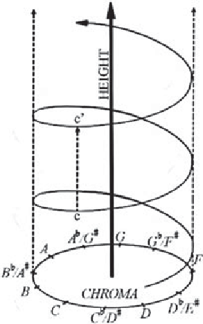</p>
</section><section class="cell" data-cell="43" id="celda-44"><p>Según los resultados de <strong>[R. N. Shepar]</strong>, el tono <math aria-label="(p)" display="inline" xmlns="http://www.w3.org/1998/Math/MathML"><mrow><mo stretchy="false">(</mo><mi>p</mi><mo stretchy="false">)</mo></mrow></math> percibido de una señal se puede factorizar en valores de croma <math aria-label="(c)" display="inline" xmlns="http://www.w3.org/1998/Math/MathML"><mrow><mo stretchy="false">(</mo><mi>c</mi><mo stretchy="false">)</mo></mrow></math> y altura de tono <math aria-label="(h)" display="inline" xmlns="http://www.w3.org/1998/Math/MathML"><mrow><mo stretchy="false">(</mo><mi>h</mi><mo stretchy="false">)</mo></mrow></math> como:</p>
<p><math aria-label="\begin{align}
    p &amp;= 2^{h+c}.
\end{align}" display="block" xmlns="http://www.w3.org/1998/Math/MathML"><mrow><mrow><mi>p</mi><mi>&amp;</mi><mo>=</mo><msup><mn>2</mn><mrow><mi>h</mi><mo>+</mo><mi>c</mi></mrow></msup><mo>.</mo></mrow></mrow></math></p>
<p>Si <math aria-label="c \in [0,1)" display="inline" xmlns="http://www.w3.org/1998/Math/MathML"><mrow><mi>c</mi><mo>∈</mo><mo stretchy="false">[</mo><mn>0</mn><mo>,</mo><mn>1</mn><mo stretchy="false">)</mo></mrow></math> la descomposición será única. Entonces, los cambios lineales en <math aria-label="c" display="inline" xmlns="http://www.w3.org/1998/Math/MathML"><mrow><mi>c</mi></mrow></math> estarán asociados en cambios logarítmicos en las frecuencias fundamentales asociadas con el tono. Además, si dividimos el intervalo <math aria-label="[0,1)" display="inline" xmlns="http://www.w3.org/1998/Math/MathML"><mrow><mo stretchy="false">[</mo><mn>0</mn><mo>,</mo><mn>1</mn><mo stretchy="false">)</mo></mrow></math> en <math aria-label="12" display="inline" xmlns="http://www.w3.org/1998/Math/MathML"><mrow><mn>12</mn></mrow></math> partes iguales, se puede obtener los <math aria-label="12" display="inline" xmlns="http://www.w3.org/1998/Math/MathML"><mrow><mn>12</mn></mrow></math> tonos de la <strong>escala cromática</strong>. Esto implica que la distancia que hay entre dos tonos depende de <math aria-label="c" display="inline" xmlns="http://www.w3.org/1998/Math/MathML"><mrow><mi>c</mi></mrow></math> (croma) y de <math aria-label="h" display="inline" xmlns="http://www.w3.org/1998/Math/MathML"><mrow><mi>h</mi></mrow></math> (altura del tono).</p>
<p>Viendo el croma y la altura del tono desde la perspectiva de la música occidental, tenemos que hay mucho énfasis en las relaciones de octava entre las notas de la escala musical.</p>
</section><section class="cell" data-cell="44" id="celda-45"><h1 id="seccion-33"><strong>2.1.5.5 Generalización del Croma</strong></h1>
<p>Mediante el modelo de frecuencias (equivalente a la descomposición de tono de <strong>[R. N. Shepar]</strong>) propuesto por <strong>[R. D. Patterson]</strong>, el croma puede generalizarse para trabajar con frecuencias. En este caso, la frecuencia <math aria-label="f" display="inline" xmlns="http://www.w3.org/1998/Math/MathML"><mrow><mi>f</mi></mrow></math> se descompone como</p>
<p><math aria-label="\begin{align}
    f &amp;= 2^{h+c},
\end{align}" display="block" xmlns="http://www.w3.org/1998/Math/MathML"><mrow><mrow><mi>f</mi><mi>&amp;</mi><mo>=</mo><msup><mn>2</mn><mrow><mi>h</mi><mo>+</mo><mi>c</mi></mrow></msup><mo>,</mo></mrow></mrow></math></p>
<p>donde <math aria-label="c \in [0,1)" display="inline" xmlns="http://www.w3.org/1998/Math/MathML"><mrow><mi>c</mi><mo>∈</mo><mo stretchy="false">[</mo><mn>0</mn><mo>,</mo><mn>1</mn><mo stretchy="false">)</mo></mrow></math> y <math aria-label="h \in \mathbb{Z}" display="inline" xmlns="http://www.w3.org/1998/Math/MathML"><mrow><mi>h</mi><mo>∈</mo><mi>ℤ</mi></mrow></math>. Además, para calcular el croma de una frecuencia dada, se realiza el siguiente cálculo</p>
<p><math aria-label="\begin{align}
    c = log_2 f - ⌊log_2 f⌋,
\end{align}" display="block" xmlns="http://www.w3.org/1998/Math/MathML"><mrow><mrow><mi>c</mi><mo>=</mo><mi>l</mi><mi>o</mi><msub><mi>g</mi><mn>2</mn></msub><mi>f</mi><mo>−</mo><mi>⌊</mi><mi>l</mi><mi>o</mi><msub><mi>g</mi><mn>2</mn></msub><mi>f</mi><mi>⌋</mi><mo>,</mo></mrow></mrow></math></p>
<p>donde <math aria-label="⌊⌋" display="inline" xmlns="http://www.w3.org/1998/Math/MathML"><mrow><mi>⌊</mi><mi>⌋</mi></mrow></math> denota la función entera más grande. Por lo tanto, el croma es la parte fraccionaria del logaritmo en base <math aria-label="2" display="inline" xmlns="http://www.w3.org/1998/Math/MathML"><mrow><mn>2</mn></mrow></math> de la frecuencia.</p>
</section><section class="cell" data-cell="45" id="celda-46"><h1 id="seccion-34"><strong>2.1.5.6 Cromagrama</strong></h1>
<p>Antes de definir el <strong>Cromagrama</strong>, definimos el <strong>espectro cromático (chroma spectrum)</strong> <math aria-label="S(c)" display="inline" xmlns="http://www.w3.org/1998/Math/MathML"><mrow><mi>S</mi><mo stretchy="false">(</mo><mi>c</mi><mo stretchy="false">)</mo></mrow></math>, como una medida de la fuerza de una señal con respecto a un valor de croma dado. Es decir, es análogo al <strong>espectro de potencia estándar de Fourier</strong> de una señal.</p>
<p>Dado que se puede elegir un espectro y extenderlo en el tiempo para crear una distribución de <strong>tiempo-frecuencia (time-frequency distribution - TFD)</strong> <math aria-label="s(t,f)" display="inline" xmlns="http://www.w3.org/1998/Math/MathML"><mrow><mi>s</mi><mo stretchy="false">(</mo><mi>t</mi><mo>,</mo><mi>f</mi><mo stretchy="false">)</mo></mrow></math>, también podemos expandir el croma en el tiemp para crear una distribución <strong>tiempo-croma (time-chroma)</strong> <math aria-label="s(t,c)" display="inline" xmlns="http://www.w3.org/1998/Math/MathML"><mrow><mi>s</mi><mo stretchy="false">(</mo><mi>t</mi><mo>,</mo><mi>c</mi><mo stretchy="false">)</mo></mrow></math>, siendo esta distribución la que denominamos <strong>cromagrama (chromagram)</strong> (distribución conjunta de la intensidad de la señal sobre las variables de tiempo y croma).</p>
<p>Dicho esto, definimos cromagrama como una reasignación de un TFD, como el espectrograma, a travpes de una función de agregación <math aria-label="G" display="inline" xmlns="http://www.w3.org/1998/Math/MathML"><mrow><mi>G</mi></mrow></math></p>
<p><math aria-label="\begin{align}
    s(t,c) &amp;= G(s(t,f)) &amp; \forall f = 2^{c+h},
\end{align}" display="block" xmlns="http://www.w3.org/1998/Math/MathML"><mrow><mrow><mi>s</mi><mo stretchy="false">(</mo><mi>t</mi><mo>,</mo><mi>c</mi><mo stretchy="false">)</mo><mi>&amp;</mi><mo>=</mo><mi>G</mi><mo stretchy="false">(</mo><mi>s</mi><mo stretchy="false">(</mo><mi>t</mi><mo>,</mo><mi>f</mi><mo stretchy="false">)</mo><mo stretchy="false">)</mo><mi>&amp;</mi><mo>∀</mo><mi>f</mi><mo>=</mo><msup><mn>2</mn><mrow><mi>c</mi><mo>+</mo><mi>h</mi></mrow></msup><mo>,</mo></mrow></mrow></math></p>
<p>donde <math aria-label="c \in [0,1)" display="inline" xmlns="http://www.w3.org/1998/Math/MathML"><mrow><mi>c</mi><mo>∈</mo><mo stretchy="false">[</mo><mn>0</mn><mo>,</mo><mn>1</mn><mo stretchy="false">)</mo></mrow></math> y <math aria-label="h \in \mathbb{Z}" display="inline" xmlns="http://www.w3.org/1998/Math/MathML"><mrow><mi>h</mi><mo>∈</mo><mi>ℤ</mi></mrow></math>.</p>
</section><section class="cell" data-cell="46" id="celda-47"><h1 id="seccion-35"><strong>2.1.5.7 Decisiones de Diseño del Cromagrama</strong></h1>
<p>A continuación, especificamos las decisiones fundamentales que se tienen que tomar para el cálculo del cromagrama (según las propiedades específicas de la señal que se quieran analizar).</p>
<h1 id="seccion-36"><strong>2.1.5.7.1 - Elección de la Función de Agregación <math aria-label="G" display="inline" xmlns="http://www.w3.org/1998/Math/MathML"><mrow><mi>G</mi></mrow></math></strong></h1>
<p>Teniendo en cuenta la analogía del <strong>solapamiento espectral (spectral aliasing, efecto en el cual las señales continuas distintas se tornen indistinguibles -solapamiento- cuando se muestrean digitalmente)</strong>, podemos elegir una sumatoria como función de agregación <math aria-label="G" display="inline" xmlns="http://www.w3.org/1998/Math/MathML"><mrow><mi>G</mi></mrow></math>. Es decir, el mapeo del cromagrama tendrá un comportamiento similar al mapeo de las frecuencias continuas a las frecuencias cíclicas discretas. La principal diferencia entre los mapeos, es la deformación logarítmica necesaria para mapear la frecuencia a croma. Entonces, podemos rescribir el cromograma como</p>
<p><math aria-label="\begin{align}
    s(t,c) = \sum_{k}s(t, 2^{c+k}),
\end{align}" display="block" xmlns="http://www.w3.org/1998/Math/MathML"><mrow><mrow><mi>s</mi><mo stretchy="false">(</mo><mi>t</mi><mo>,</mo><mi>c</mi><mo stretchy="false">)</mo><mo>=</mo><munder><mo>∑</mo><mrow><mi>k</mi></mrow></munder><mi>s</mi><mo stretchy="false">(</mo><mi>t</mi><mo>,</mo><msup><mn>2</mn><mrow><mi>c</mi><mo>+</mo><mi>k</mi></mrow></msup><mo stretchy="false">)</mo><mo>,</mo></mrow></mrow></math></p>
<p>donde <math aria-label="k" display="inline" xmlns="http://www.w3.org/1998/Math/MathML"><mrow><mi>k</mi></mrow></math> cubre un rango apropiado de un conjunto de números enteros. Luego, vemos que el cálculo del cromagrama se reduce a una simple suma ponderada de distribuciones escaladas de frecuencias, y solo requiere el cálculo de una distribución.</p>
<h1 id="seccion-37"><strong>2.1.5.7.2 - Elección de una Distribución de Tiempo-Frecuencia</strong></h1>
<p>A la hora de elegir una TFD, es importante analizar el sesgo de cada una ellas. Según <strong>[Wakefield, G. H.]</strong>, las técnicas de ventanas (extensiones de series de Fourier, STFT y transformadas de <math aria-label="Q-" display="inline" xmlns="http://www.w3.org/1998/Math/MathML"><mrow><mi>Q</mi><mo>−</mo></mrow></math>constante) generan segos en el tiempo y en la frecuencia segúnel principio de incertidumbre.</p>
<p>Diferentes TFD tratan de evitar el principio de incertidumbre y el sesgo, como la <strong>distribución de Wigner</strong>, pero debido a que los cálculos de magnitu y frecuencia no se suavizan (como en los métodos de ventanas), terminan produciendo un aumento en las fuentes de sesgo.</p>
<p>De acuerdo a lo descrito, <strong>[Wakefield, G. H.]</strong> propone que el <strong>espectrograma, la distribución modal y una adaptación de la transformada <math aria-label="Q-" display="inline" xmlns="http://www.w3.org/1998/Math/MathML"><mrow><mi>Q</mi><mo>−</mo></mrow></math>constante</strong>, son buenas elecciones como TFD.</p>
<p><strong>[Nelson, D.]</strong></p>
</section><section class="cell" data-cell="47" id="celda-48"><details class="source-code"><summary>Código Python · celda 48</summary><button class="copy-code" type="button">Copiar código</button><div class="highlight"><pre><span></span><span class="n">chromagram</span> <span class="o">=</span> <span class="n">librosa</span><span class="o">.</span><span class="n">feature</span><span class="o">.</span><span class="n">chroma_stft</span><span class="p">(</span><span class="n">y</span><span class="o">=</span><span class="n">happy_waveform</span><span class="p">,</span> <span class="n">sr</span><span class="o">=</span><span class="n">happy_sample_rate</span><span class="p">)</span>
<span class="n">plt</span><span class="o">.</span><span class="n">figure</span><span class="p">(</span><span class="n">figsize</span><span class="o">=</span><span class="p">(</span><span class="mi">10</span><span class="p">,</span> <span class="mi">4</span><span class="p">))</span>
<span class="n">librosa</span><span class="o">.</span><span class="n">display</span><span class="o">.</span><span class="n">specshow</span><span class="p">(</span><span class="n">chromagram</span><span class="p">,</span> <span class="n">y_axis</span><span class="o">=</span><span class="s1">'chroma'</span><span class="p">,</span> <span class="n">x_axis</span><span class="o">=</span><span class="s1">'time'</span><span class="p">)</span>
<span class="n">plt</span><span class="o">.</span><span class="n">colorbar</span><span class="p">(</span><span class="n">label</span><span class="o">=</span><span class="s1">'Relative Intensity'</span><span class="p">)</span>
<span class="n">plt</span><span class="o">.</span><span class="n">title</span><span class="p">(</span><span class="s1">'Happy Sample - Chromagram'</span><span class="p">)</span>
<span class="n">plt</span><span class="o">.</span><span class="n">tight_layout</span><span class="p">()</span>
</pre></div>
</details><div class="output">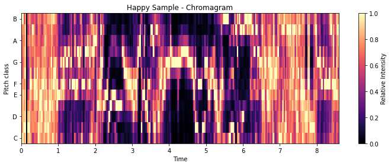</div></section><section class="cell" data-cell="48" id="celda-49"><h1 id="seccion-38"><strong>2.1.6 Transformada Q-Constante (Constant-Q Transform - CQT)</strong></h1>
<p>La <strong>Transformada Q-Constante (Constant-Q Transform - CQT)</strong> \cite{schorkhuber2010constant, brown1991calculation, singh2021non, brown1992efficient} en el contexto de "Reconocimiento de Emociones del Habla (Speech Emotion Recognition - S.E.R.)", es una técnica que permite transformar una señal <math aria-label="x(n)" display="inline" xmlns="http://www.w3.org/1998/Math/MathML"><mrow><mi>x</mi><mo stretchy="false">(</mo><mi>n</mi><mo stretchy="false">)</mo></mrow></math> que está en el <strong>dominio del tiempo (time-domain)</strong> a una señal que está en el dominio de la <strong>frecuencia del tiempo (time-frequency)</strong>, de manera que las frecuencias centrales de los <strong>contenedores (bins) de frecuencia estén geométricamente espaciados y sus factores <math aria-label="Q" display="inline" xmlns="http://www.w3.org/1998/Math/MathML"><mrow><mi>Q</mi></mrow></math> sean todos iguales.</strong> Es decir, la resolución de frecuencia es mejor para las frecuencias bjas y la resolución de tiempo es mejor para las frecuencias altas. Se puede decir que CQT es en escencia una <strong>Transformada Wavelet (Wavelet Transform)</strong>, pero con factores <math aria-label="Q" display="inline" xmlns="http://www.w3.org/1998/Math/MathML"><mrow><mi>Q</mi></mrow></math> elevados (<math aria-label="12-96" display="inline" xmlns="http://www.w3.org/1998/Math/MathML"><mrow><mn>12</mn><mo>−</mo><mn>96</mn></mrow></math> bins por octava).</p>
<p>Dentro del procesamiento de la música (CQT fue concebido sobre el campo de estudio del <strong>procesamiento de la música</strong>), interesa que los componentes de frecuencia se correspondan al <strong>espaciado de cuartos de tono (quarter-tone spacing)</strong> de igual escala reducida. Entonces, la frecuencia del k-ésimo component espectral se define como</p>
<p><math aria-label="\begin{align}
    f_k &amp;= (2^{1/24})^k f_{min},
\end{align}" display="block" xmlns="http://www.w3.org/1998/Math/MathML"><mrow><mrow><msub><mi>f</mi><mi>k</mi></msub><mi>&amp;</mi><mo>=</mo><mo stretchy="false">(</mo><msup><mn>2</mn><mrow><mn>1</mn><mo>/</mo><mn>24</mn></mrow></msup><msup><mo stretchy="false">)</mo><mi>k</mi></msup><msub><mi>f</mi><mrow><mi>m</mi><mi>i</mi><mi>n</mi></mrow></msub><mo>,</mo></mrow></mrow></math></p>
<p>donde <math aria-label="f" display="inline" xmlns="http://www.w3.org/1998/Math/MathML"><mrow><mi>f</mi></mrow></math> varía desde <math aria-label="f_{min}" display="inline" xmlns="http://www.w3.org/1998/Math/MathML"><mrow><msub><mi>f</mi><mrow><mi>m</mi><mi>i</mi><mi>n</mi></mrow></msub></mrow></math> hasta una frecuency superior elegida para estar por debajo de la frecuencia de Nyquist.</p>
<p>Luego, la resolución o ancho de banda (bandwidth) <math aria-label="\delta f" display="inline" xmlns="http://www.w3.org/1998/Math/MathML"><mrow><mi>δ</mi><mi>f</mi></mrow></math> para la DFT es igual a la frecuencia de muestreo (sampling rate) dividida por el tamaño de la ventana (número de muestras -samples- analizados en el dominio del tiempo). Por lo tanto, para que la <strong>relación entre la frecuencia y el ancho de banda sea constante (<math aria-label="Q-" display="inline" xmlns="http://www.w3.org/1998/Math/MathML"><mrow><mi>Q</mi><mo>−</mo></mrow></math>constante), el tamaño de la ventana debería variar inversamente con la frecuencia.</strong></p>
<p>Específicamente, para la resolución de cuarto de tono (quarter-tone resolution, se necesita</p>
<p><math aria-label="\begin{align}
    Q &amp;= \frac{f}{\delta f} = \frac{f}{0.029 f} = 34,
\end{align}" display="block" xmlns="http://www.w3.org/1998/Math/MathML"><mrow><mrow><mi>Q</mi><mi>&amp;</mi><mo>=</mo><mfrac><mrow><mi>f</mi></mrow><mrow><mi>δ</mi><mi>f</mi></mrow></mfrac><mo>=</mo><mfrac><mrow><mi>f</mi></mrow><mrow><mn>0.029</mn><mi>f</mi></mrow></mfrac><mo>=</mo><mn>34</mn><mo>,</mo></mrow></mrow></math></p>
<p>donde el <strong>factor de calidad <math aria-label="Q" display="inline" xmlns="http://www.w3.org/1998/Math/MathML"><mrow><mi>Q</mi></mrow></math></strong> se define como <math aria-label="f/\delta f" display="inline" xmlns="http://www.w3.org/1998/Math/MathML"><mrow><mi>f</mi><mo>/</mo><mi>δ</mi><mi>f</mi></mrow></math> y el ancho de banda como <math aria-label="\delta f = f/Q" display="inline" xmlns="http://www.w3.org/1998/Math/MathML"><mrow><mi>δ</mi><mi>f</mi><mo>=</mo><mi>f</mi><mo>/</mo><mi>Q</mi></mrow></math>. Sea una frecuencia de muestreo <math aria-label="S=1/T" display="inline" xmlns="http://www.w3.org/1998/Math/MathML"><mrow><mi>S</mi><mo>=</mo><mn>1</mn><mo>/</mo><mi>T</mi></mrow></math> donde <math aria-label="T" display="inline" xmlns="http://www.w3.org/1998/Math/MathML"><mrow><mi>T</mi></mrow></math> es el tiempo de muestreo (sample time), la longitud de la ventana en muestras en la frecuencia <math aria-label="f_k" display="inline" xmlns="http://www.w3.org/1998/Math/MathML"><mrow><msub><mi>f</mi><mi>k</mi></msub></mrow></math> estará dada por</p>
<p><math aria-label="\begin{align}
    N[k] &amp;= \frac{S}{\delta f_k} = (\frac{S}{f_k})Q,
\end{align}" display="block" xmlns="http://www.w3.org/1998/Math/MathML"><mrow><mrow><mi>N</mi><mo stretchy="false">[</mo><mi>k</mi><mo stretchy="false">]</mo><mi>&amp;</mi><mo>=</mo><mfrac><mrow><mi>S</mi></mrow><mrow><mi>δ</mi><msub><mi>f</mi><mi>k</mi></msub></mrow></mfrac><mo>=</mo><mo stretchy="false">(</mo><mfrac><mrow><mi>S</mi></mrow><mrow><msub><mi>f</mi><mi>k</mi></msub></mrow></mfrac><mo stretchy="false">)</mo><mi>Q</mi><mo>,</mo></mrow></mrow></math></p>
<p>donde la venta contiene <math aria-label="Q" display="inline" xmlns="http://www.w3.org/1998/Math/MathML"><mrow><mi>Q</mi></mrow></math> ciclos completos por cada frecuencia <math aria-label="f_k" display="inline" xmlns="http://www.w3.org/1998/Math/MathML"><mrow><msub><mi>f</mi><mi>k</mi></msub></mrow></math>, además, el periodo en muestras es <math aria-label="S/f_k" display="inline" xmlns="http://www.w3.org/1998/Math/MathML"><mrow><mi>S</mi><mo>/</mo><msub><mi>f</mi><mi>k</mi></msub></mrow></math>.</p>
<p>Si consideramos la DFT en términos del factor de calidad <math aria-label="Q = f/\delta f" display="inline" xmlns="http://www.w3.org/1998/Math/MathML"><mrow><mi>Q</mi><mo>=</mo><mi>f</mi><mo>/</mo><mi>δ</mi><mi>f</mi></mrow></math>, se tiene que <math aria-label="f/\delta f" display="inline" xmlns="http://www.w3.org/1998/Math/MathML"><mrow><mi>f</mi><mo>/</mo><mi>δ</mi><mi>f</mi></mrow></math> es igual al número de coeficientes, <math aria-label="k" display="inline" xmlns="http://www.w3.org/1998/Math/MathML"><mrow><mi>k</mi></mrow></math>, es decir, el número de periodos en la ventana fija para dicha frecuencia. Posteriormente, obtenemos la siguiente expresión para el <math aria-label="k-" display="inline" xmlns="http://www.w3.org/1998/Math/MathML"><mrow><mi>k</mi><mo>−</mo></mrow></math>ésimo componente espectral para la transformada <math aria-label="Q" display="inline" xmlns="http://www.w3.org/1998/Math/MathML"><mrow><mi>Q</mi></mrow></math> constante (considerando el componente correspondiente para la STFT):</p>
<p><math aria-label="\begin{align}
    X[k] &amp;= \sum_{n=0}^{N-1} W[n]x[n] e^{-j2\pi k n /N},
\end{align}" display="block" xmlns="http://www.w3.org/1998/Math/MathML"><mrow><mrow><mi>X</mi><mo stretchy="false">[</mo><mi>k</mi><mo stretchy="false">]</mo><mi>&amp;</mi><mo>=</mo><munderover><mo>∑</mo><mrow><mi>n</mi><mo>=</mo><mn>0</mn></mrow><mrow><mi>N</mi><mo>−</mo><mn>1</mn></mrow></munderover><mi>W</mi><mo stretchy="false">[</mo><mi>n</mi><mo stretchy="false">]</mo><mi>x</mi><mo stretchy="false">[</mo><mi>n</mi><mo stretchy="false">]</mo><msup><mi>e</mi><mrow><mo>−</mo><mi>j</mi><mn>2</mn><mi>π</mi><mi>k</mi><mi>n</mi><mo>/</mo><mi>N</mi></mrow></msup><mo>,</mo></mrow></mrow></math></p>
<p>donde <math aria-label="x[n]" display="inline" xmlns="http://www.w3.org/1998/Math/MathML"><mrow><mi>x</mi><mo stretchy="false">[</mo><mi>n</mi><mo stretchy="false">]</mo></mrow></math> es la enésima muestra de la función temporal digitalizada que se analiza, <math aria-label="2\pi k /N" display="inline" xmlns="http://www.w3.org/1998/Math/MathML"><mrow><mn>2</mn><mi>π</mi><mi>k</mi><mo>/</mo><mi>N</mi></mrow></math> es la frecuencia digital, <math aria-label="N/k" display="inline" xmlns="http://www.w3.org/1998/Math/MathML"><mrow><mi>N</mi><mo>/</mo><mi>k</mi></mrow></math> el periodo en las muestras (y el número de ciclos analizados es igual a <math aria-label="k" display="inline" xmlns="http://www.w3.org/1998/Math/MathML"><mrow><mi>k</mi></mrow></math>) y <math aria-label="W[n]" display="inline" xmlns="http://www.w3.org/1998/Math/MathML"><mrow><mi>W</mi><mo stretchy="false">[</mo><mi>n</mi><mo stretchy="false">]</mo></mrow></math> es la forma (shape) de la ventana.</p>
<p>Teniendo en cuenta las restricciones de las ecuaciones (1)-(3) para la CQT, la frecuencia digital del <math aria-label="k-" display="inline" xmlns="http://www.w3.org/1998/Math/MathML"><mrow><mi>k</mi><mo>−</mo></mrow></math>ésimo componente es <math aria-label="2\pi Q / N[k]" display="inline" xmlns="http://www.w3.org/1998/Math/MathML"><mrow><mn>2</mn><mi>π</mi><mi>Q</mi><mo>/</mo><mi>N</mi><mo stretchy="false">[</mo><mi>k</mi><mo stretchy="false">]</mo></mrow></math>. Luego, la función de ventana tiene la misma forma para cada componente, pero su longitud es determinada por <math aria-label="N[k]" display="inline" xmlns="http://www.w3.org/1998/Math/MathML"><mrow><mi>N</mi><mo stretchy="false">[</mo><mi>k</mi><mo stretchy="false">]</mo></mrow></math> (en función de las variables <math aria-label="k" display="inline" xmlns="http://www.w3.org/1998/Math/MathML"><mrow><mi>k</mi></mrow></math> y <math aria-label="n" display="inline" xmlns="http://www.w3.org/1998/Math/MathML"><mrow><mi>n</mi></mrow></math>). Dado que se tiene que realizar una normalización dividiendo la suma por <math aria-label="N[k]" display="inline" xmlns="http://www.w3.org/1998/Math/MathML"><mrow><mi>N</mi><mo stretchy="false">[</mo><mi>k</mi><mo stretchy="false">]</mo></mrow></math>, el número de los términos varía con <math aria-label="k" display="inline" xmlns="http://www.w3.org/1998/Math/MathML"><mrow><mi>k</mi></mrow></math>.</p>
<p>Reescribiendo la ec. (4) en base a lo expuesto anteriormente, se tiene que</p>
<p><math aria-label="\begin{align}
    X[k] &amp;= \frac{1}{N[k]} \sum_{n=0}^{N[k]-1} W[k,n] x[n] e^{-j2\pi Qn/N[k]},
\end{align}" display="block" xmlns="http://www.w3.org/1998/Math/MathML"><mrow><mrow><mi>X</mi><mo stretchy="false">[</mo><mi>k</mi><mo stretchy="false">]</mo><mi>&amp;</mi><mo>=</mo><mfrac><mrow><mn>1</mn></mrow><mrow><mi>N</mi><mo stretchy="false">[</mo><mi>k</mi><mo stretchy="false">]</mo></mrow></mfrac><munderover><mo>∑</mo><mrow><mi>n</mi><mo>=</mo><mn>0</mn></mrow><mrow><mi>N</mi><mo stretchy="false">[</mo><mi>k</mi><mo stretchy="false">]</mo><mo>−</mo><mn>1</mn></mrow></munderover><mi>W</mi><mo stretchy="false">[</mo><mi>k</mi><mo>,</mo><mi>n</mi><mo stretchy="false">]</mo><mi>x</mi><mo stretchy="false">[</mo><mi>n</mi><mo stretchy="false">]</mo><msup><mi>e</mi><mrow><mo>−</mo><mi>j</mi><mn>2</mn><mi>π</mi><mi>Q</mi><mi>n</mi><mo>/</mo><mi>N</mi><mo stretchy="false">[</mo><mi>k</mi><mo stretchy="false">]</mo></mrow></msup><mo>,</mo></mrow></mrow></math></p>
<p>donde <math aria-label="N[k]/Q" display="inline" xmlns="http://www.w3.org/1998/Math/MathML"><mrow><mi>N</mi><mo stretchy="false">[</mo><mi>k</mi><mo stretchy="false">]</mo><mo>/</mo><mi>Q</mi></mrow></math> es el periodo en las muestras (siempre analizado <math aria-label="Q-" display="inline" xmlns="http://www.w3.org/1998/Math/MathML"><mrow><mi>Q</mi><mo>−</mo></mrow></math>ciclos) y usando la ventana Hamming,</p>
<p><math aria-label="\begin{align}
    W[k,n] &amp;= \alpha + (1-\alpha) cos(2\pi n /N[k]),
\end{align}" display="block" xmlns="http://www.w3.org/1998/Math/MathML"><mrow><mrow><mi>W</mi><mo stretchy="false">[</mo><mi>k</mi><mo>,</mo><mi>n</mi><mo stretchy="false">]</mo><mi>&amp;</mi><mo>=</mo><mi>α</mi><mo>+</mo><mo stretchy="false">(</mo><mn>1</mn><mo>−</mo><mi>α</mi><mo stretchy="false">)</mo><mi>c</mi><mi>o</mi><mi>s</mi><mo stretchy="false">(</mo><mn>2</mn><mi>π</mi><mi>n</mi><mo>/</mo><mi>N</mi><mo stretchy="false">[</mo><mi>k</mi><mo stretchy="false">]</mo><mo stretchy="false">)</mo><mo>,</mo></mrow></mrow></math></p>
<p>donde <math aria-label="\alpha=25/46" display="inline" xmlns="http://www.w3.org/1998/Math/MathML"><mrow><mi>α</mi><mo>=</mo><mn>25</mn><mo>/</mo><mn>46</mn></mrow></math> y <math aria-label="0 \leq n \leq N[k]-1" display="inline" xmlns="http://www.w3.org/1998/Math/MathML"><mrow><mn>0</mn><mo>≤</mo><mi>n</mi><mo>≤</mo><mi>N</mi><mo stretchy="false">[</mo><mi>k</mi><mo stretchy="false">]</mo><mo>−</mo><mn>1</mn></mrow></math>.</p>
<p>En el caso de \cite{brown1991calculation}, propone <math aria-label="N[k]=N_{max}/(2^{1/24})^k" display="inline" xmlns="http://www.w3.org/1998/Math/MathML"><mrow><mi>N</mi><mo stretchy="false">[</mo><mi>k</mi><mo stretchy="false">]</mo><mo>=</mo><msub><mi>N</mi><mrow><mi>m</mi><mi>a</mi><mi>x</mi></mrow></msub><mo>/</mo><mo stretchy="false">(</mo><msup><mn>2</mn><mrow><mn>1</mn><mo>/</mo><mn>24</mn></mrow></msup><msup><mo stretchy="false">)</mo><mi>k</mi></msup></mrow></math>. Donde <math aria-label="N_{max}" display="inline" xmlns="http://www.w3.org/1998/Math/MathML"><mrow><msub><mi>N</mi><mrow><mi>m</mi><mi>a</mi><mi>x</mi></mrow></msub></mrow></math> es <math aria-label="Q" display="inline" xmlns="http://www.w3.org/1998/Math/MathML"><mrow><mi>Q</mi></mrow></math> veces el periodo de la menor frecuencia de análisis en las muestras.</p>
<p>Por lo tanto, la condición de Nyquist se convierte en <math aria-label="2\pi Q / N[k] &lt; \pi" display="inline" xmlns="http://www.w3.org/1998/Math/MathML"><mrow><mn>2</mn><mi>π</mi><mi>Q</mi><mo>/</mo><mi>N</mi><mo stretchy="false">[</mo><mi>k</mi><mo stretchy="false">]</mo><mo>&lt;</mo><mi>π</mi></mrow></math> (<math aria-label="N[k] &gt; 2Q" display="inline" xmlns="http://www.w3.org/1998/Math/MathML"><mrow><mi>N</mi><mo stretchy="false">[</mo><mi>k</mi><mo stretchy="false">]</mo><mo>&gt;</mo><mn>2</mn><mi>Q</mi></mrow></math> -debe haber al menos dos muestras por periodo para evitar el efecto de aliasing-). Si la función de ventana <math aria-label="W[k,n]" display="inline" xmlns="http://www.w3.org/1998/Math/MathML"><mrow><mi>W</mi><mo stretchy="false">[</mo><mi>k</mi><mo>,</mo><mi>n</mi><mo stretchy="false">]</mo></mrow></math> se establece igual a uno en el intervalo <math aria-label="(0, N[k]-1)" display="inline" xmlns="http://www.w3.org/1998/Math/MathML"><mrow><mo stretchy="false">(</mo><mn>0</mn><mo>,</mo><mi>N</mi><mo stretchy="false">[</mo><mi>k</mi><mo stretchy="false">]</mo><mo>−</mo><mn>1</mn><mo stretchy="false">)</mo></mrow></math>, se tendría una ventana rectangular.</p>
<h1 id="seccion-39"><strong>2.1.6.1 Limitaciones</strong></h1>
<p>Según \cite{schorkhuber2010constant}, existen ciertas limitaciones al usar CQT para el procesamiento de señales, y que le impiden, reemplazar a las DFT. Algunas de ellas son:</p>
<ul>
<li>Es computacionalmente costoso calcular la CQT (aún más que la DFT).</li>
<li>Carece de una transformada inversa, es decir, no permite una rescontrucción perfecta de la señal original a partir de sus coeficientes de transformada.</li>
<li>Produce una estructura de datos más difícil de trabajar que el espectrograma (matriz de tiempo-frecuencia) obtenido mediante el uso de la STFT en marcos de tiempos sucesivos.</li>
<li>La resolución de tiempo varía para diferentes intervalos de frecuencia ("muestreo" para diferentes intervalos de frecuencia -frequency bins- no está sincronizado).</li>
</ul>
<h1 id="seccion-40"><strong>2.1.6.1 Algoritmo de Brown y Puckette</strong></h1>
<p>El algoritmo propuesto por \cite{brown1992efficient}, se basa en la transformación de una DFT en una CQT donde <math aria-label="Q" display="inline" xmlns="http://www.w3.org/1998/Math/MathML"><mrow><mi>Q</mi></mrow></math> es la relación entre la frecuencia central y el ancho de banda. Además, hace uso de <strong>núcleos (kernels)</strong> que luego se aplican a cada DFT subsecuente, permitiendo aprovechar la ventaja computacional del cálculo de la FFT (en el dominio de la frecuencia logarítmica).</p>
<p>La CQT puede ser calculada directamente evaluando \cite{brown1991calculation}:</p>
<p><math aria-label="\begin{align}
    X^{cq}[k_{cq}] &amp;= \sum_{n=0}^{N[k_{cq}]-1} w[n, k_{cq}]x[n] e^{-j\omega_{k_{cq^n}}},
\end{align}" display="block" xmlns="http://www.w3.org/1998/Math/MathML"><mrow><mrow><msup><mi>X</mi><mrow><mi>c</mi><mi>q</mi></mrow></msup><mo stretchy="false">[</mo><msub><mi>k</mi><mrow><mi>c</mi><mi>q</mi></mrow></msub><mo stretchy="false">]</mo><mi>&amp;</mi><mo>=</mo><munderover><mo>∑</mo><mrow><mi>n</mi><mo>=</mo><mn>0</mn></mrow><mrow><mi>N</mi><mo stretchy="false">[</mo><msub><mi>k</mi><mrow><mi>c</mi><mi>q</mi></mrow></msub><mo stretchy="false">]</mo><mo>−</mo><mn>1</mn></mrow></munderover><mi>w</mi><mo stretchy="false">[</mo><mi>n</mi><mo>,</mo><msub><mi>k</mi><mrow><mi>c</mi><mi>q</mi></mrow></msub><mo stretchy="false">]</mo><mi>x</mi><mo stretchy="false">[</mo><mi>n</mi><mo stretchy="false">]</mo><msup><mi>e</mi><mrow><mo>−</mo><mi>j</mi><msub><mi>ω</mi><mrow><msub><mi>k</mi><mrow><mi>c</mi><msup><mi>q</mi><mi>n</mi></msup></mrow></msub></mrow></msub></mrow></msup><mo>,</mo></mrow></mrow></math></p>
<p>donde <math aria-label="X^{cq}[k_{cq}]" display="inline" xmlns="http://www.w3.org/1998/Math/MathML"><mrow><msup><mi>X</mi><mrow><mi>c</mi><mi>q</mi></mrow></msup><mo stretchy="false">[</mo><msub><mi>k</mi><mrow><mi>c</mi><mi>q</mi></mrow></msub><mo stretchy="false">]</mo></mrow></math> es el <math aria-label="k_{cq}" display="inline" xmlns="http://www.w3.org/1998/Math/MathML"><mrow><msub><mi>k</mi><mrow><mi>c</mi><mi>q</mi></mrow></msub></mrow></math> componente de la CQT, <math aria-label="x[n]" display="inline" xmlns="http://www.w3.org/1998/Math/MathML"><mrow><mi>x</mi><mo stretchy="false">[</mo><mi>n</mi><mo stretchy="false">]</mo></mrow></math> es una función <strong>muestreada (sampled)</strong> del tiempo y para cada valor de <math aria-label="k_{cq}" display="inline" xmlns="http://www.w3.org/1998/Math/MathML"><mrow><msub><mi>k</mi><mrow><mi>c</mi><mi>q</mi></mrow></msub></mrow></math>, <math aria-label="w[n,k_{cq}]" display="inline" xmlns="http://www.w3.org/1998/Math/MathML"><mrow><mi>w</mi><mo stretchy="false">[</mo><mi>n</mi><mo>,</mo><msub><mi>k</mi><mrow><mi>c</mi><mi>q</mi></mrow></msub><mo stretchy="false">]</mo></mrow></math> es la función de ventana de tamaño <math aria-label="N[k_{cq}]" display="inline" xmlns="http://www.w3.org/1998/Math/MathML"><mrow><mi>N</mi><mo stretchy="false">[</mo><msub><mi>k</mi><mrow><mi>c</mi><mi>q</mi></mrow></msub><mo stretchy="false">]</mo></mrow></math>. En este caso, la exponencial tiene el efecto de un filtro para la frecuencia central <math aria-label="\omega_{k_{cq}}" display="inline" xmlns="http://www.w3.org/1998/Math/MathML"><mrow><msub><mi>ω</mi><mrow><msub><mi>k</mi><mrow><mi>c</mi><mi>q</mi></mrow></msub></mrow></msub></mrow></math>.</p>
<p>Dado que el cálculo de la ec. (2.1.6.1) es ineficiente, se puede desmotrar que para dos funciones discretas cualesquiera de tiempo <math aria-label="x[n]" display="inline" xmlns="http://www.w3.org/1998/Math/MathML"><mrow><mi>x</mi><mo stretchy="false">[</mo><mi>n</mi><mo stretchy="false">]</mo></mrow></math> y <math aria-label="y[n]" display="inline" xmlns="http://www.w3.org/1998/Math/MathML"><mrow><mi>y</mi><mo stretchy="false">[</mo><mi>n</mi><mo stretchy="false">]</mo></mrow></math></p>
<p><math aria-label="\begin{align}
    \sum_{n=0}^{N-1} x[n]y^{*}[n] &amp;= \frac{1}{N} \sum_{k=0}^{N-1} X[k]Y^{*}k,
\end{align}" display="block" xmlns="http://www.w3.org/1998/Math/MathML"><mrow><mrow><munderover><mo>∑</mo><mrow><mi>n</mi><mo>=</mo><mn>0</mn></mrow><mrow><mi>N</mi><mo>−</mo><mn>1</mn></mrow></munderover><mi>x</mi><mo stretchy="false">[</mo><mi>n</mi><mo stretchy="false">]</mo><msup><mi>y</mi><mrow><mo>*</mo></mrow></msup><mo stretchy="false">[</mo><mi>n</mi><mo stretchy="false">]</mo><mi>&amp;</mi><mo>=</mo><mfrac><mrow><mn>1</mn></mrow><mrow><mi>N</mi></mrow></mfrac><munderover><mo>∑</mo><mrow><mi>k</mi><mo>=</mo><mn>0</mn></mrow><mrow><mi>N</mi><mo>−</mo><mn>1</mn></mrow></munderover><mi>X</mi><mo stretchy="false">[</mo><mi>k</mi><mo stretchy="false">]</mo><msup><mi>Y</mi><mrow><mo>*</mo></mrow></msup><mi>k</mi><mo>,</mo></mrow></mrow></math></p>
<p>donde <math aria-label="X[k]" display="inline" xmlns="http://www.w3.org/1998/Math/MathML"><mrow><mi>X</mi><mo stretchy="false">[</mo><mi>k</mi><mo stretchy="false">]</mo></mrow></math> e <math aria-label="Y[k]" display="inline" xmlns="http://www.w3.org/1998/Math/MathML"><mrow><mi>Y</mi><mo stretchy="false">[</mo><mi>k</mi><mo stretchy="false">]</mo></mrow></math> son las DFT de <math aria-label="x[n]" display="inline" xmlns="http://www.w3.org/1998/Math/MathML"><mrow><mi>x</mi><mo stretchy="false">[</mo><mi>n</mi><mo stretchy="false">]</mo></mrow></math> e <math aria-label="y[n]" display="inline" xmlns="http://www.w3.org/1998/Math/MathML"><mrow><mi>y</mi><mo stretchy="false">[</mo><mi>n</mi><mo stretchy="false">]</mo></mrow></math>, y <math aria-label="Y^{*}[k]" display="inline" xmlns="http://www.w3.org/1998/Math/MathML"><mrow><msup><mi>Y</mi><mrow><mo>*</mo></mrow></msup><mo stretchy="false">[</mo><mi>k</mi><mo stretchy="false">]</mo></mrow></math> es el conjugado complejo de <math aria-label="Y[k]" display="inline" xmlns="http://www.w3.org/1998/Math/MathML"><mrow><mi>Y</mi><mo stretchy="false">[</mo><mi>k</mi><mo stretchy="false">]</mo></mrow></math>.</p>
</section><section class="cell" data-cell="49" id="celda-50"><h1 id="seccion-41"><strong>2.1.7 Distribución de Wigner</strong></h1>
</section><section class="cell" data-cell="50" id="celda-51"><h1 id="seccion-42">**2.1.8 **</h1>
</section><div class="pager"><a href="clase-14-14-inotroduccion-a-asr-parte-1.html">← 14 - Introducción a ASR - Parte 1</a><a href="clase-14-1-2-speaker-diarization-test.html">_1_2_Speaker_Diarization_Test →</a></div><footer><p>© 2026 Jacobo León Juárez. Material docente propio: <a href="https://creativecommons.org/licenses/by/4.0/">CC BY 4.0</a>. Código propio: Apache 2.0. Los materiales de terceros conservan sus autores y condiciones.</p><p><a href="../citar.html">Cómo citar · BibTeX</a> · <a href="https://github.com/leonCTFHTB/NLP-ASR-ML-DL-2026/archive/refs/heads/main.zip">Descargar repositorio</a></p><p class="third-party-notice">Los pasajes adaptados de Dive into Deep Learning conservan CC BY-SA 4.0 y su código MIT modificada. <a href="../citar.html">Créditos y condiciones de las fuentes</a></p><p><a href="../revision.html">Revisión técnica y criterios editoriales</a></p></footer></main><script src="../assets/site.js"></script></body></html>